PROTOCOLOS Y SERVICIOS DE CORREO ELECTRÓNICO
PROTOCOLOS Y SERVICIOS DE CORREO ELECTRÓNICO
Fundamentos del correo electrónico
Protocolo SMTP
Protocolos de acceso al correo electrónico: POP3 e IMAP
El servicio DNS y el correo electrónico
Arquitectura, funcionamiento y configuración de servidores de correo electrónico
Gestión de usuarios, buzones y alias
Seguridad y prevención del uso indebido del servicio de correo
Autenticación de dominios y sistemas de protección del correo
Clientes de correo electrónico
Escenarios de implantación e integración del servicio de correo
Fundamentos del correo electrónico
Introducción
El correo electrónico (email) es un servicio de comunicación que permite intercambiar mensajes digitales entre usuarios a través de una red. Un mensaje puede contener texto, imágenes, documentos y otros archivos adjuntos. A diferencia de una conversación en tiempo real, el emisor y el destinatario no necesitan estar conectados simultáneamente.
El servicio se apoya en una arquitectura distribuida: los servidores de distintas organizaciones cooperan mediante protocolos normalizados. Así, un usuario de una organización puede enviar un mensaje a otra sin que ambos utilicen el mismo programa de correo ni el mismo sistema operativo.
En este capítulo se estudia el funcionamiento lógico del servicio, sin abordar la instalación de aplicaciones concretas. Se utilizarán los dominios ficticios empresa.example y centro.example, reservados para documentación, que no representan servidores públicos operativos.
Un intercambio de correo
Ana, de la empresa, envía un documento a Pablo, del centro educativo. El servidor del centro recibe el mensaje y lo deposita en el buzón de Pablo. Aunque Pablo tenga apagado su ordenador, podrá leerlo cuando vuelva a conectarse.
Evolución del correo electrónico
Los primeros sistemas de mensajería permitían intercambiar mensajes entre usuarios de un mismo ordenador. Con la aparición de redes de ordenadores surgió la necesidad de transmitirlos entre sistemas diferentes. En 1971 se sitúa habitualmente la introducción del correo en red de ARPANET y del carácter @ como separador entre el usuario y el sistema de destino.
Durante la década de 1980 se consolidaron SMTP y los primeros protocolos de acceso remoto a buzones. El DNS permitió identificar los servidores responsables de cada dominio. Posteriormente, MIME facilitó el intercambio de contenidos multimedia y archivos adjuntos, y el webmail permitió acceder al correo desde el navegador.
| Etapa | Aportación principal |
|---|---|
| Primeros sistemas multiusuario | Mensajes dentro de un mismo equipo. |
| Década de 1970 | Intercambio entre equipos conectados en red. |
| Década de 1980 | Normalización de SMTP, DNS y acceso remoto a buzones. |
| Década de 1990 | MIME, expansión del correo en Internet y webmail. |
| Siglo XXI | Acceso móvil, sincronización, cifrado y autenticación de dominios. |
La evolución no ha sustituido por completo los protocolos originales: SMTP sigue siendo el mecanismo fundamental de transferencia de correo, mientras que sus extensiones y los protocolos de acceso han añadido nuevas funcionalidades.
Características del servicio de correo electrónico
El correo es un servicio asíncrono, basado en el modelo de almacenamiento y reenvío (store and forward). Un servidor puede aceptar un mensaje, guardarlo temporalmente en una cola y tratar de transferirlo más tarde. Si el destino no está disponible, pueden realizarse nuevos intentos hasta alcanzar el límite configurado.
Propiedades del servicio
| Característica | Significado |
|---|---|
| Asincronía | El destinatario puede leer el mensaje posteriormente. |
| Distribución | Distintos servidores colaboran para transportar mensajes. |
| Interoperabilidad | Los protocolos permiten comunicar aplicaciones diferentes. |
| Persistencia | Los mensajes pueden conservarse en buzones y archivos. |
| Multiplicidad | Un mensaje puede dirigirse a varios destinatarios. |
| Multimedia | MIME permite representar contenidos de distintos tipos. |
Limitaciones
La aceptación de un mensaje por un servidor no garantiza que el destinatario lo haya leído ni que aparezca en su bandeja de entrada. Puede ser rechazado en una etapa posterior, clasificado como correo no deseado o eliminado según las políticas del servicio. El correo tampoco garantiza por sí mismo la autenticidad del remitente ni la confidencialidad de extremo a extremo.
Servidor temporalmente no disponible
Si el servidor de centro.example no responde, el servidor emisor puede conservar el mensaje en su cola. Cuando el destino vuelva a estar disponible, podrá reintentar la entrega. Si el fallo persiste, normalmente se genera una notificación de imposibilidad de entrega, siempre que proceda.
Arquitectura del sistema de correo electrónico
El sistema está formado por clientes, agentes de correo, almacenamiento de mensajes y servicios auxiliares, especialmente DNS. Conviene distinguir el subsistema de envío y transferencia del subsistema de entrega y acceso al buzón.
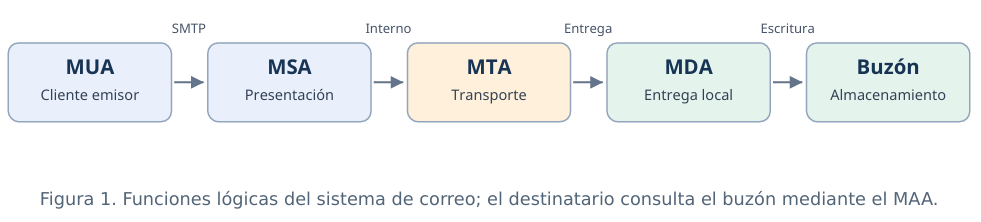
Envío y transferencia
El cliente entrega el mensaje al servicio de envío de su organización. Este comprueba las condiciones de aceptación y lo incorpora al sistema de transporte. Si el destinatario pertenece a otro dominio, los agentes de transferencia determinan el servidor de destino y establecen una comunicación SMTP.
Entrega y acceso
El servidor receptor acepta el mensaje si cumple sus políticas y lo entrega al buzón correspondiente. El destinatario puede acceder a él mediante IMAP, POP3 o una aplicación webmail. Consultar un buzón no equivale a transferir un mensaje entre dominios.
Arquitectura lógica y física
Los componentes son funciones lógicas, no necesariamente máquinas diferentes. En una organización pequeña pueden coexistir en un único servidor. En una infraestructura grande pueden distribuirse entre servidores de entrada, salida, almacenamiento y acceso remoto.
Dos dominios de correo
Ana utiliza ana@empresa.example y Pablo utiliza pablo@centro.example. Los dominios tienen servidores llamados mail.empresa.example y mail.centro.example. El cliente de Ana no necesita conocer la dirección IP de Pablo: el sistema de transporte localiza el servidor responsable del dominio receptor mediante DNS.
Componentes del sistema de correo electrónico (MUA, MSA, MTA, MDA y MAA)
Cada agente cumple una función diferenciada dentro del recorrido de los mensajes. Una misma aplicación puede desempeñar varias de ellas.
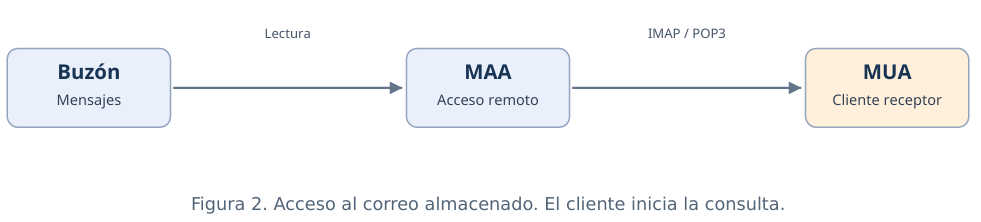
| Agente | Nombre completo | Función |
|---|---|---|
| MUA | Mail User Agent | Redacta, envía, consulta y organiza mensajes. |
| MSA | Mail Submission Agent | Recibe mensajes enviados por los usuarios y aplica políticas de envío. |
| MTA | Mail Transfer Agent | Transfiere mensajes a otros agentes de correo. |
| MDA | Mail Delivery Agent | Entrega mensajes al almacenamiento del destinatario. |
| MAA | Mail Access Agent | Facilita el acceso remoto a los mensajes almacenados. |
MUA: cliente de correo
El MUA proporciona la interfaz de usuario. Puede ser una aplicación de escritorio, móvil o web. En un cliente tradicional se utiliza normalmente SMTP para el envío e IMAP o POP3 para la consulta. En webmail, el navegador se comunica con la aplicación web mediante HTTPS y esta interactúa con los servicios de correo.
MSA: agente de envío
Recibe los mensajes que los usuarios desean enviar. Habitualmente exige autenticación y comprueba límites, permisos y formato. La entrega inicial al MSA se denomina submission y se distingue de la retransmisión entre servidores.
MTA: agente de transferencia
Gestiona el transporte de mensajes. Puede recibir correo de un MSA o de otro MTA, determinar el destino, consultar DNS, mantener colas y realizar reintentos. Un MTA puede actuar como cliente SMTP en una conexión y como servidor SMTP en otra.
MDA: agente de entrega
Realiza la entrega al buzón final, aplicando, si corresponde, cuotas, filtros y reglas de organización. La entrega puede realizarse mediante una interfaz local o mediante LMTP, entre otros mecanismos. No es imprescindible que exista un proceso separado denominado MDA.
MAA: agente de acceso
Es la función que permite consultar el buzón desde otro equipo. Los servidores IMAP y POP3 representan esta función. IMAP permite gestionar y sincronizar mensajes y carpetas en el servidor; POP3 está orientado principalmente a recuperar mensajes.
Identificación de agentes
Cuando Ana pulsa Enviar, interviene el MUA y normalmente un MSA. El transporte entre organizaciones corresponde a los MTA. Al almacenar el mensaje en el buzón de Pablo interviene el MDA. Cuando Pablo consulta su bandeja mediante IMAP, utiliza su MUA y el servicio de acceso remoto (MAA).
Direcciones de correo electrónico
Una dirección de correo tiene normalmente la forma parte-local@dominio. La parte local identifica un destino dentro del dominio; el dominio permite determinar qué sistema gestiona el correo. El nombre del servidor no tiene por qué coincidir con el dominio de la dirección.
| Elemento | Ejemplo | Función |
|---|---|---|
| Parte local | ana | Identificador del destinatario dentro del dominio. |
| Separador | @ | Separa la parte local del dominio. |
| Dominio | empresa.example | Identifica el dominio de correo. |
| Nombre del servidor | mail.empresa.example | Identifica un equipo que presta el servicio. |
La parte local no tiene por qué coincidir con una cuenta del sistema operativo. Puede identificar un buzón, un alias o una lista de distribución. El dominio no distingue mayúsculas de minúsculas; la parte local puede distinguirlas según las reglas del sistema receptor, aunque habitualmente se evita esa distinción.
Dirección y nombre de presentación
En una cabecera puede aparecer Ana García <ana@empresa.example>. El nombre de presentación es información destinada al lector; la dirección es la que identifica el destino. El nombre de presentación no acredita la identidad de quien envía el mensaje.
Varias direcciones para un buzón
Las direcciones ana@empresa.example y soporte@empresa.example pueden entregar mensajes al mismo buzón si soporte es un alias de Ana. El alias no necesita disponer de almacenamiento propio.
Estructura de un mensaje de correo electrónico
Un mensaje conforme al formato de correo de Internet se compone de una sección de cabeceras y un cuerpo, separados por una línea vacía. Las cabeceras contienen campos con la forma Nombre: valor. El cuerpo contiene el contenido del mensaje, que puede estar organizado mediante MIME.
| Cabecera | Finalidad |
|---|---|
| From | Autor declarado del mensaje. |
| To | Destinatarios principales declarados. |
| Cc | Destinatarios visibles en copia. |
| Bcc | Destinatarios en copia oculta; normalmente no se conserva en las copias entregadas. |
| Subject | Asunto del mensaje. |
| Date | Fecha de creación declarada. |
| Message-ID | Identificador del mensaje. |
| Reply-To | Dirección sugerida para las respuestas. |
| Received | Información de trazabilidad añadida por los servidores de transporte. |
| MIME-Version / Content-Type | Información sobre el formato del contenido. |
Ejemplo de mensaje en formato original
From: Ana <ana@empresa.example>
To: Pablo <pablo@centro.example>
Date: Wed, 25 Nov 2026 10:00:00 +0100
Subject: Reunion del departamento
Message-ID: <001@empresa.example>
Hola Pablo:
La reunion sera el viernes.
Un saludo.
La línea vacía indica el final de las cabeceras. Los servidores añaden normalmente campos de trazabilidad Received durante la transferencia. Las cabeceras permiten investigar el recorrido, pero no todas tienen el mismo grado de confianza: un emisor puede introducir campos falsos antes de entregar el mensaje.
Diferencias entre el sobre SMTP y las cabeceras del mensaje
El sobre SMTP contiene las direcciones utilizadas por el sistema de transporte. Se establece durante la conversación SMTP mediante MAIL FROM (remitente del sobre) y uno o varios RCPT TO (destinatarios del sobre). No forma parte del contenido transmitido en DATA.
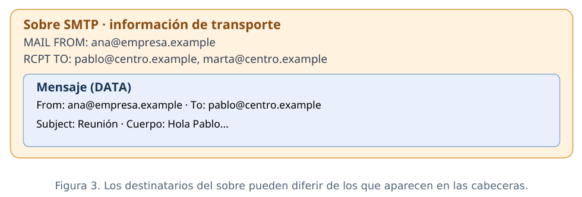
Las cabeceras From, To y Cc forman parte del mensaje y están destinadas principalmente a describirlo. El transporte no decide los destinos de entrega únicamente leyendo To.
| Aspecto | Sobre SMTP | Cabeceras del mensaje |
|---|---|---|
| Remitente | MAIL FROM | From |
| Destinatario | RCPT TO | To, Cc, Bcc |
| Función | Transporte y entrega | Información del mensaje |
| Visibilidad | No necesariamente visible al usuario | Visible total o parcialmente en el cliente |
Copia oculta
Ana envía un mensaje a Pablo y añade a Marta en copia oculta. El cliente puede generar dos destinatarios SMTP, pablo@centro.example y marta@centro.example, pero la cabecera To solo muestra a Pablo. De este modo, Marta recibe el mensaje sin que su dirección figure en la copia entregada a Pablo.
El remitente del sobre sirve, entre otras funciones, para dirigir las notificaciones de fallo de entrega. En las notificaciones generadas por el sistema puede utilizarse un remitente de sobre vacío (MAIL FROM:<>) para evitar bucles de notificaciones. El campo Return-Path se incorpora en la entrega final para reflejar el remitente del sobre.
Formato de los mensajes y estándar MIME
El formato original de correo estaba orientado a texto ASCII. MIME (Multipurpose Internet Mail Extensions) amplía el formato para representar texto con diferentes juegos de caracteres, contenido HTML, imágenes, documentos y mensajes con múltiples partes.
MIME no es un protocolo de transporte: describe cómo se organiza y codifica el contenido que se transmite mediante SMTP y se recupera a través de los servicios de acceso.
Cabeceras MIME
| Campo | Finalidad |
|---|---|
| MIME-Version | Identifica la versión del formato MIME. |
| Content-Type | Especifica el tipo de contenido y sus parámetros. |
| Content-Transfer-Encoding | Indica la codificación utilizada para transportar el contenido. |
| Content-Disposition | Sugiere la presentación en línea o como archivo adjunto. |
Tipos de contenido
| Tipo MIME | Ejemplo de utilización |
|---|---|
| text/plain | Texto sin formato. |
| text/html | Texto con marcado HTML. |
| image/jpeg | Imagen JPEG. |
| application/pdf | Documento PDF. |
| multipart/alternative | Varias representaciones de un mismo contenido. |
| multipart/mixed | Combinación de partes independientes, como texto y adjuntos. |
Codificación del contenido
Base64 representa datos binarios mediante caracteres ASCII y aumenta su tamaño aproximadamente un tercio, sin contar saltos de línea y cabeceras. Quoted-printable permite representar texto que contiene caracteres no ASCII manteniendo legibles muchos caracteres originales. Ninguna de estas codificaciones constituye cifrado ni protege la confidencialidad.
Mensaje con archivo adjunto
Un mensaje puede utilizar multipart/mixed para contener una primera parte text/plain y una segunda parte application/pdf codificada en Base64. El programa receptor interpreta las cabeceras de cada parte y permite visualizar el texto o guardar el documento.
MIME-Version: 1.0
Content-Type: multipart/mixed; boundary="limite123"
--limite123
Content-Type: text/plain; charset=UTF-8
Adjunto un fichero de ejemplo.
--limite123
Content-Type: text/plain; name="nota.txt"
Content-Disposition: attachment; filename="nota.txt"
Content-Transfer-Encoding: base64
SG9sYQ==
--limite123--
En el ejemplo, SG9sYQ== representa el texto Hola. El parámetro boundary identifica los separadores entre partes y el último separador termina con dos guiones adicionales.
Proceso completo de envío y recepción de un mensaje
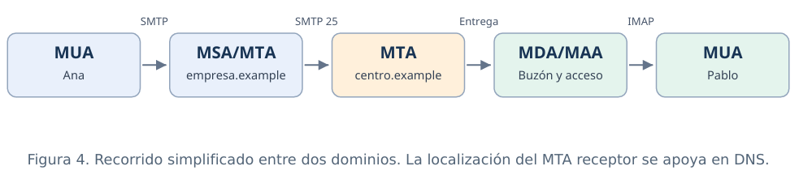
Para comprender el recorrido se utiliza el escenario de Ana y Pablo. Se supone que ambas organizaciones disponen de los servicios correspondientes y que sus políticas permiten el intercambio de mensajes.
Envío y localización del destino
- Ana redacta el mensaje en su MUA e indica la dirección pablo@centro.example.
- El MUA entrega el mensaje al MSA mediante SMTP de envío, normalmente con autenticación y TLS.
- El sistema emisor identifica el dominio centro.example y determina el destino del transporte. En la entrega directa consulta normalmente los registros MX del dominio mediante DNS y resuelve el nombre del servidor seleccionado.
- El MTA emisor inicia una sesión SMTP con el MTA receptor, normalmente en el puerto TCP 25. Si se utiliza un intermediario, puede transferir primero el mensaje a este.
Recepción y lectura
- El MTA receptor evalúa las políticas de aceptación y los destinatarios. Si acepta el mensaje, asume la responsabilidad de tramitarlo.
- El sistema de entrega deposita el mensaje en el buzón de Pablo. Si la entrega no puede completarse, el servidor debe gestionar el fallo según las reglas aplicables.
- Pablo accede a su buzón mediante IMAP, POP3 o webmail.
- Si Pablo responde, se genera un nuevo mensaje y comienza un nuevo proceso de envío en sentido contrario.
Correo interno frente a correo externo
Si Ana envía un mensaje a otro usuario de empresa.example, el sistema puede realizar una entrega local sin establecer una sesión SMTP con un servidor de otro dominio. Si escribe a Pablo, el correo normalmente requiere transferencia entre organizaciones. En ambos casos el destinatario consulta su buzón de manera independiente del proceso de transporte.
Protocolos implicados en el servicio de correo electrónico
El correo utiliza varios protocolos de aplicación, generalmente sobre TCP para el transporte de correo y el acceso a buzones. DNS se utiliza como servicio auxiliar de resolución y puede utilizar UDP o TCP. TLS protege las comunicaciones cuando está correctamente negociado y validado.
| Protocolo o servicio | Puerto habitual | Función |
|---|---|---|
| SMTP | TCP 25 | Transferencia entre servidores. |
| SMTP submission | TCP 587 | Envío por clientes, normalmente con STARTTLS. |
| SMTP submission con TLS implícito | TCP 465 | Envío con TLS desde el inicio. |
| POP3 | TCP 110 / 995 | Recuperación de mensajes; 995 usa TLS implícito. |
| IMAP | TCP 143 / 993 | Acceso y sincronización; 993 usa TLS implícito. |
| DNS | UDP/TCP 53 | Localización de servidores y otros datos del dominio. |
| HTTPS | TCP 443 (habitualmente) | Acceso webmail mediante navegador. |
| LMTP | Socket local o TCP configurado | Entrega de mensajes entre componentes. |
En los puertos 110 y 143 puede negociarse TLS mediante las extensiones correspondientes. En los puertos de TLS implícito, la negociación TLS precede al intercambio de comandos del protocolo. El puerto por sí solo no garantiza una configuración segura.
Diferencia entre envío y acceso
SMTP permite presentar y transferir mensajes, pero no consultar el contenido de un buzón. POP3 e IMAP permiten acceder al correo recibido, pero no sustituyen a SMTP para el envío. Un cliente de correo suele necesitar parámetros independientes para los servicios entrante y saliente.
Configuración conceptual de una cuenta
Para ana@empresa.example, se podría utilizar mail.empresa.example en el puerto 587 con STARTTLS y autenticación para el envío, y el mismo nombre en el puerto 993 con TLS implícito para IMAP. Aunque ambos servicios compartan nombre, son servicios diferentes. Los valores concretos dependen de la infraestructura y sus políticas.
Referencias normativas para ampliar conocimientos
- RFC 5598: arquitectura del correo electrónico de Internet.
- RFC 5321 y RFC 5322: SMTP y formato de mensajes, respectivamente.
- RFC 6409 y RFC 8314: envío de mensajes y uso de TLS en envío y acceso.
- RFC 1939 y RFC 9051: POP3 e IMAP4rev2.
- RFC 2045 y RFC 2046: formato MIME y tipos de medios.
Estas referencias identifican especificaciones fundamentales para profundizar en los conceptos; no constituyen un inventario exhaustivo de sus extensiones o revisiones.
Protocolo SMTP
Introducción al protocolo SMTP
SMTP (Simple Mail Transfer Protocol) es el protocolo de aplicación encargado de transferir mensajes de correo electrónico. Se utiliza tanto para introducir mensajes en el sistema de correo como para transportarlos entre servidores. No permite consultar el contenido de un buzón: esa función corresponde a protocolos de acceso como POP3 e IMAP.
SMTP se apoya habitualmente en TCP, que proporciona un flujo de bytes ordenado y fiable. La fiabilidad del transporte TCP no implica que el mensaje haya llegado al buzón final ni que haya sido leído. La aceptación del correo se comunica mediante respuestas del propio SMTP.
El escenario de referencia será el del capítulo anterior: Ana (ana@empresa.example) envía un mensaje a Pablo (pablo@centro.example). Los nombres mail.empresa.example y mail.centro.example son ficticios y se utilizarán exclusivamente con fines didácticos.
Características y funcionamiento del protocolo
SMTP es un protocolo de tipo push: el agente emisor inicia la conexión y entrega el mensaje al receptor. Utiliza comandos y respuestas textuales, delimitados por CRLF (retorno de carro y salto de línea), y sigue el modelo de almacenamiento y reenvío (store and forward).
| Característica | Descripción |
|---|---|
| Nivel de aplicación | Define el diálogo entre agentes de correo. |
| Transporte TCP | Proporciona entrega ordenada de los datos de la sesión. |
| Asincronía | El destinatario no necesita estar conectado. |
| Transferencia por saltos | Cada servidor puede aceptar y transferir el correo a otro servidor. |
| Múltiples destinatarios | Una transacción puede contener varios comandos RCPT TO. |
| Extensibilidad | ESMTP permite anunciar capacidades adicionales. |
El SMTP básico no incorpora cifrado ni autenticación de usuario obligatorios. Las extensiones y las políticas de cada servicio permiten añadir estas funciones. MIME representa contenidos que no pueden transportarse directamente en el formato básico del mensaje, como adjuntos binarios.
Entrega diferida
Si el servidor de Pablo está temporalmente fuera de servicio, el servidor de Ana puede conservar el mensaje en su cola y realizar nuevos intentos. Ana no necesita mantener abierto su cliente mientras se realiza la transferencia.
Arquitectura cliente-servidor
El término cliente SMTP designa al extremo que inicia una conexión; el servidor SMTP es el que escucha y responde. No debe confundirse el papel que desempeña un programa durante una sesión con el tipo de equipo donde se ejecuta.
Un MTA puede comportarse como servidor SMTP cuando recibe mensajes y como cliente SMTP cuando los retransmite. El MUA de Ana suele enviar al MSA de su organización, que aplica políticas de envío y entrega el mensaje al sistema de transferencia. El MTA emisor localiza el servidor receptor mediante DNS y establece otra sesión SMTP. El MDA deposita el mensaje en el buzón, que Pablo consulta mediante un agente de acceso.
| Componente | Papel en el recorrido |
|---|---|
| MUA emisor | Compone y presenta el mensaje. |
| MSA | Acepta el envío inicial autorizado. |
| MTA emisor | Selecciona el destino y transfiere el mensaje. |
| MTA receptor | Acepta el mensaje dirigido a su dominio. |
| MDA | Realiza la entrega al buzón. |
| MAA y MUA receptor | Permiten consultar el correo mediante POP3 o IMAP. |
Estas funciones son lógicas: un mismo programa puede asumir varias de ellas. No todos los enlaces internos necesitan emplear SMTP; también pueden utilizarse mecanismos locales o LMTP.
Puertos de comunicación (25, 465 y 587)
| Puerto TCP | Servicio | Protección habitual |
|---|---|---|
| 25 | Transferencia SMTP entre MTA | STARTTLS si está disponible; política de transporte aplicable. |
| 587 | Presentación de mensajes (submission) | STARTTLS requerido por la política segura y autenticación. |
| 465 | Presentación de mensajes (submissions) | TLS implícito desde el establecimiento de la conexión. |
El puerto 25 permite la cooperación entre servidores de distintos dominios. Los puertos 587 y 465 están destinados al envío inicial de mensajes por clientes autorizados. El número de puerto no garantiza por sí solo que una sesión esté cifrada o autenticada.
Configuración conceptual de un cliente
Ana utiliza mail.empresa.example como servidor saliente, el puerto 587 con STARTTLS obligatorio o el 465 con TLS implícito, y las credenciales correspondientes a su cuenta. El MTA de su empresa utiliza normalmente el puerto 25 para contactar con el servidor del centro.
Envío de correo por parte de los usuarios y transferencia entre servidores
Presentación inicial del mensaje
El MSA recibe el mensaje del cliente, comprueba la autorización, puede aplicar límites y políticas sobre la identidad remitente y acepta el mensaje para su procesamiento. La autenticación identifica al usuario; la autorización determina qué puede enviar y a qué destinos.
Transferencia entre dominios
El MTA emisor extrae el dominio del destinatario del sobre SMTP, consulta sus registros MX y resuelve la dirección del servidor seleccionado. El MTA receptor comprueba si admite la entrega para ese destinatario. Normalmente no se exige que un MTA externo se autentique con credenciales de usuario para entregar correo dirigido a un dominio local.
Esto no equivale a permitir una retransmisión abierta: aceptar un mensaje para un buzón propio es diferente de aceptar un mensaje de un tercero para otro dominio externo. Un open relay permite retransmisiones no autorizadas y facilita el abuso del servicio.
Entrega local frente a retransmisión
mail.centro.example puede aceptar correo externo destinado a pablo@centro.example, pero debe impedir que un cliente externo no autorizado lo utilice para enviar mensajes a ana@empresa.example. Un usuario legítimo del centro sí puede presentar mensajes para dominios externos mediante el servicio de submission.
Estructura de una sesión SMTP
Una sesión comprende el establecimiento de TCP, el saludo del servidor, la identificación del cliente, una o varias transacciones de correo y el cierre. Si se negocia STARTTLS, se realiza antes de la autenticación y del envío protegido.
Fases de una transacción
| Fase | Intercambio | Objetivo |
|---|---|---|
| Saludo | 220, EHLO, 250 | Identificar los extremos y anunciar capacidades. |
| Remitente | MAIL FROM, 250 | Establecer el remitente del sobre. |
| Destinatarios | RCPT TO, 250 | Especificar cada destinatario aceptado. |
| Datos | DATA, 354 | Solicitar permiso para transmitir el mensaje. |
| Fin de datos | Línea con un punto, 250 | Finalizar la transmisión y aceptar el mensaje. |
| Cierre | QUIT, 221 | Terminar ordenadamente la sesión. |
El sobre SMTP está formado por el remitente y los destinatarios de transporte. Los datos transmitidos tras DATA contienen las cabeceras y el cuerpo, separados por una línea vacía. Las direcciones del sobre pueden ser diferentes de las cabeceras From y To. El servidor receptor utiliza los destinatarios aceptados del sobre, no la cabecera To, para determinar la entrega.
El final de DATA se reconoce por una línea que contiene exclusivamente un punto. Para transmitir una línea del mensaje que comienza por punto, el emisor añade otro punto (dot stuffing); el receptor elimina ese punto adicional. La operación no altera el contenido final del mensaje.
Principales comandos SMTP
| Comando | Sintaxis o ejemplo | Función |
|---|---|---|
| HELO | HELO cliente.example |
Saludo SMTP básico. |
| EHLO | EHLO mail.empresa.example |
Saludo ESMTP y consulta de extensiones. |
| MAIL FROM | MAIL FROM:<ana@empresa.example> |
Inicia una transacción y fija el remitente del sobre. |
| RCPT TO | RCPT TO:<pablo@centro.example> |
Añade un destinatario a la transacción. |
| DATA | DATA |
Inicia la transmisión del mensaje. |
| RSET | RSET |
Cancela la transacción en curso sin cerrar TCP. |
| NOOP | NOOP |
Solicita una respuesta sin realizar otra operación. |
| VRFY | VRFY pablo |
Solicita verificar una identidad; suele restringirse. |
| EXPN | EXPN lista |
Solicita expandir una lista; puede estar deshabilitado. |
| HELP | HELP |
Solicita información de ayuda. |
| QUIT | QUIT |
Finaliza la sesión. |
| STARTTLS | STARTTLS |
Negocia TLS si se anuncia la extensión. |
| AUTH | AUTH PLAIN ... |
Inicia autenticación si está disponible. |
Los nombres de los comandos no distinguen mayúsculas de minúsculas, aunque se escriben habitualmente en mayúsculas. Los parámetros sí pueden estar sujetos a reglas propias. MAIL FROM y RCPT TO utilizan una sintaxis de rutas delimitadas por los signos menor y mayor. MAIL FROM no constituye una prueba de identidad.
Cancelar una transacción
Tras aceptar MAIL FROM, el servidor rechaza todos los destinatarios. El cliente puede enviar RSET para comenzar una nueva transacción en la misma conexión. RSET no elimina los mensajes aceptados en transacciones anteriores.
Códigos de respuesta del servidor
Cada respuesta comienza con tres cifras. La primera indica la clase de resultado; las siguientes concretan el significado. El texto descriptivo puede variar entre implementaciones.
| Clase | Significado | Actuación habitual |
|---|---|---|
| 2xx | Operación completada | Continuar con la siguiente fase. |
| 3xx | Información adicional requerida | Enviar los datos solicitados. |
| 4xx | Fallo temporal | Aplazar o reintentar según corresponda. |
| 5xx | Fallo permanente | No repetir sin cambios la misma operación. |
| Código | Significado habitual |
|---|---|
| 220 | Servicio preparado. |
| 221 | Cierre de la conexión. |
| 235 | Autenticación correcta. |
| 250 | Operación completada correctamente. |
| 252 | No se puede verificar el usuario, pero se intentará la entrega. |
| 334 | Continuación de un intercambio de autenticación. |
| 354 | Puede comenzar la transmisión de datos. |
| 421 | Servicio no disponible; cierre de conexión. |
| 450 / 451 / 452 | Buzón no disponible temporalmente, error local o recursos insuficientes. |
| 500 / 501 | Comando no reconocido o error de sintaxis. |
| 503 | Secuencia incorrecta de comandos. |
| 530 | Autenticación o requisito de seguridad pendiente, según el contexto. |
| 535 | Autenticación fallida. |
| 550 | Acción no realizada: buzón inexistente, acceso denegado u otra política. |
| 552 | Límite de almacenamiento o tamaño excedido. |
| 554 | Fallo de transacción. |
Respuestas multilínea y códigos mejorados
Una respuesta multilínea utiliza un guion después del código en las líneas intermedias y un espacio en la última. Los códigos mejorados, como 5.1.1 o 4.2.2, aportan información más precisa sobre la clase, categoría y detalle del fallo. Deben interpretarse junto al código SMTP y al contexto.
Interpretación de dos errores
450 4.2.0 Mailbox temporarily unavailable indica una situación temporal. 550 5.1.1 User unknown indica que el destinatario no existe. El primer caso puede requerir reintentos; el segundo exige revisar la dirección.
Envío de un mensaje mediante comandos SMTP
La siguiente sesión representa una transferencia entre los MTA de los dos dominios ficticios. Se omite TLS para observar el diálogo en un laboratorio aislado. Los prefijos C: y S: indican quién transmite cada línea y no forman parte de los datos reales.
Sesión SMTP completa
S: 220 mail.centro.example ESMTP
C: EHLO mail.empresa.example
S: 250-mail.centro.example
S: 250 SIZE 10485760
C: MAIL FROM:<ana@empresa.example>
S: 250 2.1.0 Sender OK
C: RCPT TO:<pablo@centro.example>
S: 250 2.1.5 Recipient OK
C: DATA
S: 354 End data with <CRLF>.<CRLF>
C: Date: Wed, 25 Nov 2026 10:00:00 +0100
C: From: Ana <ana@empresa.example>
C: To: Pablo <pablo@centro.example>
C: Subject: Prueba SMTP
C: Message-ID: <prueba1@empresa.example>
C:
C: Hola Pablo.
C: Este es un mensaje de prueba.
C: .
S: 250 2.0.0 Message accepted as Q123
C: QUIT
S: 221 2.0.0 Bye
La respuesta 250 posterior a DATA significa que el servidor acepta la responsabilidad del mensaje. El identificador Q123 representa una referencia local ilustrativa; no equivale a una confirmación de lectura ni garantiza que el mensaje se encuentre ya en la bandeja de entrada.
Envío a varios destinatarios
Puede repetirse RCPT TO antes de DATA. El servidor responde individualmente a cada destinatario. Si acepta a uno y rechaza a otro, el cliente puede continuar con los aceptados y gestionar por separado los errores de los restantes.
Aceptación parcial
C: MAIL FROM:<ana@empresa.example>
S: 250 Sender OK
C: RCPT TO:<pablo@centro.example>
S: 250 Recipient OK
C: RCPT TO:<inexistente@centro.example>
S: 550 5.1.1 User unknown
C: DATA
S: 354 Start mail input
El mensaje podrá transferirse para Pablo. La segunda dirección no forma parte del conjunto de destinatarios aceptados en esta transacción. La sesión anterior es un fragmento, no una transacción completa.
Extensiones del protocolo SMTP (ESMTP)
ESMTP amplía SMTP mediante capacidades negociadas con EHLO. El cliente solo debe utilizar una extensión cuando el servidor la anuncia y se cumplen sus condiciones. El saludo HELO permite operar con las funciones básicas cuando no existe soporte ESMTP.
| Extensión | Función |
|---|---|
| SIZE | Permite declarar el tamaño del mensaje y conocer el límite anunciado. |
| 8BITMIME | Permite transportar cuerpos MIME con octetos de ocho bits dentro de sus restricciones. |
| SMTPUTF8 | Permite determinadas direcciones y cabeceras internacionalizadas. |
| PIPELINING | Reduce esperas al permitir grupos de comandos sin aguardar cada respuesta individual. |
| STARTTLS | Permite establecer TLS sobre una conexión SMTP existente. |
| AUTH | Anuncia mecanismos disponibles de autenticación SASL. |
| DSN | Permite solicitar determinadas notificaciones de entrega. |
| CHUNKING | Permite transmitir datos mediante BDAT en bloques de longitud indicada. |
| BINARYMIME | Permite contenido binario cuando se utiliza con CHUNKING. |
Capacidades anunciadas
C: EHLO cliente.empresa.example
S: 250-mail.empresa.example
S: 250-SIZE 10485760
S: 250-8BITMIME
S: 250-PIPELINING
S: 250 STARTTLS
El servidor anuncia un límite de 10 MiB y admite STARTTLS. No anuncia AUTH en esta fase; podría anunciarlo después de negociar TLS. SIZE se refiere al mensaje transmitido, no exclusivamente al tamaño del fichero adjunto original.
Autenticación mediante SMTP AUTH
SMTP AUTH permite autenticar al cliente mediante mecanismos SASL. Se utiliza principalmente en la presentación inicial de correo. Su disponibilidad y los mecanismos ofrecidos se anuncian en la respuesta a EHLO.
| Mecanismo | Características |
|---|---|
| PLAIN | Envía información de autenticación codificada; requiere un canal protegido. |
| LOGIN | Intercambio ampliamente implementado de usuario y contraseña; no aporta cifrado. |
| SCRAM | Familia de mecanismos de desafío-respuesta, si ambos extremos la soportan. |
| OAUTHBEARER | Utiliza tokens OAuth en servicios compatibles. |
Base64 no es cifrado. Las credenciales de mecanismos como PLAIN y LOGIN deben viajar por TLS validado. Un servidor puede limitar AUTH a sesiones protegidas y aplicar restricciones sobre el remitente o volumen de envío. La identidad autenticada no tiene por qué coincidir literalmente con la dirección remitente si existe autorización para usar otra identidad.
Autenticación tras negociar TLS
C: EHLO cliente.empresa.example
S: 250-mail.empresa.example
S: 250 AUTH PLAIN LOGIN
C: AUTH PLAIN [datos SASL codificados omitidos]
S: 235 2.7.0 Authentication successful
Se supone que ya existe TLS validado. El texto entre corchetes es un marcador didáctico, no un comando ejecutable. Un fallo de credenciales puede producir 535; no debe confundirse con un rechazo del destinatario mediante 550.
Cifrado de las comunicaciones SMTP: STARTTLS y TLS implícito
TLS protege la confidencialidad e integridad del enlace y permite autenticar el servidor mediante certificados, cuando se validan correctamente. No proporciona por sí solo cifrado de extremo a extremo: cada agente que procesa el mensaje puede tener acceso a su contenido.
STARTTLS
La conexión comienza con un diálogo SMTP sin cifrar. Tras EHLO, el cliente comprueba si el servidor anuncia STARTTLS, solicita la extensión y recibe una respuesta 220. A continuación ambos negocian TLS. Si la negociación tiene éxito, se descarta el conocimiento previo de las capacidades y se realiza un nuevo EHLO dentro del canal protegido.
Secuencia STARTTLS
S: 220 mail.empresa.example ESMTP
C: EHLO cliente.empresa.example
S: 250-mail.empresa.example
S: 250 STARTTLS
C: STARTTLS
S: 220 Ready to start TLS
[Negociación TLS y validación del certificado]
C: EHLO cliente.empresa.example
S: 250-mail.empresa.example
S: 250 AUTH PLAIN LOGIN
Las últimas líneas se transmiten dentro de TLS. Si el cliente requiere cifrado y no puede establecerlo o validar el servidor, debe interrumpir el envío, no recurrir silenciosamente a texto claro.
TLS implícito
En el puerto 465, la negociación TLS comienza inmediatamente después de establecer TCP, antes de intercambiar comandos o saludos SMTP. Una vez establecido el canal, el servidor envía su saludo 220. No se utiliza STARTTLS para iniciar el cifrado en esta modalidad.
| Aspecto | STARTTLS | TLS implícito |
|---|---|---|
| Inicio de TLS | Tras saludo y comando STARTTLS | Antes del saludo SMTP |
| Puerto de presentación habitual | 587 | 465 |
| Puerto de transferencia entre MTA | 25 (si se ofrece) | No es el uso normal del 465 |
| Riesgo de degradación | Si se permite continuar sin TLS | No existe fase SMTP inicial en claro |
Políticas de cifrado
En submission debe exigirse un canal protegido y una validación apropiada de la identidad del servidor. Entre MTA es frecuente el TLS oportunista: sin políticas adicionales, el cifrado puede no estar disponible o no autenticar robustamente al destino. MTA-STS y DANE permiten aplicar políticas más estrictas en determinados escenarios; se estudiarán en el capítulo de autenticación de dominios. La protección de un salto no demuestra que los demás saltos estén protegidos.
Colas de mensajes y reintentos de entrega
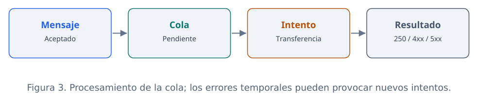
Un MTA conserva los mensajes pendientes junto con información del sobre, destinatarios pendientes, número de intentos y diagnóstico del último fallo. El mensaje puede pasar por varias colas durante su recorrido. Si recibe una respuesta temporal o no consigue conectar, programa un nuevo intento sin mantener indefinidamente abierta la conexión original.
| Situación | Decisión típica |
|---|---|
| 250 al finalizar DATA | El siguiente servidor ha aceptado la responsabilidad. |
| 4xx o fallo temporal de conexión | Mantener destinatarios pendientes y reintentar. |
| 5xx definitivo | Marcar destinatario como fallido y gestionar la notificación. |
| Expiración del tiempo máximo de cola | Abandonar la entrega pendiente y notificar cuando proceda. |
Los intervalos de reintento y el tiempo máximo dependen de la política del servidor. No hay un calendario universal para todos los sistemas. Cuando existen varios MX elegibles, el MTA puede probar destinos alternativos según las reglas de encaminamiento. Si se pierde la conexión justo después de DATA y antes de recibir el 250, el emisor puede desconocer si el receptor aceptó el mensaje; un reintento podría ocasionar duplicados.
Cola de entrega
A las 10:00 el MTA emisor obtiene 451. A las 10:20 vuelve a intentar la entrega y recibe otro error temporal. A las 11:00 obtiene 250 tras DATA y retira el destinatario de la cola pendiente. Los horarios son ficticios y no representan valores predeterminados del protocolo.
Notificaciones de error de entrega (Bounce Messages)
Un rechazo durante una sesión permite comunicar inmediatamente el error al agente emisor. Si el fallo definitivo se descubre después de haber aceptado un mensaje, el agente responsable debe gestionar una notificación de no entrega cuando corresponda. Se conoce como bounce y suele adoptar el formato DSN (Delivery Status Notification).
Las notificaciones se dirigen al remitente del sobre del mensaje original, no necesariamente a la dirección de la cabecera From. Para evitar bucles, una notificación de error se envía normalmente con remitente de sobre vacío (MAIL FROM:<>), y no debe generarse otra notificación de error en respuesta a un mensaje con dicho remitente vacío.
Fragmento de notificación DSN
Reporting-MTA: dns; mail.empresa.example
Final-Recipient: rfc822; inexistente@centro.example
Action: failed
Status: 5.1.1
Remote-MTA: dns; mail.centro.example
Diagnostic-Code: smtp; 550 5.1.1 User unknown
El fragmento representa campos de la parte de estado de entrega, no el mensaje MIME completo. El diagnóstico permite localizar el destinatario afectado y el motivo comunicado por el servidor remoto.
Una DSN puede informar también de retrasos o entregas exitosas cuando se admite y solicita esa función. No debe confundirse con una confirmación de lectura (MDN), que depende del cliente y de la política del destinatario. Las notificaciones dirigidas a remitentes falsificados pueden generar correo indeseado de rebote (backscatter); por ello es preferible rechazar durante SMTP aquello que pueda detectarse antes de aceptar el mensaje.
Verificación del funcionamiento del protocolo SMTP
La verificación debe distinguir conectividad, negociación de protocolo, seguridad y entrega efectiva. Los siguientes procedimientos son independientes del software servidor; las herramientas mencionadas son clientes de diagnóstico disponibles en distintas plataformas.
| Prueba | Resultado esperado | Qué demuestra |
|---|---|---|
| Resolver MX y A/AAAA | Destino y dirección coherentes | Localización del servidor. |
| Conectar al puerto SMTP | TCP establecido | Accesibilidad del servicio. |
| Leer el saludo | 220 | Disponibilidad del protocolo. |
| Enviar EHLO | 250 y capacidades | Diálogo SMTP operativo. |
| Negociar TLS | Certificado y canal válidos | Protección del salto comprobado. |
| Autenticar usuario autorizado | 235 | Identificación aceptada. |
| Enviar mensaje de prueba | 250 al final de DATA | Aceptación por ese servidor. |
| Consultar buzón receptor | Mensaje recibido | Entrega efectiva en el escenario probado. |
| Probar retransmisión no autorizada | Rechazo conforme a la política | Control de relay. |
Herramientas de diagnóstico
En una red de prácticas aislada puede observarse una sesión sin cifrar con un cliente TCP como telnet o nc. No se deben introducir contraseñas reales en una conexión sin protección. Para observar SMTP protegido se puede utilizar OpenSSL como cliente TLS; los nombres deben resolverse en el laboratorio y el certificado debe estar firmado por una autoridad de confianza para la herramienta.
Comprobación de STARTTLS y TLS implícito
openssl s_client -starttls smtp -connect mail.empresa.example:587 -servername mail.empresa.example -verify_hostname mail.empresa.example -verify_return_error -crlf
openssl s_client -connect mail.empresa.example:465 -servername mail.empresa.example -verify_hostname mail.empresa.example -verify_return_error -crlf
Después de completar TLS se puede introducir EHLO y QUIT para examinar las capacidades. En la variante STARTTLS, la herramienta realiza la negociación inicial. Un fallo de validación debe investigarse; no se debe desactivar la validación para enviar credenciales. Los nombres ficticios requieren una configuración DNS y de confianza local. Los comandos son ejemplos, no resultados de pruebas ejecutadas.
Interpretación de incidencias
| Observación | Posible explicación |
|---|---|
| No se establece TCP | Puerto filtrado, ruta incorrecta o servicio no disponible. |
| TCP se establece pero no aparece 220 | Servicio incorrecto, demora o discrepancia de modalidad TLS. |
| EHLO devuelve error | Sintaxis, política o incompatibilidad. |
| STARTTLS no se anuncia | Extensión no disponible o servicio equivocado. |
| TLS falla | Certificado, nombre, confianza o versiones incompatibles. |
| 535 tras AUTH | Credenciales o mecanismo no aceptados. |
| 550 tras RCPT TO | Destinatario desconocido o política de retransmisión. |
| 250 tras DATA pero no hay mensaje visible | Cola posterior, filtrado, entrega local o carpeta de spam. |
Para completar el diagnóstico se comparan los registros de ambos servidores, los identificadores de cola y las cabeceras Received del mensaje recibido. No es suficiente comprobar únicamente que el puerto esté abierto.
Referencias técnicas
- RFC 5321: Simple Mail Transfer Protocol.
- RFC 5322: Internet Message Format.
- RFC 6409: Message Submission for Mail.
- RFC 3207: SMTP Service Extension for Secure SMTP over TLS.
- RFC 4954: SMTP Service Extension for Authentication.
- RFC 8314: TLS for Email Submission and Access.
- RFC 3461 y RFC 3464: notificaciones de estado de entrega.
- Registro de extensiones SMTP de IANA.
Protocolos de acceso al correo electrónico: POP3 e IMAP
Introducción a los protocolos de recogida y acceso al correo
Una vez que el agente de entrega (MDA) deposita un mensaje en el buzón del destinatario, el mensaje queda disponible para su consulta. El agente de acceso (MAA) proporciona una interfaz de comunicación entre el buzón y el cliente de correo (MUA). POP3 e IMAP son dos protocolos de aplicación diseñados para esta finalidad. Ambos utilizan habitualmente TCP y permiten acceder a mensajes sin que el usuario tenga acceso directo al sistema de archivos del servidor.
El escenario de referencia continúa siendo el de los capítulos anteriores: Ana (ana@empresa.example) envía un mensaje a Pablo (pablo@centro.example). Pablo accede a su buzón mediante mail.centro.example. Los dominios son ficticios y están reservados para ejemplos.
POP3 se orienta principalmente a recuperar mensajes de un buzón. IMAP permite gestionar y sincronizar el correo que permanece almacenado en el servidor. La elección afecta a la ubicación de los mensajes, al consumo de almacenamiento, a la experiencia con varios dispositivos y a los procedimientos de recuperación.
El destinatario no está conectado
Ana envía un mensaje a Pablo a las 09:00. El servidor receptor lo acepta mediante SMTP y lo deposita en el buzón de Pablo. A las 12:00, Pablo abre su cliente de correo y accede al mensaje mediante IMAP o POP3. No es necesario que ambos usuarios estén conectados simultáneamente.
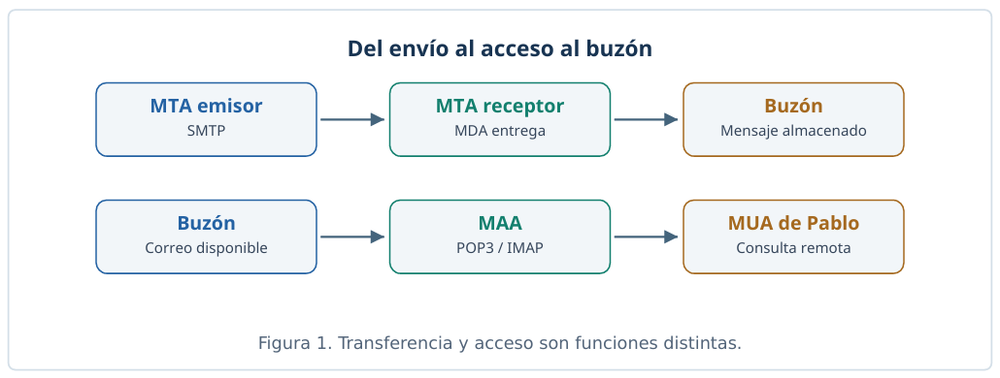
Diferencias entre el envío y la recogida de correo electrónico
SMTP permite presentar mensajes al sistema de correo y transferirlos entre servidores. POP3 e IMAP permiten acceder a mensajes ya entregados. Los tres protocolos desempeñan funciones complementarias y no son intercambiables.
| Característica | SMTP | POP3 | IMAP |
|---|---|---|---|
| Función | Envío y transferencia | Recuperación de correo | Acceso y gestión remota |
| Inicio de conexión | Emisor SMTP | Cliente receptor | Cliente receptor |
| Información gestionada | Sobre y mensaje | Mensajes del buzón | Mensajes, carpetas y estados |
| Envío a otro destinatario | Sí | No | No |
| Modelo habitual | Push | Pull | Sincronización y notificaciones |
En SMTP, el extremo emisor inicia una transferencia. En POP3 e IMAP, el cliente establece una sesión con el servidor que contiene el buzón. IMAP puede notificar cambios durante una conexión abierta, pero no sustituye a SMTP para transportar correo entre dominios.
Responder a un mensaje
Pablo consulta un mensaje de Ana mediante IMAP. Al pulsar Responder, su MUA construye otro mensaje y lo presenta a su MSA mediante SMTP. Si el cliente guarda una copia en la carpeta Enviados del servidor, puede hacerlo mediante IMAP APPEND. Guardar una copia y enviar el mensaje son operaciones distintas.
Protocolo POP3 (Post Office Protocol)
Características y funcionamiento
POP3 es la versión 3 del protocolo Post Office Protocol, descrita en el RFC 1939. Su modelo básico ofrece acceso a un conjunto de mensajes (maildrop), normalmente correspondiente a la bandeja de entrada. No proporciona una estructura estándar de carpetas remotas ni sincronización de marcas de lectura.
El cliente se autentica, obtiene información sobre los mensajes disponibles, recupera los que necesita y puede solicitar su eliminación. Es posible conservar copias en el servidor: la descarga no implica necesariamente el borrado. La política depende del cliente y del servidor.
Los mensajes se identifican por números durante la sesión. Estos números pueden cambiar en otra conexión. La extensión UIDL proporciona identificadores persistentes dentro del buzón para que un cliente pueda reconocer mensajes descargados anteriormente. No debe confundirse UIDL con la cabecera Message-ID.
Puertos de comunicación
| Puerto TCP | Modalidad | Observación |
|---|---|---|
| 110 | POP3 | Puede negociar TLS mediante STLS si está disponible. |
| 995 | POP3 con TLS implícito (POP3S) | TLS se establece antes del diálogo POP3. |
El puerto 110 no garantiza cifrado; en una configuración segura se exige STLS antes de transmitir credenciales. Para nuevos despliegues se prefiere TLS implícito según las recomendaciones del RFC 8314.
Estados de una sesión POP3
El protocolo define tres estados principales:
| Estado | Descripción | Operaciones representativas |
|---|---|---|
| AUTHORIZATION | Conexión iniciada; usuario todavía no autenticado. | USER, PASS, AUTH, STLS, QUIT |
| TRANSACTION | Usuario autenticado; acceso al maildrop. | STAT, LIST, RETR, DELE, RSET, NOOP |
| UPDATE | Cierre normal desde TRANSACTION mediante QUIT. | Aplicación de eliminaciones pendientes y liberación de recursos. |
El servidor puede bloquear el maildrop durante la transacción para evitar modificaciones incompatibles. Si la sesión termina inesperadamente sin entrar en UPDATE, no debe aplicar las eliminaciones solicitadas mediante DELE. Un error durante UPDATE puede impedir que se completen todas las eliminaciones.
Comandos y respuestas del servidor
Los comandos y respuestas se transmiten como líneas terminadas en CRLF. Una respuesta positiva comienza por +OK y una negativa por -ERR. No existen familias de códigos numéricos equivalentes a las de SMTP. Algunas respuestas contienen varias líneas y terminan con una línea que contiene exclusivamente un punto. Las líneas de datos que empiezan por un punto se protegen mediante dot stuffing.
| Comando | Argumento | Función |
|---|---|---|
| USER | nombre | Identifica al usuario. |
| PASS | contraseña | Presenta la contraseña. |
| STAT | ninguno | Número de mensajes y tamaño total en octetos. |
| LIST | número opcional | Tamaño de uno o varios mensajes. |
| RETR | número | Recupera el mensaje completo. |
| DELE | número | Marca un mensaje para eliminación. |
| RSET | ninguno | Anula las marcas de eliminación de la sesión. |
| NOOP | ninguno | Comprueba que la sesión sigue operativa. |
| QUIT | ninguno | Finaliza la sesión; confirma el borrado si procede. |
| TOP | número y líneas | Recupera cabeceras y líneas iniciales del cuerpo (opcional). |
| UIDL | número opcional | Consulta identificadores únicos (opcional). |
| CAPA | ninguno | Consulta capacidades anunciadas (extensión). |
| STLS | ninguno | Negocia TLS antes de autenticar (extensión). |
| AUTH | mecanismo | Autenticación SASL (extensión). |
Interpretación de STAT y LIST
C: STAT
S: +OK 2 1500
C: LIST
S: +OK 2 messages
S: 1 500
S: 2 1000
S: .
El buzón contiene dos mensajes, de 500 y 1000 octetos respectivamente. LIST no recupera sus cuerpos. Los tamaños del ejemplo son ilustrativos.
Descarga y eliminación de mensajes
RETR solicita el contenido completo de un mensaje. El cliente puede almacenarlo en su propio dispositivo. DELE solo establece una marca temporal de eliminación; RSET permite deshacerla antes de cerrar la sesión. QUIT desde TRANSACTION inicia UPDATE.
| Política del cliente | Comportamiento habitual | Consecuencia |
|---|---|---|
| Descargar y eliminar | RETR, DELE y QUIT | El servidor deja de conservar la copia recuperada tras la eliminación efectiva. |
| Descargar y conservar | RETR sin DELE | Otros clientes pueden recuperar el mismo mensaje. |
| Eliminar tras un plazo | El cliente aplica su política posteriormente | Requiere identificar correctamente los mensajes pendientes. |
Dos equipos con POP3
Pablo descarga el mensaje en su ordenador y solicita eliminarlo del servidor. Si la actualización se completa, su teléfono ya no podrá recuperarlo mediante POP3. Si conserva la copia en el servidor, ambos dispositivos podrán descargarla, pero sus marcas de lectura y carpetas locales no se sincronizarán mediante POP3.
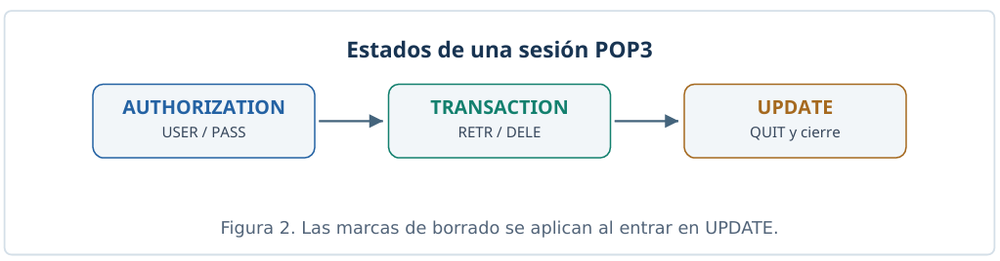
Protocolo IMAP (Internet Message Access Protocol)
Características y funcionamiento
IMAP permite consultar y gestionar mensajes almacenados en el servidor. La versión IMAP4rev1 se describe en el RFC 3501 y la revisión IMAP4rev2 en el RFC 9051. Los clientes pueden anunciar o consultar capacidades y adaptar su comportamiento a la versión y extensiones soportadas.
El servidor conserva los buzones y sus estados. El cliente puede recuperar solo cabeceras, partes MIME o mensajes completos, buscar mensajes en el servidor y crear carpetas. Los clientes pueden mantener una caché local para trabajar sin conexión y sincronizar posteriormente los cambios. IMAP no es, por sí solo, un sistema de copia de seguridad.
Puertos de comunicación
| Puerto TCP | Modalidad | Observación |
|---|---|---|
| 143 | IMAP | Puede negociar TLS mediante STARTTLS. |
| 993 | IMAP con TLS implícito (IMAPS) | TLS precede a los comandos IMAP. |
Estados de una sesión IMAP
| Estado | Descripción | Operaciones representativas |
|---|---|---|
| Not Authenticated | Conectado sin autenticar | CAPABILITY, STARTTLS, LOGIN, AUTHENTICATE |
| Authenticated | Usuario identificado, sin buzón seleccionado | LIST, CREATE, SELECT, EXAMINE, APPEND |
| Selected | Buzón seleccionado | FETCH, SEARCH, STORE, COPY, EXPUNGE |
| Logout | Finalización de la conexión | LOGOUT, respuesta BYE |
SELECT abre un buzón normalmente en lectura y escritura; EXAMINE lo abre en solo lectura. Al cerrar o deseleccionar el buzón se vuelve al estado autenticado. CLOSE puede eliminar definitivamente mensajes marcados como borrados en un buzón abierto en escritura; UNSELECT, cuando está disponible, permite deseleccionar sin esa eliminación.
Comandos y respuestas del servidor
Los comandos del cliente llevan una etiqueta (tag), por ejemplo A001. El servidor devuelve una respuesta final con esa misma etiqueta. Las respuestas sin etiqueta comienzan por * y pueden aportar datos o notificar cambios; las solicitudes de continuación empiezan por +.
| Respuesta | Significado |
|---|---|
| OK | Operación completada correctamente o información de estado. |
| NO | Operación válida que no pudo realizarse. |
| BAD | Error de sintaxis, comando desconocido o no válido en el estado actual. |
| PREAUTH | Saludo de una sesión ya autenticada. |
| BYE | El servidor anuncia el cierre de la conexión. |
| Comando | Función |
|---|---|
| CAPABILITY | Consultar capacidades del servidor. |
| LOGIN / AUTHENTICATE | Autenticar al usuario. |
| LIST | Enumerar buzones accesibles. |
| SELECT / EXAMINE | Seleccionar un buzón en escritura o solo lectura. |
| STATUS | Consultar datos de un buzón sin seleccionarlo. |
| CREATE / DELETE / RENAME | Crear, eliminar o renombrar buzones. |
| FETCH | Recuperar datos de mensajes. |
| SEARCH | Buscar mensajes según condiciones. |
| STORE | Modificar marcas de mensajes. |
| COPY | Copiar mensajes a otro buzón. |
| MOVE | Mover mensajes si se soporta (extensión en IMAP4rev1). |
| APPEND | Añadir un mensaje a un buzón. |
| EXPUNGE | Eliminar definitivamente mensajes marcados como borrados. |
| UID | Ejecutar determinadas operaciones usando UID. |
| IDLE | Recibir notificaciones de cambios durante una sesión abierta. |
| NOOP / LOGOUT | Mantener o finalizar la sesión. |
Respuestas etiquetadas y no etiquetadas
C: A001 SELECT INBOX
S: * 3 EXISTS
S: * FLAGS (\Seen \Answered \Flagged \Deleted \Draft)
S: * OK [UIDVALIDITY 17001] UIDs valid
S: * OK [UIDNEXT 104] Predicted next UID
S: A001 OK [READ-WRITE] SELECT completed
EXISTS indica que el buzón contiene tres mensajes. La respuesta final A001 confirma la operación. La información intermedia puede variar según el servidor y la revisión del protocolo; se muestran las líneas relevantes.
Gestión de carpetas y mensajes
INBOX es el nombre especial de la bandeja de entrada. Las carpetas Enviados, Borradores, Papelera y otras son buzones adicionales cuyos nombres y jerarquías pueden variar. Las extensiones de uso especial permiten identificar su función sin depender exclusivamente del nombre visible.
IMAP distingue entre el número de secuencia de un mensaje, que puede cambiar al eliminar otros mensajes, y su UID, estable dentro de un buzón mientras se mantenga UIDVALIDITY. Los clientes utilizan la combinación de buzón, UIDVALIDITY y UID para reconocer mensajes durante la sincronización. Un UID no es global a toda la cuenta.
| Marca IMAP | Significado |
|---|---|
\Seen |
Mensaje leído o visto. |
\Answered |
Mensaje respondido. |
\Flagged |
Mensaje destacado. |
\Deleted |
Marcado para eliminación. |
\Draft |
Borrador. |
El cliente puede recuperar información mediante FETCH sin descargar todo el mensaje. BODY.PEEK evita establecer implícitamente la marca Seen al recuperar contenido. Marcar un mensaje como Deleted no equivale a eliminarlo definitivamente: EXPUNGE realiza esa eliminación en el buzón seleccionado. Muchos clientes implementan la papelera moviendo el mensaje a otro buzón.
Consulta y modificación de una marca
C: A002 UID FETCH 103 (FLAGS)
S: * 3 FETCH (UID 103 FLAGS ())
S: A002 OK FETCH completed
C: A003 UID STORE 103 +FLAGS (\Seen)
S: * 3 FETCH (UID 103 FLAGS (\Seen))
S: A003 OK STORE completed
El mensaje con UID 103 pasa a estar marcado como leído. El número de secuencia 3 no debe utilizarse como identificador persistente.
Sincronización entre dispositivos
Cuando Pablo utiliza IMAP en su ordenador y teléfono, ambos clientes consultan el mismo almacenamiento remoto. Si el ordenador marca un mensaje como leído, el teléfono puede conocer el cambio al sincronizarse. La propagación no tiene por qué ser instantánea: depende de la conectividad, del cliente y de las capacidades del servidor.
IDLE permite recibir respuestas no solicitadas mientras se mantiene una conexión abierta. El cliente finaliza el modo IDLE mediante DONE antes de iniciar otro comando. No es un mecanismo de envío SMTP ni garantiza por sí mismo una notificación del sistema operativo móvil.
Notificación de un mensaje nuevo
C: A010 IDLE
S: + idling
S: * 4 EXISTS
C: DONE
S: A010 OK IDLE terminated
El servidor informa de que hay cuatro mensajes en el buzón seleccionado. El cliente puede consultar a continuación los nuevos mensajes. El ejemplo presupone que el servidor soporta IDLE.
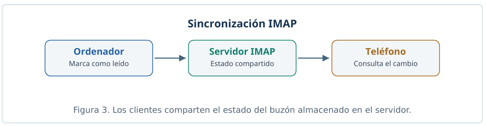
Comparativa entre POP3 e IMAP
| Aspecto | POP3 | IMAP |
|---|---|---|
| Modelo | Recuperación de mensajes | Gestión del buzón remoto |
| Carpetas remotas | No en el protocolo básico | Sí |
| Marcas de lectura | Locales al cliente | Sincronizables en el servidor |
| Descarga parcial | TOP opcional, limitado | FETCH permite seleccionar partes |
| Búsqueda remota | No en el protocolo básico | SEARCH |
| Varios dispositivos | Copias independientes | Estado compartido |
| Trabajo sin conexión | Con mensajes descargados | Con caché local, según cliente |
| Espacio en servidor | Puede reducirse eliminando copias | Requiere gestionar cuotas y retención |
| Eliminación | DELE y actualización al cerrar | Marca Deleted y EXPUNGE, o movimiento |
IMAP suele ser la opción apropiada cuando se utilizan varios dispositivos o webmail. POP3 puede ser útil para aplicaciones de recuperación sencilla o para flujos que mantienen un archivo local. Ninguno garantiza automáticamente una copia de seguridad: una eliminación accidental, un fallo del almacenamiento o una política de retención pueden provocar pérdidas.
Autenticación de usuarios
La autenticación verifica la identidad del usuario. La autorización determina qué buzones puede consultar y modificar. Las credenciales de acceso al correo entrante pueden coincidir con las del servicio SMTP de envío, pero se trata de sesiones y permisos distintos.
POP3 admite USER/PASS y puede admitir AUTH mediante SASL. IMAP admite LOGIN y AUTHENTICATE, con los mecanismos SASL que anuncie el servidor. No todos los mecanismos están disponibles en todas las implementaciones. PLAIN transmite credenciales codificadas, no cifradas por sí mismas; debe utilizarse sobre un canal TLS debidamente validado. Los mecanismos OAuth permiten utilizar tokens en sistemas que los soportan. La autenticación multifactor puede intervenir en la obtención del token, no necesariamente en cada comando POP3 o IMAP.
| Elemento | Función |
|---|---|
| Identificador | Seleccionar la identidad de la cuenta. |
| Contraseña o token | Aportar una prueba de autenticación. |
| SASL | Marco para negociar mecanismos de autenticación. |
| TLS | Proteger la comunicación y autenticar al servidor mediante certificados. |
| ACL de buzones | Determinar permisos sobre recursos compartidos, si se soportan. |
Acceso denegado
Una respuesta POP3 -ERR authentication failed o IMAP A002 NO authentication failed indica que el acceso no se ha autorizado. Las causas pueden incluir credenciales incorrectas, cuenta deshabilitada o una política que impide el mecanismo elegido. No implica necesariamente que el buzón no exista.
Cifrado de las comunicaciones POP3 e IMAP
TLS protege la confidencialidad e integridad del tráfico entre cliente y servidor. El cliente debe verificar la cadena de confianza del certificado, su vigencia y la correspondencia del nombre del servidor con la identidad esperada. El cifrado de transporte no implica que el mensaje esté cifrado en el almacenamiento ni de extremo a extremo.
| Protocolo | Negociación explícita | TLS implícito |
|---|---|---|
| POP3 | TCP 110, comando STLS | TCP 995 |
| IMAP | TCP 143, comando STARTTLS | TCP 993 |
En TLS implícito, el saludo del protocolo aparece después de completar la negociación TLS. En la modalidad explícita se recibe primero el saludo, se consulta la disponibilidad de la extensión, se solicita el cambio a TLS y, después de negociar y validar el canal, se consultan de nuevo las capacidades y se autentica al usuario. Si TLS es obligatorio y la negociación falla, el cliente debe abortar, no continuar en claro.
Inicio de sesión protegido
POP3 (110) IMAP (143)
S: +OK POP3 ready S: * OK IMAP ready
C: STLS C: A001 STARTTLS
S: +OK Begin TLS S: A001 OK Begin TLS
[Negociación TLS] [Negociación TLS]
[Autenticación protegida] [Autenticación protegida]
Se presupone que las capacidades se han comprobado previamente. STLS y STARTTLS no son intercambiables entre estos protocolos.
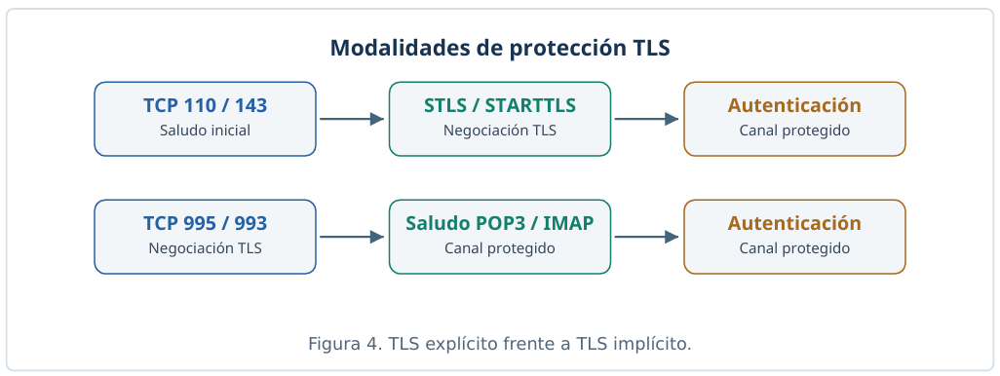
Sesiones de ejemplo mediante comandos de protocolo
Las siguientes transcripciones son ilustrativas. C identifica al cliente y S al servidor; estos prefijos no forman parte de los datos transmitidos. Se presupone una conexión TLS implícita ya establecida y validada. Las credenciales son ficticias. Los tamaños y datos se han simplificado para facilitar la lectura.
Sesión POP3: recuperación y eliminación
Recuperación de un mensaje de Ana
S: +OK POP3 server ready
C: USER pablo@centro.example
S: +OK
C: PASS clave-ficticia
S: +OK maildrop locked and ready
C: STAT
S: +OK 1 120
C: LIST
S: +OK 1 message
S: 1 120
S: .
C: RETR 1
S: +OK 120 octets
S: From: ana@empresa.example
S: To: pablo@centro.example
S: Subject: Reunion
S: Date: Wed, 25 Nov 2026 09:00:00 +0100
S:
S: Hola Pablo.
S: .
C: DELE 1
S: +OK message marked
C: QUIT
S: +OK goodbye
Tras la autenticación, Pablo recupera el mensaje, lo marca para borrado y cierra normalmente la sesión. Si desea conservarlo, omite DELE o utiliza RSET antes de QUIT. Los valores de tamaño son orientativos.
Sesión IMAP: consulta y conservación en el servidor
Consulta del buzón de Pablo
S: * OK IMAP server ready
C: A001 CAPABILITY
S: * CAPABILITY IMAP4rev1 IDLE
S: A001 OK CAPABILITY completed
C: A002 LOGIN pablo@centro.example clave-ficticia
S: A002 OK LOGIN completed
C: A003 LIST "" "*"
S: * LIST () "/" INBOX
S: * LIST () "/" Enviados
S: A003 OK LIST completed
C: A004 SELECT INBOX
S: * 1 EXISTS
S: * FLAGS (\Seen \Answered \Flagged \Deleted \Draft)
S: * OK [UIDVALIDITY 17001] UIDs valid
S: * OK [UIDNEXT 104] Predicted next UID
S: A004 OK [READ-WRITE] SELECT completed
C: A005 UID SEARCH ALL
S: * SEARCH 103
S: A005 OK SEARCH completed
C: A006 UID FETCH 103 (BODY.PEEK[TEXT])
S: * 1 FETCH (UID 103 BODY[TEXT] {13}
S: Hola Pablo.
S: )
S: A006 OK FETCH completed
C: A007 UID STORE 103 +FLAGS (\Seen)
S: * 1 FETCH (UID 103 FLAGS (\Seen))
S: A007 OK STORE completed
C: A008 LOGOUT
S: * BYE Logging out
S: A008 OK LOGOUT completed
La respuesta literal {13} anuncia 13 octetos (Hola Pablo. más CRLF). El mensaje queda almacenado en INBOX, con la marca Seen. La transcripción omite información adicional que un servidor real puede enviar.
Verificación conceptual de las sesiones
| Prueba | Resultado esperado |
|---|---|
| Conexión al puerto seguro | Negociación TLS y saludo válido del protocolo. |
| Autenticación correcta | Acceso autorizado al buzón. |
| Autenticación incorrecta | Respuesta negativa sin acceso al contenido. |
| Recuperación POP3 | Contenido del mensaje y cierre correcto de la respuesta. |
| Consulta IMAP | Datos del buzón y respuesta final etiquetada. |
| Sincronización IMAP | Cambios visibles en otra sesión después de actualizar. |
| Eliminación POP3 | Ausencia del mensaje tras UPDATE correcto y nueva sesión. |
Para estudiar las sesiones pueden utilizarse herramientas capaces de establecer conexiones TLS y enviar comandos textuales. Las sesiones en claro deben limitarse a laboratorios aislados con cuentas ficticias. La instalación de servidores y la ejecución de pruebas específicas de cada plataforma se reservan para los documentos posteriores.
Acceso al correo electrónico mediante webmail
Webmail es una aplicación web que proporciona las funciones de un cliente de correo desde un navegador. El navegador se comunica normalmente mediante HTTPS con el servidor web; la aplicación webmail accede al almacenamiento de mensajes mediante IMAP, una API u otro mecanismo interno y presenta los mensajes salientes al sistema de correo, normalmente mediante SMTP submission o una interfaz equivalente.
El navegador no necesita implementar POP3 ni IMAP. El servicio webmail actúa como intermediario entre la interfaz web y la infraestructura de correo. HTTPS protege el tramo navegador-webmail; los demás tramos deben contar con sus propias medidas de seguridad.
| Cliente de escritorio | Webmail |
|---|---|
| Aplicación instalada en el dispositivo. | Interfaz accesible desde el navegador. |
| Conexiones directas a servicios de correo o API. | Conexión HTTPS a una aplicación web. |
| Puede mantener copias locales y trabajar sin conexión. | Depende de las funciones de la aplicación web. |
Acceso desde un ordenador compartido
Pablo consulta su correo desde el navegador de un equipo del centro. La aplicación webmail muestra su buzón sin configurar un cliente de escritorio. Debe cerrar la sesión al finalizar y evitar guardar credenciales en el equipo compartido.
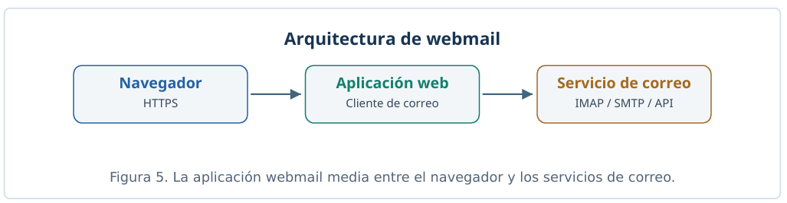
Escenarios de utilización de los diferentes protocolos
| Escenario | Elección habitual | Justificación |
|---|---|---|
| Usuario con ordenador y teléfono | IMAP | Sincronización del estado y carpetas. |
| Archivo local de correo en un único equipo | POP3 o IMAP con exportación | Recuperación o copia local según necesidades. |
| Centro educativo con puestos compartidos | Webmail o IMAP | Acceso centralizado desde distintos equipos. |
| Conectividad intermitente | Cliente con caché local | Consulta sin conexión de mensajes previamente recuperados. |
| Aplicación que recoge mensajes de un buzón | POP3 o IMAP | Depende de si necesita carpetas, búsquedas y estados. |
| Envío y respuesta de mensajes | SMTP submission | POP3 e IMAP no transportan mensajes a destinatarios. |
Para seleccionar el protocolo se deben considerar el número de dispositivos, la necesidad de sincronización, la capacidad de almacenamiento, las políticas de retención, las copias de seguridad, la seguridad y las funcionalidades que ofrecen los clientes y el servidor.
Referencias técnicas
- RFC 1939: Post Office Protocol - Version 3.
- RFC 2449: POP3 Extension Mechanism.
- RFC 2595: Using TLS with IMAP, POP3 and ACAP.
- RFC 5034: The Post Office Protocol (POP3) Simple Authentication and Security Layer (SASL) Authentication Mechanism.
- RFC 3501: Internet Message Access Protocol - Version 4rev1.
- RFC 9051: Internet Message Access Protocol (IMAP) - Version 4rev2.
- RFC 2177: IMAP4 IDLE command.
- RFC 8314: Cleartext Considered Obsolete: Use of TLS for Email Submission and Access.
El servicio DNS y el correo electrónico
Relación entre el servicio DNS y el correo electrónico
El DNS (Domain Name System) es un sistema distribuido y jerárquico que permite consultar información asociada a nombres de dominio. En el correo electrónico desempeña una función fundamental: localizar los servidores encargados de aceptar mensajes para un dominio y proporcionar información que ayuda a verificar la identidad y la legitimidad de los sistemas emisores.
Una dirección de correo no contiene necesariamente el nombre del servidor que almacena el buzón. Cuando Ana (ana@empresa.example) envía un mensaje a Pablo (pablo@centro.example), el MTA emisor necesita averiguar qué servidor acepta correo para centro.example. Para ello consulta DNS. El destinatario puede recibir el mensaje aunque su ordenador esté apagado.
DNS no transporta mensajes ni autentica directamente a los usuarios de un buzón. SMTP realiza la transferencia; POP3 e IMAP proporcionan acceso al correo almacenado. DNS facilita la localización de los servicios y la publicación de datos de seguridad.
Resolución de nombres
Un resolvedor recursivo obtiene respuestas consultando otros servidores DNS cuando no dispone de ellas en su caché. Los servidores autoritativos publican la información correspondiente a las zonas que administran. Una respuesta puede permanecer almacenada durante el TTL (Time To Live), expresado en segundos. Por ello, una modificación no se refleja necesariamente de inmediato en todos los resolvedores.
| Componente | Función |
|---|---|
| Cliente DNS | Solicita información sobre un nombre. |
| Resolvedor recursivo | Obtiene la respuesta o utiliza su caché. |
| Servidor autoritativo | Publica los registros de una zona. |
| Caché DNS | Conserva respuestas durante su periodo de validez. |
Las consultas DNS clásicas emplean UDP o TCP en el puerto 53. DNSSEC permite verificar la autenticidad e integridad de datos DNS firmados, pero no cifra por sí mismo las consultas ni los mensajes de correo.
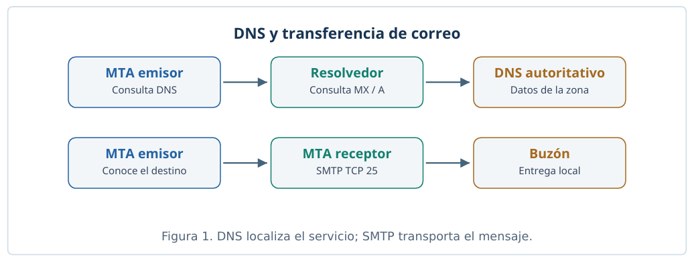
Dominios de correo electrónico
Una dirección de correo se compone de una parte local y un dominio separados por el signo @. El dominio identifica el espacio de nombres en el que debe interpretarse la parte local. El servidor receptor decide si esa dirección corresponde a una cuenta, un alias, una lista de distribución u otro destino válido.
Dominio y nombre del servidor
En pablo@centro.example, la parte local es pablo y el dominio de correo es centro.example. El servidor que acepta mensajes puede llamarse mail.centro.example o incluso pertenecer a otro dominio administrado por un proveedor externo. Pablo no necesita cambiar su dirección de correo por el hecho de cambiar de servidor.
Un mismo servidor puede gestionar múltiples dominios de correo, y un dominio puede disponer de varios servidores receptores. El dominio de correo tampoco tiene por qué coincidir con el nombre utilizado por un cliente para conectarse mediante SMTP submission, IMAP o POP3.
| Elemento | Escenario de referencia |
|---|---|
| Dominio emisor | empresa.example |
| MTA emisor | mail.empresa.example |
| Dirección emisora | ana@empresa.example |
| Dominio receptor | centro.example |
| MTA receptor principal | mail.centro.example |
| Dirección receptora | pablo@centro.example |
Los nombres bajo .example y las direcciones IPv4 de los bloques 192.0.2.0/24, 198.51.100.0/24 y 203.0.113.0/24, así como el prefijo IPv6 2001:db8::/32, se reservan para documentación. En estos apuntes representan sistemas ficticios, no servicios públicos reales.
Registros DNS de tipo A y AAAA
Los registros A relacionan nombres con direcciones IPv4; los registros AAAA relacionan nombres con direcciones IPv6. Un servidor de correo puede disponer de uno o ambos tipos de registros. Un nombre también puede tener varias direcciones del mismo tipo.
Estructura de un registro
En los ejemplos de zona se utiliza la notación habitual nombre TTL clase tipo datos. La clase IN corresponde a Internet. El punto final en un nombre indica que es absoluto, es decir, no debe completarse con el nombre de la zona.
Direcciones de los servidores
mail.empresa.example. 3600 IN A 192.0.2.10
mail.centro.example. 3600 IN A 198.51.100.20
mail.centro.example. 3600 IN AAAA 2001:db8:2::20
backup.centro.example. 3600 IN A 198.51.100.30
El servidor mail.centro.example dispone de una dirección IPv4 y una IPv6. El TTL de 3600 segundos permite conservar la respuesta durante una hora. Las direcciones representan un escenario de documentación.
Publicar una dirección AAAA no garantiza que el servicio funcione por IPv6. El servidor debe escuchar en esa dirección, disponer de rutas adecuadas y permitir el tráfico necesario en el cortafuegos. Lo mismo se aplica a IPv4.
Nombres alternativos y CNAME
Un registro CNAME establece un alias de otro nombre DNS. Puede ser útil para proporcionar nombres de acceso a clientes, como imap.centro.example, pero el nombre de destino de un MX debe resolver directamente mediante A o AAAA y no ser un alias CNAME. No se debe confundir un alias DNS con un alias de correo: el primero afecta a nombres de red y el segundo a la entrega de mensajes.
Registros DNS de tipo MX (Mail Exchange)
Los registros MX indican qué servidores aceptan correo SMTP para un dominio determinado. Cada registro contiene un valor de preferencia y un nombre de servidor. No contiene una dirección IP ni un número de puerto. La transferencia SMTP entre servidores utiliza normalmente TCP 25.
Publicación de los servidores receptores
centro.example. 3600 IN MX 10 mail.centro.example.
centro.example. 3600 IN MX 20 backup.centro.example.
mail.centro.example. 3600 IN A 198.51.100.20
backup.centro.example. 3600 IN A 198.51.100.30
El MTA emisor consulta los MX de centro.example y obtiene dos nombres de destino. Después resuelve las direcciones de esos nombres para establecer una conexión SMTP. El valor 10 tiene preferencia sobre el 20.
Ausencia de registros MX
Si un dominio existente no tiene registros MX, SMTP contempla un MX implícito con preferencia cero que apunta al propio dominio. En ese caso se intenta resolver su A o AAAA. Esta regla no se aplica si existen MX explícitos pero sus destinos son incorrectos o inaccesibles; tampoco debe confundirse la ausencia de MX con un dominio inexistente (NXDOMAIN) o un fallo temporal del DNS.
Null MX
Un dominio que declara que no acepta correo puede publicar un único registro MX con preferencia cero y destino raíz (.), según RFC 7505.
sin-correo.example. 3600 IN MX 0 .
Este registro indica expresamente que no se debe intentar entregar correo al dominio, aunque disponga de un registro A para alojar una página web. No debe coexistir con otros registros MX.
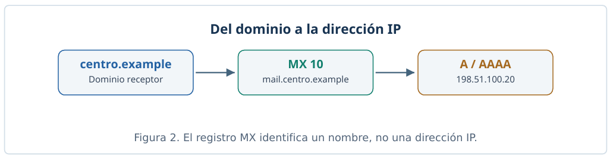
Prioridad de los servidores de correo
El valor numérico de preferencia determina el orden de selección: cuanto menor es el número, mayor es la preferencia. Los valores no representan porcentajes ni tiempos de espera. Los servidores con el mismo valor tienen igual preferencia y el emisor debe distribuir la selección entre ellos de forma aleatoria cuando no exista otro motivo para favorecer uno.
| Preferencia | Destino | Interpretación |
|---|---|---|
| 10 | mail.centro.example | Primera opción. |
| 20 | backup.centro.example | Alternativa menos preferente. |
| 30 | relay.centro.example | Alternativa posterior, si existe. |
Fallo del servidor principal
Si el MTA emisor no puede establecer conexión con mail.centro.example, puede intentar la entrega mediante backup.centro.example. Si tampoco resulta posible entregar el mensaje y el fallo es temporal, conserva el mensaje en su cola para reintentar la entrega. El MX secundario no convierte automáticamente un error permanente de destinatario en una entrega válida.
La prioridad MX no constituye por sí sola un sistema de monitorización: DNS no comprueba automáticamente que el puerto SMTP esté abierto. Tampoco garantiza un reparto exacto de carga entre servidores con igual preferencia. Para ello se necesitan mecanismos adicionales de disponibilidad y supervisión.
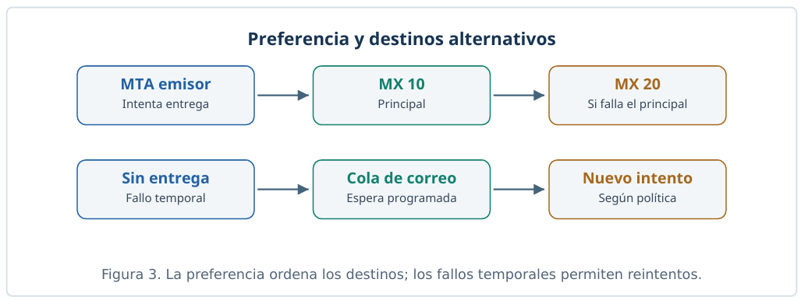
Resolución DNS durante la entrega de mensajes SMTP
Secuencia de operaciones
Cuando un MTA debe entregar directamente un mensaje a un dominio remoto, utiliza el dominio del destinatario del sobre SMTP, es decir, el que aparece en RCPT TO, no necesariamente el indicado en la cabecera To del mensaje.
- Extrae el dominio del destinatario y consulta sus registros MX.
- Ordena los destinos según su preferencia.
- Resuelve las direcciones A y AAAA del destino seleccionado.
- Establece una conexión TCP al puerto 25 del servidor receptor.
- Intercambia comandos SMTP y, si corresponde, negocia TLS mediante STARTTLS.
- Transfiere el mensaje y comprueba la respuesta final del servidor.
- Si existe un fallo temporal, utiliza destinos alternativos cuando proceda o programa un reintento; ante un fallo permanente, aplica el tratamiento de no entrega correspondiente.
Un MTA configurado para utilizar un smarthost puede entregar primero el mensaje a ese intermediario. El intermediario será quien realice las consultas MX necesarias para la entrega directa, salvo que aplique otras rutas configuradas.
Entrega de Ana a Pablo
Ana presenta un mensaje al MSA de empresa.example. El MTA emisor consulta MX centro.example, obtiene 10 mail.centro.example y 20 backup.centro.example, y resuelve mail.centro.example como 198.51.100.20. A continuación establece una sesión SMTP con esa dirección. El servidor receptor acepta el mensaje y el agente de entrega lo deposita en el buzón de Pablo. Pablo podrá consultarlo posteriormente mediante IMAP o POP3.
Respuestas DNS y consecuencias
| Resultado DNS | Significado | Consecuencia habitual |
|---|---|---|
| NOERROR con MX | Existen destinos explícitos. | Resolver sus direcciones. |
| NOERROR sin MX | No existe ese tipo de registro. | Evaluar el MX implícito. |
| NXDOMAIN | El nombre no existe. | Fallo permanente si se confirma para el dominio destinatario. |
| SERVFAIL | Fallo al procesar la consulta. | Aplazar y reintentar. |
| Tiempo de espera agotado | No se obtuvo respuesta. | Tratar como fallo temporal. |
| Null MX | El dominio no acepta correo. | No intentar entrega. |
Una respuesta positiva de DNS no garantiza la entrega: el servidor SMTP puede rechazar al destinatario, estar saturado o presentar problemas de conectividad. DNS, TCP, SMTP y la entrega local deben analizarse por separado.
Servidores de correo principales y secundarios
El servidor principal es el destino de mayor preferencia según los MX publicados. Un servidor secundario puede aceptar mensajes en nombre del dominio cuando el principal está temporalmente inaccesible, conservarlos en una cola y retransmitirlos cuando se restablezca el servicio.
Un MX secundario no necesita almacenar una copia de todos los buzones. Su función puede limitarse a la recepción temporal y retransmisión. Si se desea que los usuarios puedan seguir consultando su correo cuando falla el servidor de buzones, se requieren mecanismos adicionales de replicación, almacenamiento compartido o alta disponibilidad.
| Arquitectura | Función | Limitación |
|---|---|---|
| Un único MX | Recepción centralizada. | Dependencia de un único destino. |
| MX principal y secundario | Recepción alternativa y cola. | No garantiza acceso a los buzones. |
| Varios MX de igual preferencia | Distribución de conexiones entrantes. | No sincroniza mensajes automáticamente. |
| Pasarela externa | Filtrado y retransmisión al servidor interno. | Dependencia de la pasarela y sus políticas. |
Recepción durante una interrupción
El servidor principal queda fuera de servicio durante una hora. El secundario acepta los mensajes para centro.example, los conserva temporalmente y los reenvía al principal al recuperarse. Durante ese intervalo, el usuario podría no tener acceso a su buzón si también depende del servidor principal.
Los servidores secundarios deben aplicar restricciones de retransmisión y controles de destinatarios coherentes con los del principal. De lo contrario, pueden convertirse en una vía de entrada de correo no deseado o generar notificaciones de error hacia remitentes falsificados. Se estudiará esta problemática en los capítulos de seguridad.
Resolución inversa y registros PTR
La resolución directa permite obtener direcciones IP a partir de nombres. La resolución inversa permite consultar el nombre asociado a una dirección IP mediante registros PTR. En IPv4 se utiliza el dominio in-addr.arpa, invirtiendo el orden de los octetos. En IPv6 se utiliza ip6.arpa, invirtiendo los dígitos hexadecimales de la dirección expandida.
Resolución directa e inversa coherentes
mail.empresa.example. 3600 IN A 192.0.2.10
10.2.0.192.in-addr.arpa. 3600 IN PTR mail.empresa.example.
Una consulta directa de mail.empresa.example obtiene 192.0.2.10. La consulta inversa de esa IP obtiene mail.empresa.example. Si al resolver de nuevo ese nombre aparece la IP original, existe coherencia directa e inversa (FCrDNS, Forward-confirmed reverse DNS).
La administración del registro PTR suele corresponder al titular o proveedor del bloque de direcciones IP, no necesariamente al administrador del dominio de correo. Publicar un registro A no crea automáticamente un PTR.
Importancia en la recepción SMTP
Muchos servidores receptores consultan la resolución inversa de la IP que inicia una conexión SMTP y pueden utilizar el resultado como señal de reputación o criterio de aceptación. Una configuración coherente facilita la identificación del servidor emisor, pero no demuestra por sí sola que un mensaje sea legítimo. Un PTR incorrecto o ausente puede provocar rechazos según las políticas del receptor; no es un fallo universal del protocolo SMTP.
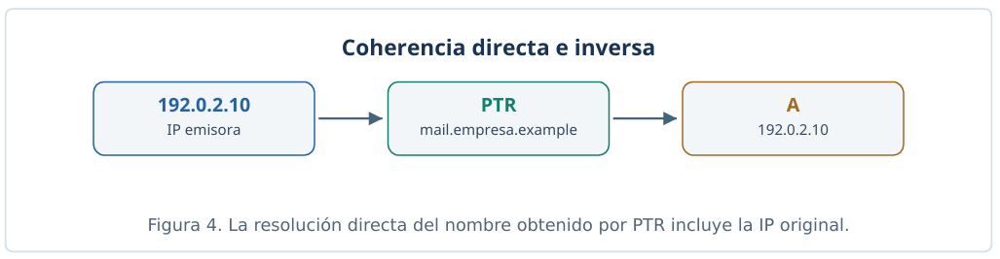
Identificación del servidor de correo y nombres FQDN
Un FQDN (Fully Qualified Domain Name) identifica un nombre completo en el espacio DNS. Por ejemplo, mail.empresa.example. incluye el nombre del equipo, el dominio y el punto final que representa la raíz DNS. En muchas aplicaciones el punto final se omite al introducir el nombre.
En una sesión ESMTP, el cliente se identifica mediante EHLO. Debe utilizar su nombre principal cuando dispone de él o una dirección literal cuando no tiene un nombre adecuado. El receptor puede contrastar esa identidad con la IP de origen y sus registros DNS, pero el texto de EHLO no constituye una autenticación criptográfica.
| Identidad | Ejemplo | Finalidad |
|---|---|---|
| Dominio de correo | empresa.example | Direcciones de usuario. |
| FQDN del servidor | mail.empresa.example | Identificación del equipo o servicio. |
| Identidad EHLO | mail.empresa.example | Identificación en la sesión SMTP. |
| PTR de la IP emisora | mail.empresa.example | Resolución inversa. |
| Nombre del servicio de acceso | imap.empresa.example | Conexión del cliente al buzón. |
Identificación durante una sesión SMTP
S: 220 mail.centro.example ESMTP
C: EHLO mail.empresa.example
S: 250 mail.centro.example
El servidor receptor anuncia su identidad y el MTA emisor presenta la suya. Estos nombres no sustituyen a los certificados TLS ni a los mecanismos de autenticación de dominios.
En conexiones TLS de clientes de correo, el nombre configurado por el usuario debe poder validarse con el certificado presentado por el servicio. En transferencias entre MTA, la validación y la obligatoriedad de TLS dependen de la política aplicada (por ejemplo, MTA-STS o DANE). Estos mecanismos se introducirán en el capítulo 8.
Introducción a los registros DNS relacionados con la seguridad del correo: SPF, DKIM y DMARC
Además de localizar servidores, DNS permite publicar políticas y claves que ayudan a combatir la suplantación de dominios. SPF, DKIM y DMARC son mecanismos complementarios y no sustituyen al cifrado TLS, al control de acceso ni al filtrado antispam.
SPF (Sender Policy Framework)
SPF permite publicar qué sistemas están autorizados a utilizar un dominio como identidad de envío SMTP. El receptor compara la IP del cliente SMTP con la política del dominio del remitente del sobre (MAIL FROM), o con HELO/EHLO en los casos previstos por el protocolo. Se publica mediante un registro TXT.
empresa.example. 3600 IN TXT "v=spf1 ip4:192.0.2.10 -all"
En este ejemplo se autoriza la IP 192.0.2.10 y se declara un fallo SPF para otros orígenes no autorizados. El receptor decide cómo tratar ese resultado. SPF no verifica el contenido del mensaje ni autentica directamente la dirección visible de la cabecera From.
DKIM (DomainKeys Identified Mail)
DKIM permite que un sistema firme criptográficamente determinadas cabeceras y el cuerpo del mensaje. El mensaje incorpora una cabecera DKIM-Signature con el dominio firmante (d=) y el selector (s=). El receptor consulta una clave pública en DNS y verifica la firma.
Selector: correo2026
Dominio firmante: empresa.example
Consulta TXT: correo2026._domainkey.empresa.example.
La clave privada permanece en el sistema firmante. La clave pública se publica en DNS. No se proporciona una clave ficticia en este ejemplo para evitar confundirla con un registro utilizable. Una firma válida no cifra el contenido ni implica que el mensaje sea deseado.
DMARC (Domain-based Message Authentication, Reporting and Conformance)
DMARC relaciona el dominio visible de la cabecera From con las identidades verificadas por SPF o DKIM. Para superar DMARC basta que al menos uno de esos mecanismos supere su comprobación y esté alineado con el dominio visible según la política aplicable. El dominio puede publicar una política y solicitar informes.
_dmarc.empresa.example. 3600 IN TXT "v=DMARC1; p=none"
La política none solicita que no se aplique una acción de disposición específica por DMARC. Las políticas quarantine y reject expresan tratamientos más restrictivos; el receptor conserva su capacidad de decisión local.
| Mecanismo | Información consultada en DNS | Finalidad |
|---|---|---|
| SPF | TXT del dominio de identidad SMTP. | Autorizar orígenes de envío. |
| DKIM | TXT del selector bajo _domainkey. | Verificar una firma. |
| DMARC | TXT bajo _dmarc. | Comprobar alineación y publicar políticas. |
El funcionamiento detallado, los resultados de validación y los problemas asociados al reenvío se desarrollarán posteriormente.
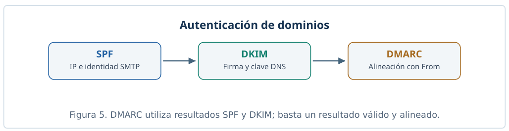
Configuración DNS en entornos locales y públicos
Entorno local de laboratorio
En un laboratorio aislado es posible utilizar un DNS interno que publique zonas ficticias como empresa.example y centro.example. Los equipos deben utilizar un resolvedor que conozca dichas zonas. Las direcciones de documentación mostradas en este capítulo se pueden sustituir por direcciones privadas adecuadas al laboratorio; no deben utilizarse para anunciar servicios en Internet.
Zona conceptual de un laboratorio
centro.example. 3600 IN MX 10 mail.centro.example.
mail.centro.example. 3600 IN A 192.168.20.10
imap.centro.example. 3600 IN A 192.168.20.10
El MTA emisor y los clientes consultan un DNS interno que conoce la zona. El registro MX sirve para localizar el receptor SMTP y el nombre imap.centro.example sirve para configurar el cliente de correo. El fragmento no es una zona completa: se omiten SOA y NS.
Entorno público
Para recibir correo desde Internet, el dominio debe disponer de una delegación DNS funcional y de registros públicos correctos. Los destinos MX deben poder resolverse y ser accesibles por SMTP desde las redes que deban entregarles mensajes. Si se utiliza NAT, un cortafuegos o una pasarela, la publicación DNS debe corresponder a los puntos de entrada realmente accesibles.
Para enviar correo directamente a Internet también es importante la disponibilidad de TCP 25 saliente, la reputación de las IP y la coherencia de la identidad del servidor. Un proveedor puede restringir ese puerto. La publicación de MX no elimina tales restricciones ni es un requisito para que un sistema pueda iniciar una sesión SMTP saliente.
DNS dividido (Split DNS)
Una organización puede ofrecer respuestas distintas para un mismo nombre dependiendo de si la consulta procede de la red interna o de Internet. Por ejemplo, mail.centro.example puede resolver a una IP privada desde la LAN y a una dirección pública desde Internet. Debe mantenerse la coherencia de los nombres de acceso, certificados y rutas. Una zona interna no debe ocultar accidentalmente registros públicos necesarios para el correo.
| Aspecto | Laboratorio | Servicio público |
|---|---|---|
| Dominio | Ficticio bajo .example. | Dominio delegado real. |
| DNS | Autoritativo interno. | Autoritativo accesible públicamente. |
| Direcciones | Privadas o simuladas. | Puntos de entrada alcanzables. |
| PTR | Zona inversa interna. | Gestionado por el titular de la IP. |
| Seguridad | Políticas de prueba. | Políticas reales, TLS y controles de abuso. |
Verificación de los registros DNS mediante herramientas de diagnóstico
Las herramientas de consulta DNS permiten verificar tipos de registro, respuestas, TTL y errores sin depender de una aplicación servidora de correo. Los comandos siguientes son ejemplos de herramientas disponibles en distintos entornos; no se describe su instalación ni configuración. Las salidas corresponden a un DNS de laboratorio hipotético, no a consultas ejecutadas en Internet.
Consulta de MX, A y AAAA
dig centro.example MX +short
10 mail.centro.example.
20 backup.centro.example.
dig mail.centro.example A +short
198.51.100.20
dig mail.centro.example AAAA +short
2001:db8:2::20
La opción +short facilita la lectura, pero oculta información diagnóstica. Si una consulta no devuelve datos, conviene repetirla sin esa opción para revisar el estado de la respuesta, las secciones de respuesta y autoridad, el servidor consultado y el TTL.
Consulta inversa y registros de seguridad
dig -x 192.0.2.10 +short
mail.empresa.example.
dig empresa.example TXT +short
"v=spf1 ip4:192.0.2.10 -all"
dig _dmarc.empresa.example TXT +short
"v=DMARC1; p=none"
Para localizar una clave DKIM se consulta el TXT del nombre formado a partir del selector y el dominio firmante, por ejemplo dig correo2026._domainkey.empresa.example TXT. No se debe asumir que todos los registros TXT de un dominio corresponden a SPF.
Consultas con nslookup
nslookup -type=MX centro.example
nslookup -type=A mail.centro.example
nslookup -type=AAAA mail.centro.example
nslookup 192.0.2.10
nslookup -type=TXT _dmarc.empresa.example
Puede indicarse explícitamente un servidor DNS de laboratorio para comprobar qué información proporciona. Por ejemplo, dig @192.168.20.53 centro.example MX o nslookup -type=MX centro.example 192.168.20.53. El servidor indicado debe existir y conocer la zona.
Metodología de diagnóstico
| Comprobación | Resultado esperado | Posible problema |
|---|---|---|
| MX del dominio | Destinos y preferencias correctos. | Registro ausente o nombre erróneo. |
| A/AAAA de cada MX | Direcciones válidas para el escenario. | Destino sin dirección o CNAME incorrecto. |
| PTR de la IP emisora | Nombre coherente. | Falta de zona inversa o PTR desactualizado. |
| A/AAAA del PTR | Incluye la IP original. | Incoherencia directa e inversa. |
| TXT de seguridad | Política o clave esperada. | Nombre incorrecto o política mal publicada. |
| TCP 25 del destino | Conexión SMTP posible. | Cortafuegos, NAT, ruta o servicio detenido. |
El MX existe pero no se entrega el mensaje
El DNS devuelve 10 mail.centro.example, pero la consulta A y AAAA de ese nombre no devuelve ninguna dirección utilizable. El problema está en los datos DNS del destino MX. Si ambas consultas proporcionasen direcciones correctas y aun así no se estableciera TCP 25, habría que investigar la conectividad o el servicio SMTP, no modificar el MX sin evidencias.
La verificación debe distinguir el estado de DNS de la disponibilidad del servicio. Un saludo SMTP 220 confirma que existe un servicio que responde, pero no que acepte todos los destinatarios ni que pueda entregar mensajes a los buzones.
Referencias técnicas
- RFC 1034 y RFC 1035: conceptos, arquitectura y funcionamiento de DNS.
- RFC 3596: registros AAAA y resolución inversa IPv6.
- RFC 5321, sección 5: resolución de destinos para SMTP.
- RFC 2181, sección 10.3: restricciones de los destinos MX.
- RFC 7505: Null MX.
- RFC 7208 y RFC 6376: SPF y DKIM.
- RFC 7489: especificación original de DMARC.
- RFC 2606, RFC 5737 y RFC 3849: nombres y direcciones de documentación.
Arquitectura, funcionamiento y configuración de servidores de correo electrónico
Arquitectura de un servidor de correo electrónico
Un servidor de correo electrónico es un sistema que proporciona una o varias funciones de recepción, transferencia, entrega y acceso a mensajes. Desde el punto de vista funcional, un servicio completo de correo no se limita a un servidor SMTP: necesita mecanismos de almacenamiento, identificación de usuarios y acceso a los buzones. Las funciones pueden ejecutarse en una misma máquina o distribuirse entre varias.
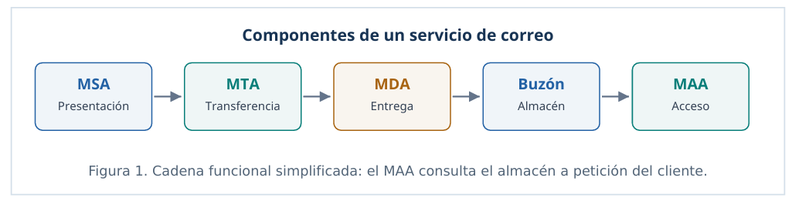
Conviene distinguir el servidor como equipo físico o virtual del servidor como aplicación que atiende solicitudes. Un equipo puede ejecutar varios servicios simultáneamente, mientras que una misma función puede estar distribuida entre varios equipos para mejorar la disponibilidad o repartir la carga.
| Componente | Función principal | Comunicación habitual |
|---|---|---|
| MSA | Aceptar mensajes presentados por usuarios autorizados | SMTP submission |
| MTA | Recibir y transferir mensajes entre sistemas | SMTP |
| MDA | Entregar mensajes al buzón definitivo | LMTP o mecanismos internos |
| Almacén de correo | Conservar mensajes y metadatos | Acceso interno al almacenamiento |
| MAA | Permitir el acceso a los buzones | IMAP o POP3 |
| Servicio de autenticación | Comprobar identidades y credenciales | Mecanismos internos o directorio |
| Filtro de correo | Aplicar políticas y analizar mensajes | Integración interna o servicios externos |
El MUA (Mail User Agent) corresponde al cliente de correo, no necesariamente al servidor. Una aplicación webmail actúa como MUA desde el punto de vista funcional, aunque se ejecute en un servidor web.
Separación de funciones
La separación lógica facilita la comprensión de las responsabilidades de cada componente. La separación física, en cambio, permite asignar recursos, aplicar políticas de seguridad y realizar tareas de mantenimiento de manera independiente. No es imprescindible utilizar una máquina por cada función.
Arquitectura de un servicio de correo
Ana utiliza su cliente para enviar un mensaje a Pablo. El MSA de empresa.example acepta el mensaje, el MTA lo transfiere al MTA de centro.example y el MDA receptor lo deposita en el buzón de Pablo. Cuando Pablo consulta su correo, su cliente utiliza IMAP para acceder al almacén a través del servicio MAA. El equipo de Pablo puede permanecer apagado durante la entrega del mensaje.
Plano de entrada, almacenamiento y acceso
La entrada recibe conexiones SMTP desde usuarios o servidores externos. El procesamiento aplica políticas, resuelve destinatarios y determina la ruta. El almacenamiento conserva mensajes pendientes en colas y mensajes entregados en buzones. El acceso proporciona una vista autorizada del buzón. Estos elementos tienen necesidades de seguridad y rendimiento diferentes.
Requisitos hardware y software
El dimensionamiento depende del número de usuarios, la frecuencia de mensajes, el tamaño de los adjuntos, la retención, las conexiones simultáneas y el coste de los filtros. No existe una configuración hardware universal adecuada para todos los servidores.
Recursos hardware
| Recurso | Influencia en el servicio |
|---|---|
| CPU | Procesamiento SMTP, cifrado TLS, análisis antispam y antivirus |
| Memoria RAM | Conexiones concurrentes, índices de buzones y cachés |
| Almacenamiento | Buzones, colas, índices, registros y datos temporales |
| Red | Transferencia de adjuntos, conexiones simultáneas y latencia |
| Disponibilidad eléctrica | Continuidad del servicio y protección frente a apagados abruptos |
El rendimiento del almacenamiento no depende únicamente de su capacidad: un elevado número de operaciones pequeñas puede limitar la velocidad de acceso a los buzones. La redundancia de discos puede reducir la interrupción por avería, pero no sustituye las copias de seguridad. Es importante reservar espacio libre para colas, índices y operaciones de mantenimiento.
Estimación básica de capacidad
Un centro cuenta con 100 usuarios y asigna una cuota máxima de 2 GB por buzón. El máximo teórico de correo almacenado es de 200 GB. Si se añade una reserva equivalente al 25 % de ese volumen, se obtiene una previsión de 250 GB para el servicio activo. Esta estimación no incluye las copias de seguridad ni garantiza que los índices, los registros o los picos de cola quepan en la reserva; deben medirse por separado. La cuota es un límite, no necesariamente espacio ocupado desde el primer día.
Requisitos software y de infraestructura
Se requiere un sistema capaz de ejecutar los servicios seleccionados, gestionar conexiones TCP, controlar permisos y disponer de almacenamiento persistente. También son necesarios una resolución DNS coherente, una hora correctamente sincronizada, certificados adecuados para TLS y mecanismos de registro de actividad. Para un servicio público deben considerarse la accesibilidad del puerto SMTP entre servidores, la reputación de las direcciones emisoras y la resolución inversa.
En un laboratorio aislado pueden utilizarse nombres y direcciones ficticios con un DNS interno. En estos apuntes se mantienen empresa.example y centro.example, con las direcciones de documentación 192.0.2.10 y 198.51.100.20 respectivamente. No son servidores públicos reales.
Clasificación de las aplicaciones servidoras de correo electrónico
Las aplicaciones pueden clasificarse por la función que realizan, por su modelo de integración y por el tipo de infraestructura en el que se ejecutan. Una aplicación puede pertenecer a más de una categoría.
| Categoría | Funciones características |
|---|---|
| Servidor de transferencia SMTP | Recepción, encaminamiento, retransmisión y colas |
| Servidor de presentación | Autenticación y aceptación de mensajes de usuarios |
| Agente de entrega | Resolución del destinatario final y escritura en buzón |
| Servidor de acceso | Exposición de buzones por IMAP o POP3 |
| Pasarela de seguridad | Filtrado, cuarentena y aplicación de políticas |
| Plataforma integrada | Combina transferencia, acceso, almacenamiento y administración |
| Aplicación webmail | Interfaz web para leer y enviar mensajes |
Arquitecturas modulares e integradas
Una arquitectura modular combina componentes especializados mediante interfaces definidas. Permite sustituir una pieza sin reemplazar todo el servicio, pero exige que sus mecanismos de autenticación, permisos y entrega sean compatibles. Una plataforma integrada puede simplificar la administración a cambio de una dependencia mayor de su modelo de almacenamiento y configuración.
También es posible delegar determinadas funciones en un proveedor externo: por ejemplo, recibir mensajes en una pasarela de filtrado y conservar los buzones en la organización. La ubicación del servicio no cambia la función de los protocolos.
Criterios de selección del software de correo electrónico
La elección debe partir de los requisitos del servicio, no únicamente de la popularidad de una aplicación. Es conveniente identificar qué dominios se gestionarán, cuántos usuarios tendrán acceso, qué protocolos se necesitan y qué nivel de disponibilidad se pretende alcanzar.
| Criterio | Preguntas que conviene formular |
|---|---|
| Funcionalidad | ¿Admite SMTP, submission, IMAP, POP3 o entrega local según sea necesario? |
| Interoperabilidad | ¿Puede intercambiar mensajes con otros servidores y clientes? |
| Seguridad | ¿Admite TLS, autenticación, restricciones de relay y actualizaciones? |
| Gestión de identidades | ¿Permite cuentas locales, virtuales o un directorio externo? |
| Escalabilidad | ¿Puede soportar el volumen y la concurrencia previstos? |
| Operación | ¿Dispone de registros, estadísticas, gestión de colas y diagnóstico? |
| Mantenimiento | ¿Existen documentación, soporte y una política de actualizaciones? |
| Portabilidad y coste | ¿Qué implican la licencia, los recursos y una posible migración? |
Selección para un centro educativo
Un centro necesita 300 cuentas, acceso desde varios dispositivos y envío autenticado. IMAP, SMTP submission con TLS, cuotas y restricciones de retransmisión son requisitos funcionales. POP3 puede ser opcional. Si el centro ya dispone de un directorio de usuarios, la integración con él puede evitar duplicar identidades. No es necesario seleccionar todavía un producto concreto para definir estos requisitos.
Componentes del servicio y dependencias funcionales
Los componentes cooperan a través de interfaces. La comunicación entre MSA y MTA puede realizarse mediante SMTP o una interfaz interna. El MTA puede entregar mensajes al MDA mediante LMTP (Local Mail Transfer Protocol) o mecanismos internos. El MAA accede al mismo almacén lógico en el que se realiza la entrega.
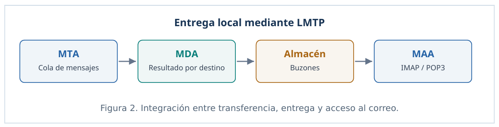
LMTP es un protocolo derivado de SMTP destinado principalmente a la entrega final en entornos donde el receptor no mantiene una cola de retransmisión. A diferencia de SMTP, tras recibir el contenido puede devolver un resultado de entrega individual para cada destinatario aceptado. Esto permite distinguir entregas exitosas de fallos parciales.
Dependencias críticas
| Dependencia | Consecuencia de una incidencia |
|---|---|
| DNS | Puede impedir la localización de servidores remotos |
| Servicio de autenticación | Puede impedir la presentación autenticada y el acceso a buzones |
| Almacén de correo | Puede impedir la entrega local o la lectura de mensajes |
| Cola de transferencia | Puede impedir aceptar o transferir mensajes de forma fiable |
| Certificados y hora | Pueden provocar errores de validación TLS |
| Filtros | Pueden retrasar o impedir la aceptación según la política establecida |
Las dependencias no siempre afectan por igual a todas las funciones. Un fallo de IMAP no implica que SMTP haya dejado de recibir mensajes. Un fallo de DNS externo puede retrasar la salida de correo sin impedir la entrega local. Una aplicación debe tratar adecuadamente los fallos temporales y no confirmar la aceptación de un mensaje cuya responsabilidad no puede asumir.
Parámetros generales de configuración del servidor
La configuración expresa cómo se comporta el servicio. Cada aplicación utiliza su propio formato y nombres de parámetros, pero las decisiones fundamentales son comunes.
| Grupo | Parámetros conceptuales |
|---|---|
| Identidad | Nombre del servidor, dominio y nombre anunciado en SMTP |
| Recepción | Dominios aceptados y destinatarios válidos |
| Escucha | Direcciones locales, puertos y protocolos |
| Retransmisión | Redes de confianza, usuarios autorizados y destinos permitidos |
| Entrega | Rutas, agente de entrega y ubicación lógica de buzones |
| Seguridad | TLS, certificados, autenticación y políticas de filtrado |
| Límites | Tamaño de mensaje, conexiones, cuotas y frecuencia de envío |
| Colas | Reintentos, vencimiento y tratamiento de errores |
| Registro | Nivel de detalle, conservación y rotación |
Política de aceptación y de entrega
Aceptar un dominio como destino no es lo mismo que autorizar a sus usuarios a enviar a cualquier dominio. La primera decisión determina qué correo recibe el servicio; la segunda determina quién puede utilizarlo como intermediario. La validez del destinatario debe comprobarse, cuando sea posible, durante la sesión SMTP para evitar aceptar mensajes que luego no puedan entregarse.
Ficha conceptual de configuración
El servidor mail.empresa.example acepta mensajes entrantes para empresa.example en TCP 25. Los usuarios autorizados presentan mensajes en TCP 587 con autenticación y TLS. El correo local se entrega al almacén de buzones y el destinado a otros dominios se transfiere mediante SMTP. Los usuarios acceden a sus buzones mediante IMAP con TLS implícito en TCP 993. No se permite la retransmisión arbitraria a clientes externos no autorizados.
Identificación del servidor y configuración de dominios
La identidad de un servidor incluye el nombre de host, el FQDN y la dirección o direcciones IP de sus interfaces. El dominio de correo determina el espacio de direcciones de los usuarios. Estos conceptos están relacionados, pero no son equivalentes.
| Elemento | Ejemplo |
|---|---|
| Nombre de host | |
| FQDN | mail.empresa.example |
| Dominio de correo | empresa.example |
| Dirección IP de documentación | 192.0.2.10 |
| Dirección de usuario | ana@empresa.example |
El nombre anunciado por un MTA en EHLO debe identificar adecuadamente al cliente SMTP. El nombre utilizado por los usuarios para conectarse a un servicio TLS debe corresponder a una identidad válida del certificado presentado. Los registros MX indican qué servidores reciben mensajes para el dominio, pero no crean cuentas ni configuran automáticamente el servidor receptor.
Coherencia entre DNS y configuración interna
Un servidor puede tener registros DNS correctos y rechazar todos los mensajes para el dominio si no está configurado para aceptarlo. A la inversa, un servidor puede aceptar localmente un dominio sin que otros sistemas sepan localizarlo. Por ello deben verificarse tanto la publicación DNS como las políticas de recepción y entrega.
Dominios locales y dominios virtuales
Un dominio local es aquel cuyo correo se considera de destino final en el sistema, según su configuración. En muchos servidores tradicionales se asocia a cuentas del sistema operativo. Un dominio virtual permite gestionar direcciones de correo de un dominio mediante un espacio de usuarios y buzones independiente de las cuentas del sistema. La terminología exacta depende de la aplicación.
El término virtual no significa necesariamente que el dominio esté alojado en una máquina virtual. Se refiere a la separación lógica del espacio de nombres y a la forma de resolver destinatarios. Un dominio virtual también puede ser de destino final.
| Característica | Modelo tradicional | Modelo virtual |
|---|---|---|
| Identidad | Frecuentemente cuenta del sistema | Cuenta de correo independiente |
| Resolución de destinatarios | Tabla o usuarios locales | Directorio o tabla de direcciones completas |
| Almacenamiento | Asociado a un usuario local | Asociado al dominio y a la cuenta |
| Múltiples dominios | Posible, con reglas de asignación | Habitualmente previsto en el modelo |
Dos usuarios con la misma parte local
Un proveedor gestiona ana@empresa.example y ana@centro.example. Aunque ambos tienen la parte local ana, son direcciones diferentes. Un modelo de buzones virtuales puede asociar cada dirección completa con un identificador y almacén distintos. No es necesario crear dos usuarios del sistema operativo con el mismo nombre.
Dominios de entrega final y dominios de retransmisión
Además de los dominios de entrega final, un servidor puede aceptar correo para dominios que administra como intermediario. En ese caso debe transferir los mensajes hacia un destino posterior y aplicar restricciones específicas. Aceptar correo para un dominio de retransmisión no equivale a aceptar mensajes hacia cualquier destino de Internet.
Interfaces y puertos de escucha
Una aplicación servidora abre uno o varios puntos de escucha asociados a direcciones IP y puertos. Una dirección de escucha concreta limita el servicio a esa interfaz o dirección; una dirección comodín puede permitir conexiones a través de varias interfaces. La exposición efectiva también depende del encaminamiento, NAT y las reglas de cortafuegos.
| Servicio | Puerto TCP | Uso habitual |
|---|---|---|
| SMTP transferencia | 25 | Comunicación entre servidores |
| SMTP submission | 587 | Presentación de mensajes, normalmente con STARTTLS |
| Submission con TLS implícito | 465 | Presentación cifrada desde el inicio |
| POP3 | 110 | Acceso POP3, con STLS cuando se admite |
| POP3 con TLS implícito | 995 | Acceso cifrado desde el inicio |
| IMAP | 143 | Acceso IMAP, con STARTTLS cuando se admite |
| IMAP con TLS implícito | 993 | Acceso cifrado desde el inicio |
| HTTPS | 443 | Webmail, si se ofrece |
No es necesario abrir todos los puertos. Deben exponerse únicamente los servicios requeridos. La presentación autenticada debe proteger las credenciales mediante TLS correctamente validado; en la transferencia SMTP entre servidores, el modelo de cifrado y las políticas son distintos.
Exposición de servicios
Un servidor destinado a recibir correo de Internet y ofrecer acceso a usuarios mediante IMAP puede publicar TCP 25, 587 y 993. Si no ofrece POP3, no necesita publicar 110 ni 995. Si la administración se realiza desde una red privada, su interfaz de administración no debe quedar expuesta por el mero hecho de publicar SMTP.
Entrega local y entrega remota de mensajes
Tras aceptar un mensaje, el sistema resuelve cada destinatario del sobre SMTP. La decisión de entrega puede ser distinta para cada dirección. Los campos To y Cc del mensaje no sustituyen a RCPT TO como fuente de información de encaminamiento.
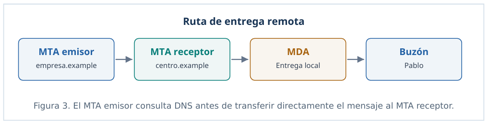
Entrega local
Si el destinatario corresponde a un buzón gestionado por el servicio, se aplica la resolución de alias, las políticas de entrega y la comprobación de cuotas. El MDA deposita el mensaje en el almacén adecuado. El acceso posterior se realiza por IMAP, POP3 o una aplicación autorizada.
Entrega remota
Si el destino no es local y la retransmisión está autorizada, el MTA determina el siguiente salto: puede consultar los registros MX del dominio destinatario o utilizar una ruta explícita hacia un intermediario. Establece una sesión SMTP y transfiere el mensaje. La aceptación del siguiente servidor no demuestra que el usuario haya leído el correo ni garantiza por sí sola que el buzón final ya lo contenga.
Un mensaje con dos destinatarios
Ana envía un mensaje a otro usuario de empresa.example y a Pablo, de centro.example. El mismo mensaje puede originar una entrega local y una transferencia remota. Si la entrega local termina correctamente pero el servidor remoto está temporalmente inaccesible, solo el destinatario pendiente necesita permanecer en cola. No debe repetirse innecesariamente la entrega ya confirmada.
Retransmisión de correo (Mail Relay)
La retransmisión consiste en aceptar un mensaje cuyo destino final no se encuentra en el servidor y transferirlo a otro sistema. Es una función normal de SMTP. Por ejemplo, el MTA de la organización emisora retransmite el correo de sus usuarios hacia otros dominios.
La autorización de relay se basa en una política explícita: autenticación del usuario, redes específicamente confiables o dominios de destino para los que el servidor actúa como intermediario. No debe basarse únicamente en que la dirección MAIL FROM pertenezca al dominio local, pues ese valor puede ser declarado por un cliente no autorizado.
| Origen | Destino | Decisión habitual |
|---|---|---|
| MTA externo | Buzón local válido | Aceptar si supera las políticas de entrada |
| Usuario autenticado | Dominio externo | Aceptar según permisos y límites |
| Cliente externo no autenticado | Dominio externo arbitrario | Denegar retransmisión |
| MTA externo | Dominio de relay autorizado | Aceptar según política de intermediación |
Un open relay permite retransmitir mensajes a destinos arbitrarios sin autorización adecuada. Puede ser utilizado para distribuir spam y perjudicar la reputación del servidor. La seguridad de la retransmisión se estudiará en profundidad en el capítulo 7.
Servidores intermediarios de correo (Smarthost)
Un smarthost es un servidor al que un MTA entrega mensajes para que se encargue de su transferencia posterior. En lugar de resolver y conectar directamente con todos los MX de los dominios destinatarios, el MTA utiliza un siguiente salto configurado para todo o parte del correo saliente.
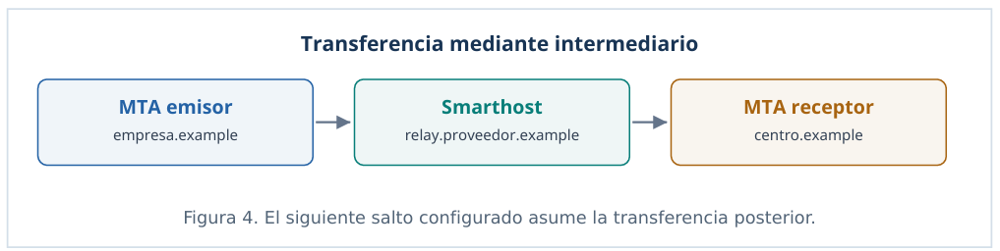
| Entrega directa | Entrega mediante smarthost |
|---|---|
| El MTA emisor localiza el MX del destinatario | El MTA emisor utiliza un intermediario configurado |
| La organización controla la transferencia externa | Parte de la transferencia se delega |
| Requiere conectividad y reputación propias | Depende de la disponibilidad y políticas del intermediario |
| Diagnóstico distribuido entre destinos | Punto de salida más centralizado |
El smarthost puede requerir autenticación y TLS. Puede aplicar límites de volumen, políticas de remitente o filtrado. No se debe confundir con un MX secundario: el smarthost es una ruta de salida; un MX secundario se anuncia como posible destino de entrada para un dominio.
Salida centralizada
mail.empresa.example envía su correo saliente a relay.proveedor.example. El intermediario se encarga de consultar el MX de centro.example y realizar la transferencia. Pablo conserva su dirección pablo@centro.example. El uso del smarthost no exige que el proveedor almacene los buzones de Ana o Pablo.
Gestión de las colas de correo
Las colas permiten desacoplar la aceptación de un mensaje de su entrega posterior. SMTP utiliza un modelo de almacenamiento y reenvío: cuando la transferencia no puede completarse de inmediato, un MTA puede conservar el mensaje y volver a intentarlo.
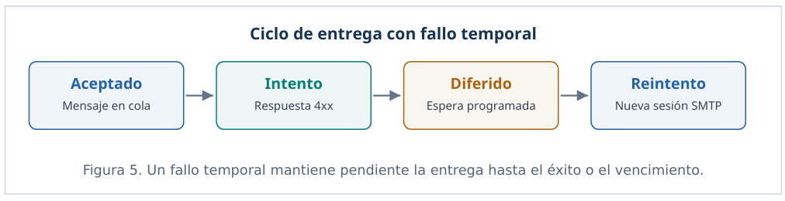
Una entrada de cola puede contener el mensaje, información del sobre, destinatarios pendientes, identificador interno, fechas y último error registrado. Los destinatarios de un mismo mensaje pueden encontrarse en estados diferentes.
| Estado conceptual | Significado |
|---|---|
| Pendiente | Aceptado, aún no procesado o transferido |
| Activo | En proceso de entrega |
| Diferido | Entrega temporalmente fallida; espera reintento |
| Retenido | Suspendido por una decisión administrativa o política |
| Entregado | Responsabilidad transferida o entrega local completada |
| Fallo definitivo | No se continuará intentando ese destinatario |
Los nombres de los estados varían entre aplicaciones. Un código SMTP 4xx indica un fallo temporal; un 5xx indica un fallo permanente para la solicitud correspondiente. Si el servidor emisor ya aceptó el mensaje y posteriormente no puede entregarlo, normalmente genera una notificación de no entrega hacia el remitente del sobre, siempre que corresponda. Los mensajes de notificación utilizan un remitente de sobre vacío para evitar bucles de errores.
Reintentos y vencimiento
La política de reintentos determina cuándo se vuelve a intentar una entrega. Reintentar continuamente sobrecarga los sistemas; esperar demasiado retrasa los mensajes. Debe existir un límite de permanencia en cola. Un fallo temporal no significa que el destinatario sea inválido, y un mensaje diferido no debe considerarse perdido.
Servidor receptor temporalmente no disponible
El MTA de empresa.example intenta transferir un mensaje a centro.example y recibe 451 Temporary local problem. El mensaje permanece pendiente y se programa un reintento. Si más adelante recibe 250 tras transmitir los datos, puede dar por completada la transferencia de ese destinatario. Si el problema persiste hasta el vencimiento de la cola, se aplica la política de notificación de fallo. Los intervalos concretos dependen de la configuración.
Supervisión de las colas
Debe vigilarse el número de mensajes pendientes, la antigüedad del más antiguo, la tasa de entrada y salida, los destinos afectados y los errores repetidos. Una cola grande no siempre implica una avería: puede corresponder a un pico legítimo. La tendencia y la distribución de errores permiten distinguir saturación, problemas remotos, fallos DNS y abuso. La eliminación o reactivación masiva de mensajes exige identificar previamente la causa y conservar la trazabilidad.
Ciclo de vida y supervisión de los servicios
La operación de un servidor comprende su inicialización, funcionamiento, modificación de configuración, mantenimiento y parada. Las aplicaciones pueden iniciar procesos de escucha, trabajadores de entrega, tareas de gestión de colas y conexiones con servicios de autenticación.
| Operación | Finalidad |
|---|---|
| Inicio | Activar los componentes y sus dependencias |
| Parada controlada | Interrumpir la aceptación y preservar datos pendientes |
| Recarga | Aplicar cambios compatibles sin reinicio completo |
| Reinicio | Detener y volver a iniciar el servicio |
| Supervisión | Detectar fallos, saturación y degradación |
No todas las modificaciones admiten recarga. Antes de cambiar una configuración se debe validar su coherencia, conservar una copia y prever un procedimiento de recuperación. Tras aplicarla se comprueban las funciones afectadas, no solo la existencia de un proceso activo.
Indicadores de funcionamiento
Entre los indicadores útiles se encuentran la disponibilidad de los puertos, los tiempos de respuesta SMTP, el número de conexiones, la ocupación del almacenamiento, los errores de autenticación, el tamaño y edad de la cola y la caducidad de certificados. Los registros deben protegerse porque pueden incluir direcciones de correo, identificadores y otros datos personales. La monitorización debe ajustarse a las necesidades reales del servicio.
Principios de verificación del funcionamiento del servidor
Una comprobación completa debe abarcar la infraestructura, las funciones individuales y el recorrido de extremo a extremo. Un puerto abierto no demuestra que el servicio pueda entregar mensajes. Del mismo modo, un código SMTP 250 después de RCPT TO solo confirma la aceptación de ese destinatario para la transacción, no la recepción definitiva del mensaje completo.
| Prueba | Resultado esperado |
|---|---|
| Resolución DNS | MX y direcciones coherentes con el escenario |
| Conexión SMTP | Saludo y capacidades adecuados |
| Presentación autenticada | Usuario válido aceptado mediante canal protegido |
| Destinatario local válido | Mensaje aceptado y entregado al buzón |
| Destinatario local inexistente | Rechazo conforme a la política |
| Relay externo no autorizado | Retransmisión denegada |
| Transferencia remota autorizada | Mensaje transferido o diferido justificadamente |
| Acceso IMAP o POP3 | Usuario autorizado recupera su mensaje |
| Fallo temporal simulado | Mensaje pendiente y reintento previsto |
| Registros y cola | Evidencias correlacionables de las pruebas |
Verificación de extremo a extremo
Ana presenta un mensaje de prueba a mail.empresa.example con destinatario pablo@centro.example. Se comprueba la aceptación del mensaje, su identificador en la cola emisora, la transferencia SMTP al receptor y la entrega al buzón de Pablo. Finalmente, Pablo accede mediante IMAP y verifica el asunto y contenido. Si alguna fase falla, se localiza el último punto confirmado antes de investigar el componente siguiente. Esta prueba es un escenario ilustrativo, no una ejecución sobre servidores reales.
Referencias técnicas
- RFC 5321: Simple Mail Transfer Protocol (SMTP).
- RFC 6409: Message Submission for Mail.
- RFC 2033: Local Mail Transfer Protocol (LMTP).
- RFC 8314: Cleartext Considered Obsolete: Use of Transport Layer Security (TLS) for Email Submission and Access.
- RFC 9051: Internet Message Access Protocol (IMAP) – Version 4rev2.
- RFC 1939: Post Office Protocol – Version 3.
Gestión de usuarios, buzones y alias
Introducción a la gestión de cuentas de correo electrónico
La gestión de cuentas permite determinar quién puede utilizar el servicio de correo, qué direcciones puede recibir y utilizar como remitente, dónde se almacenan los mensajes y qué recursos se asignan a cada persona. Es una función administrativa que relaciona el servicio SMTP, el agente de entrega (MDA), el almacenamiento y los servicios de acceso POP3 e IMAP.
En un servicio de correo hay que distinguir tres operaciones: la aceptación de un destinatario durante una sesión SMTP, la entrega efectiva al buzón y la autenticación del usuario que consulta ese buzón. Que una de ellas funcione no garantiza que las demás funcionen correctamente.
Escenario de referencia
Se mantienen los dominios ficticios de los capítulos anteriores. Las direcciones pertenecen al dominio reservado .example y no representan cuentas reales.
| Dirección | Función |
|---|---|
| ana@empresa.example | Cuenta personal de Ana |
| pablo@centro.example | Cuenta personal de Pablo |
| administracion@empresa.example | Dirección funcional de administración |
| soporte@empresa.example | Dirección de atención técnica |
Recepción y acceso son operaciones diferentes
El servidor de empresa.example acepta un mensaje destinado a Ana y lo deposita en su buzón. Ana puede tener su ordenador apagado. Más tarde, su cliente IMAP se autentica y consulta el buzón. Si falla la contraseña, el mensaje puede seguir correctamente almacenado aunque Ana no pueda consultarlo.
Diferencias entre usuario, cuenta, dirección y buzón de correo
Estos términos se utilizan a menudo como sinónimos, pero describen entidades distintas. Un usuario es una identidad; una cuenta es el conjunto de atributos que permiten utilizar el servicio; una dirección identifica un destino de correo; un buzón es el espacio lógico donde se conservan los mensajes entregados.
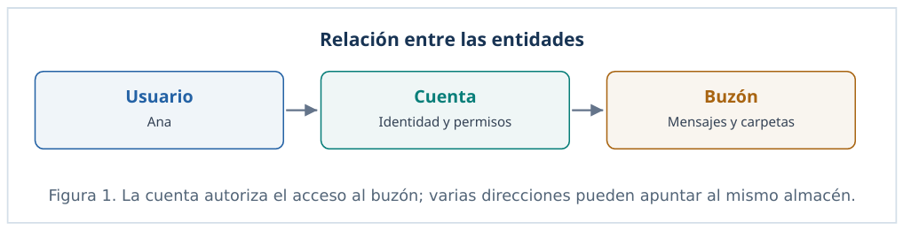
| Elemento | Función | Ejemplo |
|---|---|---|
| Usuario | Identidad de una persona o servicio | Ana |
| Cuenta | Identidad de acceso, credenciales y políticas | ana@empresa.example |
| Dirección | Identificador empleado para enviar correo a un destino | compras@empresa.example |
| Buzón | Almacén lógico de mensajes y carpetas | Buzón de Ana |
| Alias | Dirección alternativa asociada a uno o más destinos | a.garcia@empresa.example |
El identificador de autenticación no tiene por qué coincidir con la dirección de correo. Algunos servicios utilizan el nombre completo de la cuenta, otros un identificador interno. El directorio de destinatarios resuelve direcciones de correo; el servicio de autenticación verifica credenciales. Ambos pueden consultar la misma base de datos, aunque realizan funciones diferentes.
Relaciones entre entidades
Una cuenta puede disponer de varias direcciones que entreguen en un único buzón. También puede tener acceso autorizado a varios buzones. Una dirección puede distribuir mensajes a varias cuentas. Por tanto, no existe necesariamente una correspondencia uno a uno entre direcciones, usuarios y buzones.
Tres direcciones y un único buzón
Ana posee la cuenta ana@empresa.example y recibe también los mensajes enviados a a.garcia@empresa.example y compras@empresa.example. Las tres direcciones se resuelven hacia el mismo buzón. No se han creado tres cuentas ni se requieren tres contraseñas.
Usuarios del sistema y usuarios virtuales
Existen dos modelos generales para representar las identidades de correo. La diferencia principal reside en si las cuentas dependen de las identidades del sistema operativo o se administran de manera independiente.
Usuarios del sistema
En este modelo, el servicio asocia las cuentas de correo con identidades reconocidas por el sistema operativo. El almacenamiento y sus permisos pueden apoyarse en esas identidades. Esto no significa que necesariamente se permita iniciar sesiones interactivas en el equipo servidor: dicho permiso debe gestionarse por separado.
Resulta un modelo fácil de comprender para instalaciones pequeñas. Sin embargo, puede dificultar la separación administrativa entre el servicio de correo y el resto del sistema y la gestión de varios dominios con nombres de usuario coincidentes.
Usuarios virtuales
Las cuentas se definen en un repositorio específico del servicio, como una base de datos o un directorio. El servidor traduce la identidad de correo a los permisos y a la ubicación de almacenamiento correspondientes. Las cuentas virtuales no necesitan una cuenta individual del sistema operativo ni una máquina virtual.
| Característica | Usuarios del sistema | Usuarios virtuales |
|---|---|---|
| Identidad | Cuenta del sistema | Repositorio del servicio |
| Autenticación | Integración con el sistema o directorio | Repositorio o proveedor de identidad |
| Almacenamiento | Asociado a la identidad del sistema | Asignado mediante reglas del servicio |
| Varios dominios | Puede requerir convenciones adicionales | Permite distinguir cuentas por dominio |
| Separación administrativa | Menor si se comparten identidades | Mayor si se aíslan correctamente |
Nombres coincidentes en distintos dominios
Un proveedor aloja ana@empresa.example y ana@centro.example. Ambas cuentas tienen la misma parte local, pero son identidades diferentes. Un modelo virtual puede usar la dirección completa como clave para distinguirlas y asignarles buzones independientes.
En cualquiera de los modelos, el servicio debe garantizar el aislamiento entre usuarios. Compartir una identidad técnica de acceso al almacenamiento no significa compartir los permisos lógicos de todos los buzones.
Modelo de creación y administración de cuentas de correo
La creación de una cuenta debe entenderse como un conjunto coherente de operaciones, no simplemente como la asignación de una dirección y una contraseña. Los componentes de envío, entrega y acceso deben utilizar información compatible.
| Fase | Decisión u operación conceptual |
|---|---|
| Alta | Identificador único, dominio y dirección principal |
| Autenticación | Credenciales iniciales o vínculo con un proveedor de identidad |
| Entrega | Asociación entre destinatario y buzón |
| Almacenamiento | Ubicación, cuota y política de conservación |
| Autorización | Permisos de lectura, envío y delegación |
| Verificación | Comprobación del envío, recepción y acceso |
| Baja | Revocación de acceso y gestión del correo conservado |
Atributos de una cuenta
Una cuenta puede incluir nombre visible, dirección principal, identificador de inicio de sesión, estado (activa o suspendida), cuota, alias, grupos y permisos delegados. Los secretos de autenticación no deben conservarse en texto claro; se utilizan mecanismos adecuados de verificación de credenciales o proveedores de identidad.
Ficha conceptual de alta
Se crea la identidad pablo@centro.example con una cuota de 2 GB y permiso para enviar utilizando su dirección principal. El directorio de destinatarios la asocia al buzón de Pablo. Se verifica la autenticación por IMAP y la recepción SMTP. Los datos concretos de configuración dependen de la aplicación elegida.
Ciclo de vida y suspensión
Modificar una dirección principal no obliga necesariamente a mover el buzón. La dirección anterior puede mantenerse como alias. Suspender una cuenta puede impedir la autenticación mientras se sigue aceptando correo, o puede impedir ambas operaciones, según la política establecida. Eliminar una cuenta y borrar su buzón son decisiones distintas: deben considerarse las necesidades de conservación, privacidad y recuperación.
Almacenamiento de mensajes de correo electrónico
El almacén de correo conserva los mensajes después de la entrega definitiva. No debe confundirse con la cola SMTP, que conserva temporalmente mensajes pendientes de entrega o retransmisión. Los buzones contienen mensajes, metadatos y, según el diseño, índices que aceleran la búsqueda y la sincronización.
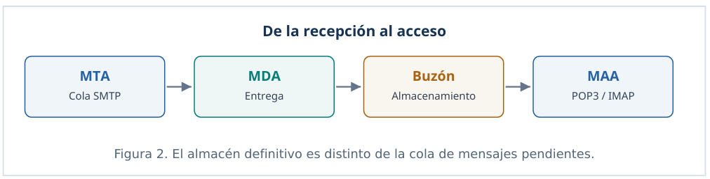
| Elemento | Contenido | Duración habitual |
|---|---|---|
| Cola SMTP | Mensajes pendientes de entrega | Hasta entrega o vencimiento |
| Buzón | Mensajes entregados | Según usuario y política de retención |
| Índice | Referencias, búsquedas y metadatos | Mientras resulte útil para el servicio |
| Copia de seguridad | Estado recuperable de mensajes y configuración | Según política de respaldo |
El mensaje almacenado suele conservar sus cabeceras y cuerpo MIME, además de los metadatos propios del sistema. La marca de leído, por ejemplo, puede almacenarse fuera del contenido original del mensaje. La capacidad necesaria incluye tanto el correo como los metadatos, los archivos temporales y los índices.
De la cola al buzón
Un mensaje de Pablo a Ana permanece en la cola del MTA mientras el servidor de destino no está disponible. Cuando el servidor receptor lo acepta y el MDA lo entrega, aparece en el buzón de Ana. El cliente IMAP consulta ese buzón, no la cola de salida del emisor.
Formatos de almacenamiento de buzones
SMTP, POP3 e IMAP no obligan al servidor a utilizar un formato físico específico de almacenamiento. El cliente accede mediante un protocolo y no necesita conocer cómo se representan los mensajes en disco.
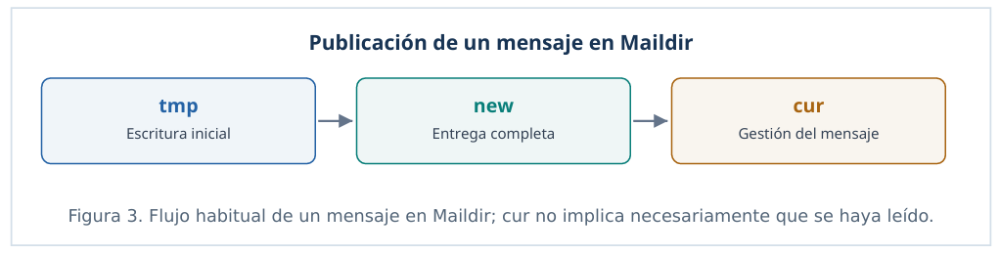
Mbox
Mbox es una familia de formatos en los que varios mensajes se almacenan secuencialmente en un archivo. Cada mensaje se delimita mediante una línea separadora que comienza por From (sin dos puntos). Esta línea no es la cabecera From: del mensaje. Existen variantes que utilizan diferentes reglas de escape y delimitación.
Ejemplo esquemático de un archivo con dos mensajes:
From ana@empresa.example Mon Nov 23 09:00:00 2026
From: ana@empresa.example
To: pablo@centro.example
Subject: Reunión
Nos vemos a las diez.
From soporte@empresa.example Mon Nov 23 10:00:00 2026
From: soporte@empresa.example
To: pablo@centro.example
Subject: Aviso
Servicio disponible.
El acceso concurrente requiere mecanismos adecuados de bloqueo o coordinación. Eliminar mensajes puede exigir reescribir o compactar el archivo. Un archivo grande puede dificultar determinadas operaciones de recuperación; no obstante, los índices y las técnicas de almacenamiento pueden mejorar considerablemente su rendimiento.
Maildir
Maildir utiliza archivos independientes para almacenar los mensajes y tres directorios básicos: tmp, new y cur. El agente de entrega escribe inicialmente en tmp y publica el mensaje en new mediante una operación apropiada del sistema de archivos. Los mensajes que el servicio ya ha incorporado a su vista del buzón pueden pasar a cur.
| Directorio | Finalidad |
|---|---|
| tmp | Mensajes en proceso de escritura o entrega |
| new | Mensajes recién entregados |
| cur | Mensajes incorporados a la gestión habitual del buzón |
La presencia de un mensaje en cur no significa necesariamente que haya sido leído. Las marcas de estado se pueden representar mediante sufijos del nombre del archivo, por ejemplo :2,S para la marca Seen, según las convenciones Maildir y la implementación.
Maildir/
tmp/
new/
mensaje-001
cur/
mensaje-002:2,S
El almacenamiento individual reduce la necesidad de bloquear un archivo que contenga todos los mensajes. Puede facilitar la eliminación o recuperación de mensajes aislados, aunque implica gestionar un gran número de archivos y operaciones de metadatos. El rendimiento depende del sistema de archivos, de los índices y de la carga real.
Otros formatos de almacenamiento
Algunos servidores emplean formatos propios con archivos agrupados, bases de datos, almacenamiento de objetos o combinaciones de estos mecanismos. Pueden optimizar el acceso concurrente, la deduplicación o la distribución del almacenamiento. La recuperación y la migración requieren conocer las herramientas y garantías de consistencia del formato elegido.
| Aspecto | Mbox | Maildir |
|---|---|---|
| Unidad física habitual | Archivo con varios mensajes | Archivo por mensaje |
| Entrega | Añadir contenido al archivo | Publicar un nuevo archivo |
| Concurrencia | Coordinación sobre archivo compartido | Menor contención por mensaje |
| Eliminación | Puede requerir compactación | Eliminación del archivo correspondiente |
| Número de archivos | Relativamente bajo | Puede ser muy elevado |
| Copia incremental | Puede copiar un archivo modificado grande | Puede copiar solo archivos modificados |
Elección de formato
Un centro con muchos usuarios IMAP y frecuentes entregas concurrentes podría valorar Maildir o un almacén optimizado para concurrencia. Una instalación pequeña que prioriza el intercambio de archivos de buzón podría utilizar Mbox. La elección debe basarse en compatibilidad, rendimiento y recuperación, no únicamente en el número de usuarios.
Estructura de los buzones y organización de los mensajes
Un buzón puede representar un conjunto de carpetas lógicas. En IMAP, cada carpeta de mensajes se denomina mailbox en la terminología del protocolo; en estos apuntes se utiliza también buzón en sentido general para el conjunto de carpetas de una cuenta. No todas las carpetas visibles corresponden necesariamente a directorios físicos.
| Carpeta habitual | Finalidad |
|---|---|
| INBOX | Bandeja de entrada; nombre especial en IMAP |
| Sent | Mensajes enviados conservados por el cliente o servicio |
| Drafts | Borradores |
| Trash | Mensajes trasladados a la papelera |
| Junk | Mensajes clasificados como no deseados |
| Archive | Mensajes archivados |
Los nombres y la organización dependen del servicio y del cliente. IMAP permite sincronizar carpetas y marcas como \Seen, \Answered, \Flagged y \Deleted. Una marca de borrado no implica necesariamente eliminación física inmediata. POP3 ofrece una vista de recogida de mensajes y no proporciona la misma gestión de carpetas.
Lectura desde dos dispositivos
Ana lee un mensaje desde su teléfono utilizando IMAP. El cliente marca el mensaje como leído en el servidor. Cuando Ana abre su ordenador, el cliente sincroniza ese estado. Con POP3, la lectura de una copia descargada no sincroniza por sí sola el estado con el otro dispositivo.
Los mensajes enviados mediante SMTP tampoco aparecen necesariamente en la carpeta Sent: el cliente o el servicio debe guardar allí una copia. El envío SMTP y la operación IMAP de almacenamiento son funciones diferentes.
Permisos de acceso a los buzones
La autenticación comprueba la identidad de quien intenta acceder; la autorización determina qué operaciones puede realizar. El control de acceso debe aplicarse tanto al nivel del almacenamiento como al nivel del servicio.
Permisos físicos y lógicos
Los permisos físicos limitan qué procesos e identidades técnicas pueden leer o modificar los datos almacenados. Los permisos lógicos establecen qué cuentas pueden consultar, añadir, borrar o administrar carpetas. Un servicio IMAP puede aplicar listas de control de acceso (ACL) para delegar permisos sin compartir credenciales. La disponibilidad y granularidad de estas funciones dependen del servidor.
| Operación | Titular | Delegado de lectura | Delegado de gestión |
|---|---|---|---|
| Consultar mensajes | Sí | Sí | Sí |
| Añadir mensajes | Sí | No | Según autorización |
| Eliminar mensajes | Sí | No | Según autorización |
| Cambiar permisos | Según política | No | Solo si se delega |
La autorización de envío en nombre de una dirección debe controlarse de forma independiente del permiso de lectura del buzón. Tener acceso a un buzón compartido no concede automáticamente permiso para enviar con su identidad.
Delegación de acceso
Ana autoriza a otro empleado a consultar el buzón de administración durante sus vacaciones. Cada persona utiliza sus propias credenciales. El servidor concede únicamente los permisos necesarios y puede revocarlos al finalizar la sustitución. No es necesario entregar la contraseña de Ana.
Cuotas de almacenamiento
Una cuota limita el consumo de recursos asociado a una cuenta, buzón, dominio u otra entidad. Puede expresarse en volumen de datos, número de mensajes u otras unidades. Una cuota no es necesariamente una reserva física de espacio.
Límites y avisos
Un límite de aviso permite informar al usuario antes de agotar la capacidad. Un límite máximo impide ciertas operaciones cuando se alcanza. El comportamiento ante una entrega que supera la cuota depende de la fase en que se detecte y de la política del servicio. Puede rechazarse temporal o permanentemente la entrega; si el mensaje ya había sido aceptado, el sistema responsable debe gestionar el fallo conforme al protocolo y a su política de entrega.
| Parámetro | Valor ilustrativo |
|---|---|
| Cuota máxima | 2 000 MB |
| Umbral de aviso | 1 800 MB (90 %) |
| Espacio utilizado | 1 950 MB |
| Espacio restante | 50 MB |
Efecto de una cuota
Si Ana tiene 50 MB disponibles y se intenta entregar un mensaje cuyo tamaño contabilizado es 60 MB, se superaría la cuota en 10 MB. El servicio puede impedir la entrega. El tamaño contabilizado incluye las reglas del almacén y puede ser mayor que el tamaño original del archivo adjunto debido a MIME y Base64.
La cuota de buzón es distinta del límite de tamaño de un mensaje SMTP. Un usuario puede disponer de suficiente espacio y, aun así, no poder recibir un mensaje que supera el tamaño máximo admitido por el servidor. También puede agotarse el espacio físico del servidor aunque ninguna cuenta haya alcanzado su cuota individual.
Alias de correo electrónico
Un alias es una dirección alternativa que el sistema resuelve hacia uno o varios destinos. Habitualmente no dispone de credenciales ni almacenamiento propio. La resolución se realiza durante el procesamiento del destinatario del sobre SMTP; la cabecera To del mensaje no tiene por qué cambiar.
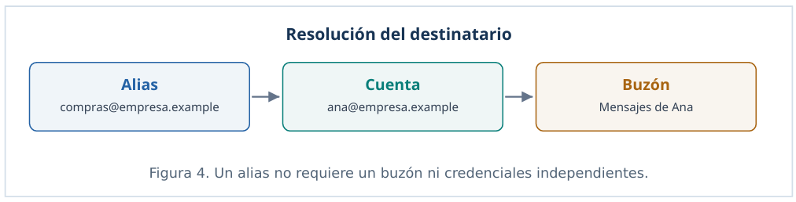
| Alias | Destino |
|---|---|
| a.garcia@empresa.example | ana@empresa.example |
| compras@empresa.example | ana@empresa.example |
| contacto@empresa.example | soporte@empresa.example |
Recepción mediante alias
Pablo envía un mensaje a compras@empresa.example. El servidor reconoce esa dirección, la resuelve hacia ana@empresa.example y entrega el mensaje en el buzón de Ana. La cabecera To puede seguir mostrando compras@empresa.example. Ana accede con las credenciales de su cuenta habitual.
Resolución y autorización de envío
Un alias puede resolverse directamente a un buzón o pasar por otras reglas de encaminamiento. Se deben evitar ciclos de expansión y destinos inexistentes. El hecho de recibir correo mediante un alias no implica que el servidor permita utilizarlo como remitente. El servicio de presentación debe comprobar que el usuario está autorizado a enviar con esa dirección.
Redirección automática de mensajes (Forwarding)
La redirección permite enviar automáticamente un mensaje recibido hacia otra dirección local o remota. Puede conservarse una copia en el buzón original o entregarse únicamente al destino de redirección, según la política aplicada.
| Modalidad | Buzón original | Destino de redirección |
|---|---|---|
| Solo redirección | No recibe copia por esa regla | Recibe el mensaje |
| Redirección y copia | Conserva el mensaje | Recibe el mensaje |
| Redirección condicional | Depende del filtro | Depende del filtro |
Redirección durante una ausencia
Se establece una regla para que los mensajes dirigidos a soporte@empresa.example se entreguen temporalmente a una cuenta de guardia. Si también se conserva una copia local, el equipo habitual puede revisar los mensajes al regresar. La política debe impedir la exposición de información a destinatarios no autorizados.
Diferencias entre alias y redirección
El alias representa una relación de direccionamiento; la redirección representa una decisión de encaminamiento de un mensaje recibido. Ambos mecanismos pueden implementarse mediante tablas de correspondencia similares y, en algunos productos, se solapan. La redirección externa puede provocar problemas de SPF y DMARC, especialmente si se modifica el mensaje o se conserva un remitente de sobre no autorizado para la nueva IP emisora. Estos aspectos se desarrollarán en el capítulo 8.
Deben detectarse los bucles de reenvío, restringirse las redirecciones externas según la política de seguridad y controlar las notificaciones de error para evitar efectos indeseados.
Alias múltiples y listas de distribución
Una dirección puede resolverse hacia varios destinatarios. Esta expansión permite distribuir un mensaje a varias personas sin que el remitente tenga que conocer todas sus direcciones. Cada destino recibe su propia entrega lógica; el servidor puede optimizar el almacenamiento físico.
Distribución a un departamento
La dirección informatica@empresa.example se expande hacia ana@empresa.example y tecnico@empresa.example. Cuando Pablo envía un mensaje al departamento, ambos destinatarios reciben una copia en sus respectivos buzones. La lectura o eliminación de una copia no modifica la otra.
Listas de distribución y gestores de listas
Una lista sencilla puede consistir en un alias con varios destinos. Un gestor de listas añade funciones de suscripción, baja, moderación, restricciones de publicación, gestión de rebotes y, eventualmente, archivo de mensajes. No debe confundirse una lista del servidor con un grupo de contactos definido únicamente en el cliente de correo.
| Característica | Alias múltiple | Gestor de listas | Grupo del cliente |
|---|---|---|---|
| Expansión | Servidor | Servicio de listas | Cliente |
| Suscripción autónoma | No necesariamente | Habitualmente posible | No |
| Moderación | Limitada o externa | Habitualmente disponible | No |
| Gestión de rebotes | Básica | Específica | Depende del envío |
En listas grandes se deben controlar el volumen de mensajes, los permisos de publicación, la privacidad de los miembros y la eliminación de destinatarios que ya no existen. Una lista abierta a remitentes no autorizados puede convertirse en un mecanismo de distribución de correo no deseado.
Direcciones genéricas y buzones compartidos
Las direcciones genéricas identifican funciones de la organización en lugar de personas concretas: soporte, ventas, administración o atención al cliente. Pueden implementarse como alias, listas de distribución o buzones compartidos según el flujo de trabajo deseado.
Un buzón compartido proporciona un espacio común al que acceden varias cuentas autorizadas, normalmente mediante IMAP o una plataforma colaborativa. Los usuarios pueden consultar el mismo estado de los mensajes y organizar el trabajo de forma coordinada. La disponibilidad de funciones de delegación, carpetas compartidas y envío en nombre de la dirección depende de la implementación.
| Necesidad | Solución apropiada |
|---|---|
| Una persona recibe varias direcciones | Alias simple |
| Varias personas reciben copias independientes | Lista de distribución |
| Varias personas gestionan el mismo correo | Buzón compartido |
| Entrega automática en otro dominio | Redirección autorizada |
Atención técnica
Si soporte@empresa.example se configura como lista, Ana y otro técnico reciben copias independientes y podrían responder ambos al mismo incidente. Si se configura como buzón compartido, pueden consultar el mismo conjunto de mensajes y utilizar marcas o carpetas para coordinar su atención. Aun así, la coordinación requiere una política de trabajo; IMAP por sí solo no es un gestor de incidencias.
No es recomendable compartir una única contraseña entre todos los miembros de un equipo. La delegación mediante cuentas individuales mejora la trazabilidad y permite retirar permisos sin cambiar las credenciales de todo el departamento.
Direcciones comodín (Catch-all)
Una regla catch-all asigna un destino a direcciones de un dominio que no coinciden con cuentas, alias u otras reglas más específicas. Puede servir para recoger mensajes enviados a direcciones mal escritas, pero incrementa la recepción de spam y puede ocultar errores de direccionamiento.
| Destinatario | Resultado con catch-all hacia Ana |
|---|---|
| ana@empresa.example | Buzón de Ana por regla específica |
| soporte@empresa.example | Destino definido para soporte |
| inexistente@empresa.example | Buzón de Ana por regla comodín |
| inexistente@centro.example | No se aplica el comodín de empresa.example |
Sin comodín y con comodín
Pablo escribe por error anaa@empresa.example. Sin catch-all, el servidor puede rechazar ese destinatario durante SMTP con una respuesta 550. Con una regla comodín, el mensaje puede aceptarse y llegar al buzón designado. El remitente puede no darse cuenta de que escribió mal la dirección.
Como política general, es preferible validar destinatarios y rechazar direcciones inexistentes durante la sesión SMTP cuando sea posible. Esto evita aceptar mensajes que posteriormente requieren notificaciones de fallo. El catch-all debe utilizarse solo si existe una necesidad justificada y con controles de seguridad y privacidad.
Copias de seguridad y recuperación de buzones
La sincronización IMAP, la replicación y la redundancia de discos no sustituyen a una copia de seguridad. Si un usuario elimina mensajes o una aplicación corrompe datos, el cambio puede propagarse a las réplicas. Una copia permite recuperar un estado anterior.
Elementos que deben protegerse
| Elemento | Motivo |
|---|---|
| Mensajes y carpetas | Recuperar el correo de los usuarios |
| Metadatos y marcas | Mantener el estado de lectura y organización |
| Cuentas y asignaciones | Reconstruir la relación entre identidad y buzón |
| Alias y listas | Restablecer el encaminamiento local |
| Permisos y cuotas | Recuperar las políticas de acceso |
| Configuración y claves necesarias | Restaurar la operatividad del servicio de forma segura |
Las copias deben ser consistentes con el funcionamiento del almacén: copiar archivos mientras se modifican no garantiza que todos los datos correspondan al mismo instante. Se pueden emplear mecanismos de instantáneas coordinadas o exportaciones soportadas por el servicio. Debe protegerse el acceso a las copias, cifrarlas cuando proceda y mantener versiones separadas del sistema activo.
Objetivos de recuperación
RPO (Recovery Point Objective) indica la pérdida temporal máxima de datos tolerable; RTO (Recovery Time Objective) indica el tiempo objetivo para restablecer el servicio. Ambos orientan la frecuencia de las copias y la estrategia de recuperación.
Recuperación de un buzón
Si se realiza una copia consistente cada noche y una cuenta pierde mensajes por la tarde, podría perderse el correo posterior a la última copia si no existen otros mecanismos de recuperación. Un RPO de una hora requiere una estrategia más frecuente que una copia diaria. Restaurar primero en un espacio separado ayuda a evitar sobrescribir mensajes recibidos después del incidente.
Las pruebas periódicas de restauración permiten comprobar que los archivos, metadatos y permisos se recuperan realmente. Una copia existente pero ilegible, incompleta o sin las claves necesarias no satisface el objetivo de recuperación.
Verificación de las cuentas y los alias
La comprobación debe seguir el recorrido completo del mensaje. No basta con que un servidor responda al puerto SMTP o IMAP. Es necesario comprobar que cada dirección se resuelve correctamente, que el mensaje se entrega al destino esperado y que solo los usuarios autorizados pueden acceder a él.
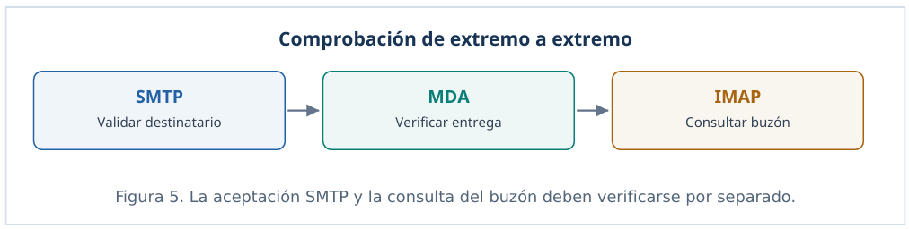
Pruebas funcionales
| Prueba | Resultado esperado |
|---|---|
| Autenticación válida de Ana | Acceso a su buzón |
| Autenticación con contraseña incorrecta | Acceso denegado |
| Envío a ana@empresa.example | Entrega en su buzón |
| Envío a a.garcia@empresa.example | Entrega en el mismo buzón |
| Envío a una dirección inexistente sin catch-all | Rechazo del destinatario cuando sea posible |
| Envío a una lista de dos miembros | Entrega a ambos destinos |
| Consulta de buzón ajeno sin delegación | Acceso denegado |
| Envío con alias no autorizado | Rechazo según política de presentación |
| Entrega que supera cuota | Aplicación del límite configurado |
| Restauración de un mensaje | Recuperación sin alterar otros mensajes |
Ejemplo de comprobación a nivel de protocolo
El siguiente diálogo SMTP es ilustrativo. C representa el cliente y S el servidor. Se supone que el alias está registrado y que el servidor valida los destinatarios durante la transacción.
S: 220 mail.empresa.example ESMTP
C: EHLO mail.centro.example
S: 250 mail.empresa.example
C: MAIL FROM:<pablo@centro.example>
S: 250 2.1.0 Sender OK
C: RCPT TO:<a.garcia@empresa.example>
S: 250 2.1.5 Recipient OK
C: RCPT TO:<inexistente@empresa.example>
S: 550 5.1.1 Recipient unknown
C: DATA
S: 354 End data with <CRLF>.<CRLF>
C: From: pablo@centro.example
C: To: a.garcia@empresa.example
C: Subject: Prueba de alias
C:
C: Mensaje de comprobacion.
C: .
S: 250 2.0.0 Message accepted
C: QUIT
S: 221 Bye
La aceptación de un destinatario y el rechazo de otro no impiden necesariamente continuar la transacción con el destinatario aceptado. El código 250 tras DATA indica que el servidor ha asumido responsabilidad por el mensaje, pero no demuestra por sí solo que ya esté disponible en el buzón. Se debe verificar posteriormente la entrega y consultar el buzón de Ana mediante un cliente autorizado.
Localización de una incidencia
Si el destinatario principal recibe correo pero su alias no, se comprueba primero la resolución del alias y la validación SMTP. Si ambos son aceptados, pero el mensaje no aparece en IMAP, se revisan la cola de entrega, la asociación al buzón, los permisos, la cuota y los registros del servicio. Se evita modificar varias configuraciones simultáneamente para poder identificar la causa.
Documentación de las pruebas
Conviene registrar el destinatario del sobre, el identificador del mensaje o de cola cuando esté disponible, la hora, la respuesta del servidor y el resultado observado en el buzón. No deben incluirse contraseñas ni datos personales innecesarios. Los resultados anteriores son esperados en un escenario ficticio; no corresponden a pruebas ejecutadas sobre servidores reales.
Referencias técnicas
- RFC 5321: Simple Mail Transfer Protocol.
- RFC 5322: Internet Message Format.
- RFC 4155: The application/mbox Media Type.
- RFC 9051: Internet Message Access Protocol (IMAP) - Version 4rev2.
- RFC 4314: IMAP4 Access Control List (ACL) Extension.
- RFC 9208: IMAP QUOTA Extension.
Seguridad y prevención del uso indebido del servicio de correo
Introducción a la seguridad del correo electrónico
El servicio de correo electrónico intercambia información entre organizaciones que no necesariamente mantienen una relación de confianza. Un servidor debe aceptar comunicaciones legítimas procedentes de otros dominios y, al mismo tiempo, impedir que terceros utilicen sus recursos para distribuir mensajes fraudulentos, saturar el sistema o acceder a buzones ajenos.
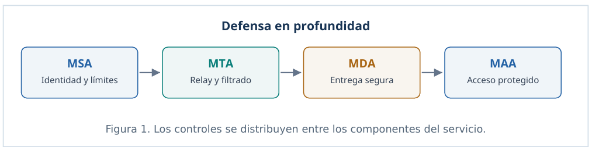
La seguridad debe contemplar tanto el transporte de los mensajes como su almacenamiento, el acceso de los usuarios y la administración del servicio. No existe una medida única capaz de resolver todos estos problemas. Se aplica el principio de defensa en profundidad: varias medidas independientes reducen la probabilidad y el impacto de una incidencia.
| Propiedad | Objetivo en el servicio de correo |
|---|---|
| Confidencialidad | Evitar la lectura no autorizada de mensajes y credenciales. |
| Integridad | Detectar o impedir alteraciones no autorizadas. |
| Disponibilidad | Mantener operativo el servicio ante fallos y abusos. |
| Autenticidad | Comprobar identidades o procedencia según el mecanismo utilizado. |
| Trazabilidad | Registrar acontecimientos relevantes para investigar incidencias. |
Superficies de exposición
El MTA receptor necesita admitir conexiones SMTP desde otros servidores. El MSA debe controlar quién puede presentar mensajes para su envío. El MAA debe proteger el acceso a los buzones y el MDA debe entregar únicamente a destinos autorizados. La consola de administración, el webmail, el almacenamiento y el directorio de usuarios constituyen superficies adicionales que requieren protección.
Seguridad en diferentes componentes
Ana, de empresa.example, envía un mensaje a Pablo, de centro.example. El servidor de envío autentica a Ana, limita su volumen de correo y protege su conexión con TLS. El receptor comprueba la procedencia del mensaje, analiza su contenido y lo entrega al buzón de Pablo. Pablo se autentica para consultarlo. Ninguna de estas comprobaciones sustituye a las demás.
Principales amenazas asociadas al servicio
Correo no deseado (Spam)
El spam consiste en mensajes no solicitados, habitualmente distribuidos de forma masiva. Puede contener publicidad, fraudes o enlaces maliciosos. También consume ancho de banda, espacio en disco, capacidad de procesamiento y tiempo de los usuarios. Una campaña puede proceder de servidores comprometidos, cuentas legítimas robadas o infraestructuras creadas para distribuir correo abusivo.
No todo correo masivo es spam: una lista de distribución solicitada puede enviar miles de mensajes legítimos. Por ello, los mecanismos de clasificación deben considerar el consentimiento, la reputación, el contenido y el comportamiento del emisor.
Suplantación de identidad (Spoofing)
SMTP permite indicar un remitente en el sobre y el formato de mensaje permite incluir una cabecera From. Estos valores no constituyen por sí solos una prueba de identidad. Un atacante puede presentar un nombre visible engañoso, declarar una dirección ajena o utilizar un dominio parecido al de una organización legítima.
| Elemento | Función | Riesgo |
|---|---|---|
| Nombre visible | Identificación presentada al lector | Puede imitar a una persona conocida. |
| From | Autor declarado en el mensaje | Puede contener una dirección suplantada. |
| MAIL FROM | Remitente del sobre SMTP | Puede utilizarse de forma fraudulenta para generar devoluciones. |
| Reply-To | Dirección sugerida para las respuestas | Puede desviar respuestas hacia otro destino. |
Los mecanismos SPF, DKIM y DMARC ayudan a comprobar determinados aspectos de la identidad de dominio. Se estudiarán en el capítulo siguiente. No garantizan que un mensaje sea honesto ni identifican necesariamente a la persona que lo ha redactado.
Phishing
El phishing intenta inducir al destinatario a realizar una acción perjudicial mediante engaño: revelar credenciales, abrir un archivo, visitar una página falsa o autorizar una operación económica. Puede aprovechar mensajes con apariencia profesional y cuentas legítimas comprometidas.
La protección combina análisis de enlaces y adjuntos, comprobaciones de autenticación, advertencias de mensajes externos y formación del usuario. Una petición sensible debe verificarse por un canal independiente conocido, incluso cuando el mensaje parezca proceder de un contacto habitual.
Distribución de software malicioso
El correo puede transportar archivos ejecutables, documentos con contenido activo o enlaces hacia descargas maliciosas. El peligro no se limita a una extensión concreta: un archivo comprimido puede contener otros archivos y una extensión puede no coincidir con el formato real del contenido. Las medidas incluyen análisis de archivos, restricciones sobre formatos de riesgo y aislamiento de contenidos sospechosos.
Ataques contra cuentas de usuario
Los ataques pueden consistir en intentos repetidos de contraseña, reutilización de credenciales filtradas o robo de sesiones. Una cuenta comprometida puede utilizarse para leer información confidencial, enviar spam autenticado o crear reglas de reenvío no autorizadas. Por ello, autenticar una cuenta no es suficiente para considerar legítimas todas sus acciones.
| Amenaza | Medida principal | Medidas complementarias |
|---|---|---|
| Spam | Clasificación y filtrado | Reputación, límites y autenticación de dominios |
| Spoofing | Autenticación de dominios | Validación de identidades de envío |
| Phishing | Análisis y formación | MFA y verificación independiente |
| Malware | Análisis de adjuntos | Aislamiento y actualizaciones |
| Robo de cuenta | Autenticación robusta | Límites, alertas y revisión de sesiones |
| Saturación | Límites de recursos | Monitorización y capacidad adecuada |
Autenticación y autorización de usuarios
La autenticación comprueba la identidad presentada por un usuario o servicio. La autorización determina qué operaciones puede realizar esa identidad una vez reconocida. Un usuario autenticado no tiene necesariamente permiso para enviar como cualquier dirección ni consultar todos los buzones.
SMTP AUTH utiliza mecanismos SASL para autenticar al cliente SMTP. Los servicios POP3 e IMAP también admiten mecanismos de autenticación. Un servicio puede utilizar credenciales propias o consultar un directorio centralizado. La comunicación de credenciales debe protegerse con TLS y las contraseñas almacenadas deben protegerse con técnicas adecuadas de derivación y hash, no conservarse en texto claro.
Autenticación multifactor
La autenticación multifactor (MFA) requiere factores independientes, como una contraseña y un dispositivo de posesión. Un código temporal TOTP generado por una aplicación autenticadora es un ejemplo de segundo factor. Dos contraseñas no constituyen dos factores distintos.
El webmail puede utilizar MFA mediante su sistema de inicio de sesión. Los protocolos de correo tradicionales no necesariamente permiten solicitar un código adicional durante cada conexión. En esos casos, una plataforma compatible puede utilizar tokens OAuth mediante mecanismos SASL o, cuando no exista una alternativa mejor, contraseñas específicas de aplicación revocables. Estas últimas no aportan por sí mismas MFA a cada conexión y deben tratarse como credenciales sensibles.
Identidad frente a permisos
Ana se autentica como ana@empresa.example. Puede enviar utilizando su dirección personal y un alias autorizado de administración, pero no como pablo@centro.example. El servidor comprueba por separado las credenciales y el permiso para utilizar la identidad de envío.
Control de acceso al servidor SMTP
El control de acceso SMTP se basa en las características de la conexión, la identidad autenticada, el destinatario y las políticas del servidor. Debe distinguirse la recepción de correo entre servidores del servicio de presentación de mensajes de los usuarios.
| Puerto TCP | Función habitual | Política general |
|---|---|---|
| 25 | Transferencia entre MTA | Aceptar correo para dominios atendidos; impedir retransmisión no autorizada. |
| 587 | Presentación de mensajes | Exigir autorización de envío y TLS antes de transmitir credenciales. |
| 465 | Presentación con TLS implícito | Establecer TLS desde el inicio y autenticar al cliente. |
El puerto no determina por sí solo la política: esta depende de la configuración efectiva. Los MTA externos que entregan correo a los dominios atendidos no suelen autenticarse con una cuenta de usuario local. Exigir SMTP AUTH indiscriminadamente en el puerto 25 impediría recibir correo legítimo de Internet.
Etapas de evaluación
El servidor puede evaluar la IP de origen al establecer la conexión, la identidad durante EHLO o AUTH, el remitente al recibir MAIL FROM y el destinatario al recibir RCPT TO. Las comprobaciones de contenido requieren recibir el mensaje mediante DATA o un mecanismo equivalente. Rechazar una solicitud durante la sesión SMTP permite informar al emisor sin aceptar un mensaje que no se desea entregar.
Servidores de retransmisión abierta (Open Relay)
Un servidor SMTP actúa como relay cuando acepta un mensaje para transferirlo hacia otro sistema. Esta función es legítima y necesaria en muchas arquitecturas. Un open relay es un servidor que permite a terceros no autorizados retransmitir correo hacia destinos externos.
Recibir un mensaje de un remitente externo para un destinatario local no constituye un open relay: es precisamente la función normal de un servidor receptor. El problema aparece cuando un cliente no autorizado utiliza el servidor como intermediario hacia otro dominio no atendido.
Las consecuencias incluyen consumo de recursos, acumulación de mensajes en las colas, degradación de la reputación de la IP y bloqueo de mensajes legítimos por otros servidores.
Recepción legítima frente a retransmisión indebida
El servidor mail.empresa.example acepta un mensaje de Pablo destinado a ana@empresa.example, porque atiende ese dominio. Si Pablo, sin autenticación ni otra autorización, intenta utilizar el mismo servidor para enviar hacia usuario@tercero.example, la retransmisión debe denegarse. El primer caso es recepción local y el segundo sería un abuso si se permitiera.
Restricciones de retransmisión de mensajes
Una política de retransmisión debe permitir las comunicaciones necesarias y denegar por defecto las demás. El servidor distingue los dominios de destino final, los dominios para los que actúa como intermediario autorizado y los destinos externos restantes.
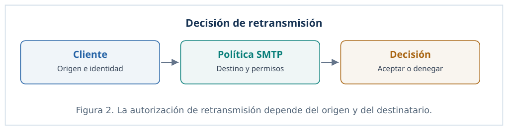
| Origen | Destinatario | Decisión conceptual |
|---|---|---|
| Externo no autenticado | Dominio local atendido | Admitir si supera las demás comprobaciones. |
| Externo no autenticado | Dominio externo no atendido | Denegar retransmisión. |
| Usuario autenticado y autorizado | Dominio externo | Permitir sujeto a límites y políticas. |
| MTA interno expresamente autorizado | Dominio externo | Permitir según su función y restricciones. |
| Usuario autenticado sin permiso de envío | Cualquier destino | Denegar la operación no autorizada. |
La confianza basada en IP debe limitarse a sistemas concretos y redes controladas; pertenecer a una LAN no convierte automáticamente a todos sus equipos en emisores de confianza. Una máquina infectada dentro de la red puede abusar de una autorización demasiado amplia.
Respuestas de rechazo
Una respuesta SMTP 5xx representa un fallo permanente para la solicitud realizada; una respuesta 4xx indica un fallo temporal. Por ejemplo, 550 5.7.1 Relay access denied puede expresar una denegación por política. El texto concreto depende de la aplicación. Un rechazo durante RCPT TO evita recibir el cuerpo del mensaje para ese destinatario.
Comprobación conceptual de la política de relay
En un laboratorio autorizado con dominios ficticios, se comprueba que un destinatario local se admite y que un destino externo se rechaza cuando el cliente carece de autorización. Después se repite la prueba con una cuenta autorizada. No es necesario enviar un mensaje real a terceros para verificar la decisión durante RCPT TO.
Limitación del número de conexiones y mensajes
Los límites protegen la disponibilidad y reducen el impacto de cuentas comprometidas o emisores abusivos. Deben considerar conexiones simultáneas, conexiones por intervalo de tiempo, mensajes, destinatarios por mensaje y volumen de datos. Se pueden aplicar por IP, cuenta, dominio o de forma global.
| Límite | Finalidad |
|---|---|
| Conexiones simultáneas | Proteger memoria, procesos y sesiones disponibles. |
| Conexiones por minuto | Reducir ráfagas de conexiones. |
| Mensajes por cuenta y periodo | Limitar el envío abusivo autenticado. |
| Destinatarios por mensaje | Evitar una expansión excesiva de una transacción. |
| Tiempo de inactividad | Liberar sesiones que no progresan. |
| Tamaño de cola | Proteger el almacenamiento y detectar congestión. |
Los umbrales deben ajustarse al uso normal. Una única IP puede representar numerosos usuarios detrás de NAT, por lo que un límite por IP demasiado estricto puede afectar a usuarios legítimos. Los límites temporales pueden producir respuestas 4xx para que los MTA emisores reintenten más tarde. No deben confundirse los límites operativos con la detección de spam.
Límite por cuenta
Una organización establece, como ejemplo didáctico, un máximo de 100 mensajes por hora y cuenta. Si Ana intenta presentar el mensaje 101 dentro del mismo intervalo, la política puede aplazar o rechazar el envío. No se trata de un valor universal: debe adaptarse al volumen habitual y a las cuentas de servicio autorizadas.
Restricciones sobre el tamaño de los mensajes y archivos adjuntos
El tamaño de un mensaje SMTP incluye cabeceras, cuerpo, partes MIME y codificación de transferencia. Un archivo adjunto binario codificado en Base64 aumenta aproximadamente un tercio antes de contar saltos de línea y cabeceras MIME. Por tanto, el tamaño máximo del archivo adjunto es inferior al tamaño máximo del mensaje.
La extensión ESMTP SIZE permite anunciar el límite de tamaño y declarar el tamaño estimado durante MAIL FROM. El receptor puede rechazar mensajes excesivos, incluso cuando el emisor no declaró su tamaño correctamente. Los límites del emisor, del receptor y de los intermediarios pueden ser diferentes.
También conviene limitar la profundidad de archivos comprimidos, el tamaño descomprimido y el tiempo de análisis. Un archivo pequeño puede expandirse hasta ocupar una cantidad considerable de almacenamiento. Las restricciones de tamaño son distintas de las cuotas del buzón, que limitan el almacenamiento acumulado del usuario.
Tamaño de un adjunto
Un archivo de 15 MB ocupa aproximadamente 20 MB al codificarse en Base64, sin contar las cabeceras ni los saltos de línea. Si el servidor admite mensajes de hasta 20 MB, el mensaje completo probablemente superará el límite. Se puede utilizar un archivo menor o un mecanismo autorizado de intercambio de archivos.
Sistemas de filtrado antispam
Un filtro antispam clasifica los mensajes a partir de múltiples señales. Puede utilizar reputación de IP y dominio, resultados SPF/DKIM/DMARC, patrones del contenido, enlaces, características de cabeceras y modelos estadísticos. En lugar de confiar exclusivamente en una palabra o en la dirección From, combina indicios de distinta naturaleza.
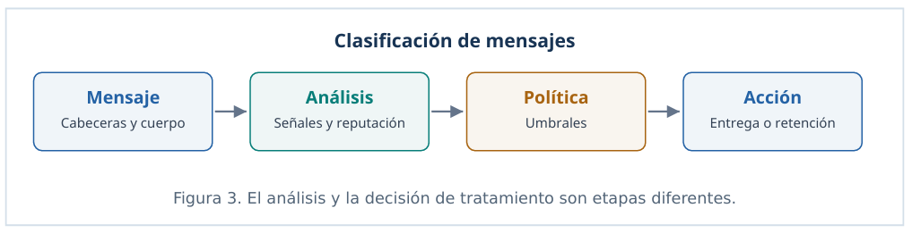
Clasificación por puntuación
Algunos filtros asignan puntuaciones a las señales detectadas y comparan el resultado con umbrales. Según la política, el mensaje puede entregarse normalmente, etiquetarse, enviarse a una carpeta de spam, ponerse en cuarentena o rechazarse. Otros filtros emplean modelos probabilísticos o clasificadores que no presentan una suma explícita de reglas.
| Acción | Efecto |
|---|---|
| Permitir | Entrega normal del mensaje. |
| Etiquetar | Añade una indicación de clasificación para reglas posteriores. |
| Carpeta de spam | Entrega en una carpeta separada accesible al usuario. |
| Cuarentena | Retiene el mensaje bajo una política de revisión. |
| Rechazar en SMTP | No acepta el mensaje; comunica el fallo al emisor. |
Clasificación ilustrativa
Un filtro asigna 3 puntos a un enlace sospechoso, 2 a una mala reputación y 1 a una anomalía de cabecera. El total es 6. Si la política establece cuarentena a partir de 5 puntos, el mensaje se retiene. Estas puntuaciones son ficticias y no corresponden a una aplicación concreta.
Falsos positivos y falsos negativos
Un falso positivo es un mensaje legítimo clasificado como spam. Un falso negativo es un mensaje abusivo que supera el filtro. Los umbrales estrictos pueden reducir los falsos negativos a costa de aumentar los falsos positivos. La revisión de cuarentena, el seguimiento de métricas y la adaptación de reglas permiten mejorar el equilibrio.
Greylisting
El greylisting consiste en aplazar temporalmente determinadas entregas desconocidas mediante una respuesta SMTP 4xx, esperando que un MTA legítimo reintente la operación. Puede reducir ciertos envíos automatizados, pero introduce retrasos y no detiene emisores abusivos que también reintentan. Su utilización debe valorar el impacto en la entrega normal.
Listas de bloqueo y listas de permitidos
Las listas de bloqueo identifican orígenes o destinos sujetos a restricciones. Las listas de permitidos establecen excepciones controladas. Pueden basarse en IP, dominios, cuentas autenticadas u otros atributos verificables. Una dirección From declarada no debería ser una prueba suficiente para excluir todas las comprobaciones de seguridad.
Una lista requiere definir su ámbito, responsable, fecha de revisión y procedimiento de retirada. Una excepción permanente puede convertirse en una vía de abuso si un proveedor cambia de infraestructura o una cuenta es comprometida.
Excepción limitada
Un proveedor legítimo genera falsos positivos. La organización ajusta únicamente la regla de clasificación que causa el problema para un origen verificado. Mantiene las comprobaciones antivirus, los límites de tamaño y las políticas de autenticación. La excepción se revisa periódicamente.
Listas de bloqueo basadas en DNS (DNSBL)
Una DNSBL permite consultar mediante DNS si una dirección IP aparece en una lista publicada por un operador. Algunas listas se orientan a fuentes de spam y otras a características de infraestructura o políticas de envío. Las listas de reputación de dominios utilizan mecanismos relacionados, pero no necesariamente el mismo formato de consulta.
En una DNSBL IPv4 habitual, los octetos de la IP se invierten y se añaden al dominio de la lista. Para la dirección de documentación 192.0.2.10, una consulta ficticia sería 10.2.0.192.dnsbl.example. Una respuesta A dentro de los códigos definidos por la lista puede indicar una coincidencia. NXDOMAIN normalmente indica ausencia de entrada, mientras que SERVFAIL o un tiempo de espera indican problemas de consulta, no una clasificación positiva.
El significado de los códigos y las condiciones de uso dependen del operador de la lista. Una coincidencia no demuestra que un mensaje concreto sea malicioso. Se recomienda valorar la calidad de la lista, su tasa de falsos positivos, los procedimientos de retirada y la posibilidad de utilizar el resultado como una señal en lugar de un bloqueo absoluto.
Interpretación de una consulta DNSBL
El servidor recibe una conexión desde 192.0.2.10 y consulta una lista ficticia. Obtiene una respuesta cuyo código, según las reglas de esa lista, indica mala reputación. El filtro añade una señal negativa. Si la consulta falla por un problema DNS, no debe interpretarlo automáticamente como una coincidencia.
Sistemas antivirus y análisis de archivos adjuntos
Los sistemas antivirus examinan mensajes y archivos adjuntos para detectar software malicioso. Pueden utilizar firmas conocidas, técnicas heurísticas, análisis del formato y evaluación del comportamiento en un entorno aislado. La inspección debe interpretar correctamente la estructura MIME y, dentro de límites seguros, los archivos comprimidos.
| Resultado | Tratamiento posible |
|---|---|
| Sin detecciones | Continuar con las demás comprobaciones. |
| Amenaza conocida | Rechazar o aislar según la política. |
| Contenido sospechoso | Cuarentena y revisión controlada. |
| Archivo cifrado no analizable | Aplicar política específica; no asumir que es seguro. |
| Error del analizador | Aplazar o retener según la política de disponibilidad y riesgo. |
Un antivirus no garantiza la ausencia de amenazas. Debe mantenerse actualizado y complementarse con restricciones de contenido, protección de equipos finales y formación. Si el análisis se realiza antes de aceptar definitivamente un mensaje, puede rechazarse durante SMTP. Si ya se ha aceptado, se requiere una gestión interna cuidadosa para evitar notificaciones de devolución a remitentes falsificados (backscatter).
Cifrado de las comunicaciones mediante TLS
TLS protege una conexión frente a la lectura y modificación por terceros durante el transporte y, cuando se valida correctamente la identidad del extremo, ayuda a prevenir la suplantación del servidor. Se sitúa por debajo del protocolo de aplicación: los comandos SMTP, POP3 e IMAP siguen existiendo dentro del canal cifrado.
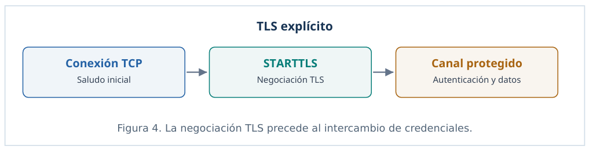
| Servicio | TLS explícito | TLS implícito |
|---|---|---|
| SMTP de presentación | STARTTLS, puerto 587 | Puerto 465 |
| SMTP entre MTA | STARTTLS, puerto 25 | No es la modalidad habitual en Internet |
| POP3 | STLS, puerto 110 | Puerto 995 |
| IMAP | STARTTLS, puerto 143 | Puerto 993 |
En TLS explícito, la conexión comienza con el protocolo de aplicación y se solicita la negociación TLS mediante un comando. En TLS implícito, la negociación TLS precede al diálogo de aplicación. La autenticación con credenciales sensibles debe producirse después de establecer un canal protegido.
TLS oportunista y TLS obligatorio
En la transferencia SMTP entre dominios se ha utilizado tradicionalmente TLS oportunista: se intenta cifrar si ambas partes lo permiten, pero según la política se puede continuar sin cifrado. Esto favorece la interoperabilidad, aunque no asegura la protección de todas las entregas y puede permitir ataques de degradación. MTA-STS y DANE permiten establecer políticas de seguridad de transporte más fuertes en determinados escenarios; se introducirán en el capítulo 8.
En el acceso de usuarios y la presentación de mensajes se debe exigir TLS y validar la identidad del servidor. Si no puede establecerse una conexión segura, el cliente no debería enviar credenciales ni continuar automáticamente en texto claro.
Fallo de negociación TLS
El cliente de Ana intenta acceder a su servidor IMAP con TLS obligatorio. La negociación falla por un certificado no válido. El acceso se detiene y se investiga la causa, en lugar de cambiar automáticamente a una conexión sin cifrar.
Certificados digitales en los servidores de correo
Un certificado digital vincula una clave pública con una identidad, normalmente uno o varios nombres DNS. Durante TLS el servidor demuestra la posesión de la clave privada correspondiente. El cliente comprueba la cadena de confianza, la vigencia y la coincidencia del nombre esperado con las identidades del certificado, normalmente en la extensión Subject Alternative Name (SAN).
| Elemento | Función |
|---|---|
| Clave privada | Permite demostrar la identidad criptográfica; debe mantenerse protegida. |
| Certificado del servidor | Presenta la clave pública y las identidades certificadas. |
| Certificados intermedios | Permiten construir una cadena hasta una autoridad de confianza. |
| Almacén de confianza | Contiene las autoridades aceptadas por el cliente. |
| SAN | Enumera los nombres para los que es válido el certificado. |
Una autoridad pública puede emitir certificados para nombres públicos verificables. En un laboratorio con nombres reservados .example puede utilizarse una autoridad privada cuya raíz se haya distribuido de forma segura a los clientes de prueba. Un certificado autofirmado no es automáticamente inseguro, pero requiere un mecanismo explícito y fiable para establecer la confianza.
La renovación debe planificarse antes de la caducidad. Un certificado válido no garantiza que el servidor esté libre de malware ni que el contenido del mensaje sea verdadero.
Nombre del certificado
Ana configura su cliente para conectar con mail.empresa.example. Si el certificado solo identifica web.empresa.example, la validación del nombre debe fallar. Que ambos nombres resuelvan a la misma IP no elimina esa diferencia de identidad.
Diferencias entre cifrado del transporte y cifrado de extremo a extremo
TLS protege cada conexión de manera independiente. Un mensaje puede viajar desde el cliente al servidor emisor, pasar por otros MTA y finalmente ser recuperado desde el servidor receptor. Cada tramo tiene su propia negociación TLS. Los sistemas intermedios pueden acceder al contenido en claro, según la arquitectura y el almacenamiento utilizado.
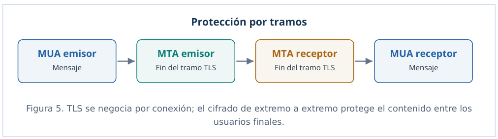
El cifrado de extremo a extremo protege el contenido desde el emisor hasta el destinatario autorizado. S/MIME y OpenPGP permiten cifrar contenido y utilizar firmas digitales. El cifrado y la firma son operaciones distintas: cifrar protege la confidencialidad y firmar permite comprobar la integridad y la relación con una clave de firma.
| Característica | TLS | Cifrado de extremo a extremo |
|---|---|---|
| Unidad protegida | Conexión | Contenido del mensaje |
| Extremos | Cliente y servidor, o dos servidores | Emisor y destinatario final |
| Lectura por intermediarios | Posible tras terminar TLS | Limitada si no tienen las claves de descifrado |
| Metadatos de encaminamiento | Protegidos en el tramo cifrado | Parte permanece visible para la entrega |
| Protección en el buzón | No por sí mismo | Sí para el contenido que permanece cifrado |
El cifrado de extremo a extremo dificulta el análisis del contenido por filtros intermedios. No sustituye a TLS, a la autenticación de dominios ni a las medidas de seguridad del equipo final. El cifrado de datos en reposo, por su parte, protege el almacenamiento frente a determinados accesos físicos o no autorizados, pero no es equivalente al cifrado de extremo a extremo.
Protección frente a ataques de fuerza bruta
La fuerza bruta intenta descubrir credenciales mediante múltiples intentos. El password spraying prueba pocas contraseñas frecuentes en muchas cuentas; el credential stuffing reutiliza combinaciones de usuario y contraseña obtenidas de otras filtraciones. Estas modalidades pueden distribuirse entre múltiples direcciones IP y pasar inadvertidas si solo se aplica un límite por origen.
La protección combina contraseñas únicas y robustas, MFA cuando sea compatible, limitación de intentos por cuenta y origen, retrasos progresivos, alertas y bloqueo temporal proporcional. Los bloqueos permanentes automáticos pueden facilitar ataques de denegación de servicio contra usuarios legítimos. Los registros deben permitir identificar patrones sin almacenar contraseñas ni tokens.
Respuesta ante una cuenta comprometida
Se debe contener el acceso, revocar sesiones y tokens, cambiar las credenciales, revisar los factores de autenticación y comprobar reglas de reenvío, mensajes enviados y permisos. A continuación se analiza el impacto, se recupera el servicio de forma controlada y se documenta el incidente. Cambiar únicamente la contraseña puede ser insuficiente si siguen activos tokens o sesiones anteriores.
Detección de comportamiento anómalo
La cuenta de Ana presenta un volumen de envío muy superior al habitual y numerosos destinatarios externos. El sistema limita temporalmente el envío y genera una alerta. El administrador verifica la situación con Ana y revisa las sesiones antes de restablecer el acceso normal.
Buenas prácticas de seguridad
La configuración debe basarse en el mínimo privilegio y en la separación de funciones. Se habilitan únicamente los servicios necesarios y se restringe el acceso administrativo. El sistema debe recibir actualizaciones, proteger las claves y credenciales, mantener copias de seguridad verificadas y aplicar políticas de retención adecuadas a las necesidades y obligaciones de la organización.
| Área | Práctica recomendada |
|---|---|
| SMTP | Restringir relay y validar las identidades autorizadas de envío. |
| Usuarios | Aplicar autenticación robusta y revocar accesos innecesarios. |
| Red | Exponer solo los puertos requeridos; aislar la administración. |
| Transporte | Exigir TLS donde corresponda y supervisar certificados. |
| Dominios | Implantar y verificar SPF, DKIM y DMARC. |
| Contenido | Combinar análisis antispam y antivirus. |
| Recursos | Limitar conexiones, mensajes, tamaños y cuotas. |
| Almacenamiento | Proteger buzones y realizar copias recuperables. |
| Monitorización | Revisar colas, errores, intentos de acceso y alertas. |
| Usuarios finales | Formar en phishing y canales de comunicación de incidencias. |
Los registros pueden contener direcciones de correo, IP y otra información personal. Deben limitarse a lo necesario, protegerse mediante controles de acceso y conservarse durante un periodo justificado. No deben incluir secretos ni contenidos completos por defecto.
Verificación de las medidas de protección
La verificación debe comprobar tanto los accesos permitidos como los denegados. Una medida que bloquea todo el tráfico no constituye una configuración correcta: debe conservarse la funcionalidad legítima. Las pruebas se realizan en un entorno autorizado, con cuentas y dominios de ejemplo, sin enviar spam ni archivos maliciosos reales a terceros.
Matriz de pruebas
| Prueba | Resultado esperado | Evidencia |
|---|---|---|
| SMTP externo hacia cuenta local válida | Aceptación si cumple las políticas | Respuesta SMTP y entrega |
| Relay externo no autorizado | Rechazo durante la sesión | Respuesta 5xx y registro |
| Envío autenticado autorizado | Aceptación | Registro de identidad y entrega |
| Envío con identidad no autorizada | Denegación | Respuesta y política aplicada |
| Acceso a buzón con credenciales incorrectas | Denegación | Registro sin secretos |
| Conexión de usuario sin TLS requerido | No admite credenciales en claro | Respuesta del protocolo |
| Certificado con nombre incorrecto | Fallo de validación | Diagnóstico TLS |
| Mensaje superior al límite | Rechazo conforme a política | Respuesta SMTP |
| Mensaje de prueba antispam | Clasificación según política | Etiqueta o cuarentena |
| Archivo de prueba antivirus inocuo | Detección según política | Registro del analizador |
| Superación de límite de envío | Restricción temporal o rechazo | Contador y registro |
| Mensaje legítimo de control | Entrega y acceso correctos | Buzón y registro |
Para probar filtros se pueden utilizar patrones de prueba reconocidos, como GTUBE para antispam y EICAR para antivirus, únicamente en un laboratorio controlado y siguiendo las indicaciones del responsable. No son necesarios virus reales ni campañas de correo masivo.
Interpretación de resultados
Se registran la fecha, el origen y destino de prueba, la política esperada, el resultado observado y las evidencias. Las respuestas SMTP permiten localizar la fase de rechazo; los registros y los identificadores de cola permiten correlacionar los acontecimientos. Si una comprobación falla, se modifica una variable cada vez, se repite la prueba y se verifica que no se han introducido regresiones.
Informe de una prueba de relay
Objetivo: comprobar que mail.empresa.example no retransmite mensajes externos sin autorización. Resultado esperado: rechazo de un destinatario externo durante RCPT TO. Resultado ilustrativo: 550 5.7.1 Relay access denied. Se registra el resultado y se realiza una prueba positiva con un destinatario local. Los resultados descritos son hipotéticos, no mediciones sobre servidores reales.
Relación con los criterios de evaluación
El criterio principal de este capítulo es CE5: aplicación de métodos para impedir usos indebidos del servidor. Se desarrollan los fundamentos necesarios para seleccionar y verificar controles de seguridad. También se relaciona con CE1 (protocolos y TLS), CE3 (protección del acceso a cuentas), CE6 (seguridad del acceso remoto) y CE7 (configuración segura de clientes). La implantación efectiva de los controles se reserva para los documentos prácticos posteriores.
Referencias técnicas para ampliar contenidos
- RFC 5321: Simple Mail Transfer Protocol.
- RFC 5322: Internet Message Format.
- RFC 4954: SMTP Service Extension for Authentication.
- RFC 3207: SMTP Service Extension for Secure SMTP over TLS.
- RFC 6409: Message Submission for Mail.
- RFC 8314: Cleartext Considered Obsolete — Use of TLS for Email Submission and Access.
- RFC 8446: The Transport Layer Security (TLS) Protocol Version 1.3.
- RFC 5782: DNS Blacklists and Whitelists.
Autenticación de dominios y sistemas de protección del correo
Problemática de la suplantación de dominios de correo
SMTP nació como protocolo de transferencia entre sistemas cooperantes. El hecho de que un servidor acepte un mensaje no demuestra que su autor esté autorizado a utilizar el dominio que figura en el campo From. Un atacante puede declarar una identidad de remitente que no le pertenece. Esta técnica se denomina spoofing y puede utilizarse para distribuir spam o realizar phishing.
Conviene distinguir tres identidades: el nombre presentado en EHLO, el dominio del remitente del sobre SMTP (MAIL FROM) y el dominio del autor visible (From). No tienen por qué coincidir. Por ejemplo, un proveedor de boletines puede gestionar las devoluciones en su propio dominio mientras el mensaje muestra la dirección de la empresa que lo contrató.
| Identidad | Ejemplo | Función |
|---|---|---|
| EHLO | mail.empresa.example | Identificación SMTP del equipo |
| MAIL FROM | rebotes@empresa.example | Dirección de retorno del sobre |
| From | ana@empresa.example | Autor visible del mensaje |
| DKIM d= | empresa.example | Dominio que firma el mensaje |
SPF, DKIM y DMARC permiten evaluar distintas evidencias relativas a los dominios. No autentican necesariamente a una persona ni garantizan que el contenido sea inocuo. Tampoco cifran el mensaje. Complementan la autenticación de usuarios, TLS y los filtros estudiados en el capítulo anterior.
Escenario común
Ana (ana@empresa.example) envía un mensaje a Pablo (pablo@centro.example). El MTA emisor utiliza la dirección IPv4 192.0.2.10 y el receptor 198.51.100.20. Los dominios .example y las direcciones de documentación son ficticios; las consultas y resultados de este capítulo representan un laboratorio, no servicios públicos reales.
Protocolo SPF (Sender Policy Framework)
Objetivos y funcionamiento
SPF permite al titular de un dominio declarar mediante DNS qué sistemas pueden utilizarlo como identidad de envío SMTP. El receptor compara la IP del cliente SMTP que se conecta directamente con la política del dominio del MAIL FROM. Si el sobre tiene remitente vacío, se utiliza la identidad HELO según las reglas del protocolo. También puede evaluarse HELO separadamente.
El receptor no necesita conocer la IP del ordenador de Ana: comprueba la IP del servidor que le está entregando el mensaje. SPF no verifica la cabecera From ni examina el cuerpo del correo.
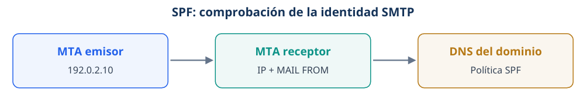
Estructura de los registros SPF
Se publica un registro TXT en el nombre del dominio evaluado. Debe existir como máximo una política SPF aplicable por nombre; otros TXT pueden coexistir. La evaluación comienza por v=spf1 y recorre los mecanismos en orden hasta encontrar una coincidencia o producir un error.
empresa.example. IN TXT "v=spf1 ip4:192.0.2.10 ip6:2001:db8::10 -all"
Esta política autoriza las dos direcciones indicadas. El mecanismo final -all indica que las demás no están autorizadas. El registro no obliga por sí mismo al receptor a aplicar una determinada acción sobre el mensaje.
Mecanismos y calificadores
| Mecanismo | Significado |
|---|---|
| ip4 / ip6 | Dirección o prefijo autorizado |
| a | Direcciones obtenidas mediante A o AAAA |
| mx | Direcciones de los servidores MX del dominio |
| include | Coincide si la política referenciada devuelve Pass |
| exists | Coincide si la consulta A del nombre construido tiene resultado |
| all | Coincide con cualquier dirección |
El modificador redirect= permite delegar la evaluación cuando ningún mecanismo ha coincidido. No equivale a include. El mecanismo ptr está desaconsejado. Los calificadores son + (Pass, por defecto), - (Fail), ~ (Softfail) y ? (Neutral).
Proveedor externo
Si una empresa utiliza un proveedor para enviar boletines, puede autorizarlo mediante v=spf1 ip4:192.0.2.10 include:envios.example -all, siempre que controle su propia política y el proveedor publique una política válida. El include no autoriza indiscriminadamente todos los servidores del proveedor: depende del resultado de su SPF.
Resultados de la validación
| Resultado | Interpretación |
|---|---|
| Pass | IP autorizada para la identidad evaluada |
| Fail | IP expresamente no autorizada |
| Softfail | Indicación débil de falta de autorización |
| Neutral | El dominio no afirma autorización ni rechazo |
| None | No existe política aplicable o identidad evaluable |
| Temperror | Error transitorio, por ejemplo DNS no disponible |
| Permerror | Error permanente de sintaxis o evaluación |
Evaluación de SPF
Con la política anterior sin include, la conexión desde 192.0.2.10 obtiene Pass y una desde 203.0.113.50 obtiene Fail. Aunque ambas declaren From: ana@empresa.example, SPF solo evalúa la identidad SMTP correspondiente. El receptor puede combinar el resultado con otras evidencias.
Limitaciones de SPF
Los mecanismos y modificadores que provocan consultas DNS están sujetos a un límite global de diez durante la evaluación, con restricciones adicionales para determinadas consultas. Superarlo puede producir Permerror. Una política excesivamente amplia, como +all, carece de utilidad para distinguir emisores autorizados.
El reenvío puede hacer que la IP observada sea la del reenviador, no la del emisor original. SPF también puede pasar para un dominio controlado por un atacante aunque la cabecera From muestre otro dominio. De ahí la necesidad de DMARC.
Protocolo DKIM (DomainKeys Identified Mail)
Objetivos y funcionamiento
DKIM permite asociar un mensaje a un dominio mediante una firma digital. Un sistema firmante utiliza una clave privada y el receptor consulta la clave pública correspondiente en DNS. Si la firma se verifica, las partes firmadas del mensaje conservan la integridad exigida por el algoritmo y la canonicalización utilizados.
No se cifra el cuerpo ni se demuestra que el usuario visible sea el propietario de la clave. Un dominio puede firmar mensajes de terceros. La firma puede sobrevivir al paso por servidores intermediarios si estos no alteran las partes protegidas.
Firma digital de mensajes
El firmante aplica canonicalización a las cabeceras seleccionadas y al cuerpo, calcula un resumen del cuerpo y genera la firma de las cabeceras pertinentes, incluida la propia cabecera DKIM con el valor de firma tratado según el protocolo. La canonicalización simple conserva más detalles; relaxed tolera determinadas variaciones de espacios y formato, no modificaciones arbitrarias del contenido.
| Etiqueta | Significado |
|---|---|
| v= | Versión de DKIM |
| a= | Algoritmo de firma |
| d= | Dominio firmante |
| s= | Selector de clave |
| c= | Canonicalización de cabeceras y cuerpo |
| h= | Cabeceras cubiertas por la firma |
| bh= | Resumen del cuerpo codificado en Base64 |
| b= | Firma digital codificada en Base64 |
DKIM-Signature: v=1; a=rsa-sha256;
d=empresa.example; s=correo2026;
c=relaxed/relaxed; h=from:to:subject:date;
bh=VALOR_ILUSTRATIVO; b=VALOR_ILUSTRATIVO
Los valores bh y b son marcadores didácticos, no firmas válidas. DKIM exige cubrir From; otras cabeceras pueden incluirse para protegerlas. La opción l= permite limitar la longitud del cuerpo firmado, pero reduce la protección y no se recomienda como diseño general.
Claves públicas y privadas
La clave privada permanece bajo control del sistema firmante. La pública se distribuye mediante DNS. En RSA se recomienda utilizar claves de al menos 2048 bits cuando sea viable; DKIM también admite Ed25519 mediante la extensión correspondiente. No debe confundirse esta firma de dominio con una firma personal S/MIME.
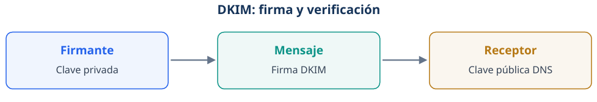
Selectores DKIM
El selector permite localizar distintas claves de un mismo dominio, por ejemplo para separar proveedores o facilitar rotaciones. Si d=empresa.example y s=correo2026, el nombre consultado es correo2026._domainkey.empresa.example.
Publicación de claves mediante DNS
correo2026._domainkey.empresa.example. IN TXT
"v=DKIM1; k=rsa; p=CLAVE_PUBLICA_BASE64"
La clave mostrada es un marcador. Un TXT largo puede dividirse en cadenas contiguas dentro de un mismo registro. La rotación debe mantener la clave anterior disponible mientras puedan llegar mensajes firmados con ella. Un valor p vacío indica revocación de la clave.
Verificación de firmas
El receptor recupera la clave pública, recalcula el resumen del cuerpo y verifica la firma sobre las cabeceras seleccionadas. Puede encontrar varias firmas en un mensaje y evaluar cada una de forma independiente. Una firma ausente, inválida o no verificable no equivale automáticamente a spam.
Alteración del mensaje
Si un intermediario añade un pie publicitario al cuerpo después de la firma, normalmente cambia el resumen y la verificación falla. Si simplemente añade una cabecera Received que no estaba firmada, la firma puede seguir siendo válida. La decisión depende de las partes cubiertas y la canonicalización.
Protocolo DMARC (Domain-based Message Authentication, Reporting and Conformance)
Objetivos y funcionamiento
DMARC relaciona el dominio del autor visible (RFC 5322 From) con las identidades autenticadas por SPF y DKIM. Permite publicar preferencias de tratamiento y solicitar informes. La especificación principal actual es RFC 9989 (mayo de 2026), que sustituye a RFC 7489 y RFC 9091. Los informes se especifican por separado en RFC 9990 y RFC 9991.
Alineación de dominios
Una evaluación DMARC satisfactoria requiere al menos una de estas vías: SPF válido y alineado con From, o una firma DKIM válida cuyo dominio d= esté alineado con From. No exige que ambas pasen. En modo estricto (s), los dominios deben coincidir exactamente. En modo relajado (r, predeterminado), se admite la coincidencia del dominio organizativo conforme al procedimiento de descubrimiento DNS de DMARC. No basta con compartir una terminación textual cualquiera.
| From | Identidad autenticada | Relajada | Estricta |
|---|---|---|---|
| empresa.example | empresa.example | Sí | Sí |
| empresa.example | avisos.empresa.example | Sí* | No |
| empresa.example | proveedor.example | No | No |
- Suponiendo que el dominio organizativo determinado sea empresa.example.
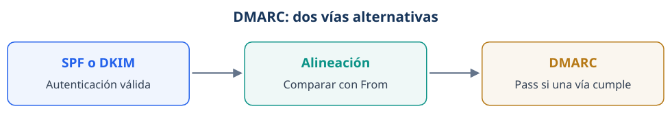
Políticas none, quarantine y reject
El registro TXT se publica en _dmarc del dominio. Ejemplo:
_dmarc.empresa.example. IN TXT
"v=DMARC1; p=none; rua=mailto:informes@empresa.example"
| Política | Preferencia del titular ante fallo DMARC |
|---|---|
| none | No solicita tratamiento específico por el fallo |
| quarantine | Solicita tratar el correo como sospechoso |
| reject | Solicita rechazar el correo |
El receptor conserva capacidad de decisión local; la política no garantiza una acción universal. Las etiquetas adkim y aspf permiten seleccionar modos de alineación; sp expresa preferencias para subdominios. La etiqueta histórica pct ya no forma parte de la especificación activa de RFC 9989. Puede aparecer en configuraciones antiguas.
Una transición prudente comienza con observación, inventario de emisores legítimos y revisión de informes; después se endurece la política cuando se han corregido los problemas. No se recomienda imponer reject sin conocer las fuentes legítimas.
Informes DMARC
Los informes agregados (rua) resumen resultados, fuentes IP y volúmenes; normalmente se intercambian como XML. Los informes de fallo (ruf), si el receptor los ofrece, pueden contener información de mensajes individuales y requieren especial atención a la privacidad. El envío a dominios externos puede requerir autorización DNS adicional.
Interpretación de un informe agregado
Un informe ficticio contiene 900 mensajes de 192.0.2.10 con autenticación alineada y 100 de 203.0.113.50 sin alineación. El administrador debe investigar la segunda fuente: podría tratarse de un proveedor legítimo no inventariado o de suplantación. El informe no demuestra por sí solo cuál de las dos explicaciones es correcta.
Funcionamiento conjunto de SPF, DKIM y DMARC
| SPF | DKIM | Alineación válida | DMARC |
|---|---|---|---|
| Pass | Fail | SPF | Pass |
| Fail | Pass | DKIM | Pass |
| Pass | Pass | Ninguna | Fail |
| Fail | Fail | Ninguna | Fail |
| Pass | Pass | Ambas | Pass |
La tabla simplifica los casos en los que existe política DMARC aplicable y no hay errores transitorios. La decisión de aceptación SMTP puede depender además de otras políticas independientes.
Mensaje legítimo y mensaje suplantado
Ana envía desde 192.0.2.10, con MAIL FROM ana@empresa.example y una firma d=empresa.example válida. Ambas vías se alinean con From y DMARC pasa. Otro emisor utiliza MAIL FROM avisos@proveedor.example y una firma válida de proveedor.example, pero muestra From ana@empresa.example. Aunque SPF y DKIM pasen para proveedor.example, ninguna identidad se alinea con el dominio visible y DMARC falla.
Limitaciones de estos mecanismos y problemas derivados del reenvío de correo
Un reenviador puede romper SPF al cambiar la IP del cliente SMTP. SRS (Sender Rewriting Scheme) modifica el remitente del sobre para facilitar la validación del dominio del reenviador, pero no garantiza alineación con el autor original. DKIM puede conservarse si las partes firmadas no cambian. Las listas de distribución que modifican el asunto o añaden texto pueden romper firmas DKIM. Algunas listas adaptan From y firman con su propio dominio, lo cual modifica la identidad visible.
ARC (Authenticated Received Chain, RFC 8617) permite transmitir evidencias de autenticación observadas por intermediarios. El receptor decide si confía en la cadena; ARC no convierte automáticamente un fallo DMARC en Pass.
Estos mecanismos no impiden el uso de dominios visualmente parecidos, nombres de presentación engañosos, cuentas legítimas comprometidas o enlaces fraudulentos. Por ello siguen siendo necesarios filtros de contenido, formación de usuarios y protección de cuentas.
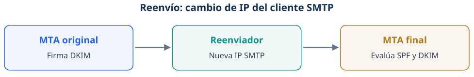
Protección del transporte SMTP: introducción a MTA-STS y DANE
STARTTLS oportunista puede ser insuficiente si un atacante activo consigue impedir la negociación TLS. MTA-STS y DANE permiten a los servidores emisores compatibles aplicar políticas de transporte más estrictas. A diferencia de SPF, DKIM y DMARC, protegen la conexión SMTP y no la identidad visible del autor.
MTA-STS
MTA-STS (RFC 8461) combina un TXT de descubrimiento con una política obtenida mediante HTTPS en el servidor mta-sts del dominio. Esta política identifica los MX admitidos, el modo (none, testing, enforce) y su vigencia. En enforce, un emisor compatible no debe entregar si no puede establecer TLS con un MX autorizado y certificado válido; la entrega puede quedar pendiente.
_mta-sts.centro.example. IN TXT "v=STSv1; id=20261125"
version: STSv1
mode: enforce
mx: mail.centro.example
max_age: 86400
La política se publica en https://mta-sts.centro.example/.well-known/mta-sts.txt. TLS-RPT (RFC 8460) permite solicitar informes de problemas de transporte. MTA-STS no elimina todos los riesgos de descubrimiento inicial ni protege el mensaje de extremo a extremo.
DANE para SMTP
DANE (RFC 7672) utiliza registros TLSA autenticados mediante DNSSEC para asociar el servicio SMTP con certificados o claves. Para el MX mail.centro.example se consulta _25._tcp.mail.centro.example. Un emisor compatible y con datos DNSSEC validados puede exigir TLS y comprobar la asociación publicada. Es imprescindible gestionar correctamente DNSSEC y las rotaciones de certificados.
| Aspecto | MTA-STS | DANE SMTP |
|---|---|---|
| Base de confianza | HTTPS y PKI pública | DNSSEC y TLSA |
| Descubrimiento | TXT y política HTTPS | DNSSEC y TLSA |
| Objeto protegido | Transporte entre MTA | Transporte entre MTA |
Reputación de servidores, direcciones IP y dominios
Los receptores combinan evidencias técnicas con señales de reputación: historial de spam, quejas, volúmenes anómalos, errores de entrega, coherencia DNS y comportamiento del emisor. Una IP compartida puede verse afectada por el comportamiento de otros usuarios. Una IP nueva puede carecer de historial.
La autenticación correcta no garantiza entrega en bandeja de entrada. Es necesario enviar mensajes solicitados, gestionar bajas, retirar destinatarios inválidos y vigilar los informes. La reputación se calcula mediante criterios propios de cada receptor y no existe una puntuación universal.
Verificación de los mecanismos de autenticación
Consultas DNS
Las siguientes consultas son ejemplos independientes del software servidor. Los dominios son ficticios y solo devolverían los resultados indicados en un entorno DNS de laboratorio configurado expresamente.
dig TXT empresa.example
dig TXT correo2026._domainkey.empresa.example
dig TXT _dmarc.empresa.example
dig TXT _mta-sts.centro.example
dig TLSA _25._tcp.mail.centro.example
Análisis de cabeceras
El receptor puede registrar sus verificaciones en Authentication-Results (RFC 8601). Deben interpretarse únicamente las cabeceras añadidas por sistemas de confianza: un emisor puede incluir cabeceras falsas.
Authentication-Results: mail.centro.example;
spf=pass smtp.mailfrom=empresa.example;
dkim=pass header.d=empresa.example;
dmarc=pass header.from=empresa.example
Matriz de pruebas
| Prueba de laboratorio | Resultado esperado |
|---|---|
| Emisor autorizado y firma alineada | SPF, DKIM y DMARC Pass |
| IP no autorizada, firma válida alineada | SPF Fail; DMARC Pass |
| Firma alterada, SPF válido alineado | DKIM Fail; DMARC Pass |
| Identidades válidas pero no alineadas | DMARC Fail |
| Dos políticas SPF en un nombre | SPF Permerror |
| Selector inexistente | Firma no verificable |
| Política MTA-STS enforce y TLS inválido | No entrega por emisor compatible |
Estas pruebas deben realizarse con sistemas propios y autorización. El resultado de autenticación no equivale a aceptación final, ni un mensaje aceptado garantiza que haya llegado a la bandeja de entrada.
Referencias normativas
- RFC 7208: SPF — https://www.rfc-editor.org/info/rfc7208
- RFC 6376, 8301 y 8463: DKIM y algoritmos criptográficos — https://www.rfc-editor.org/info/rfc6376
- RFC 9989, 9990 y 9991: DMARC e informes (2026) — https://www.rfc-editor.org/info/rfc9989
- RFC 8617: ARC — https://www.rfc-editor.org/info/rfc8617
- RFC 8461 y 8460: MTA-STS y TLS-RPT — https://www.rfc-editor.org/info/rfc8461
- RFC 7672: DANE SMTP — https://www.rfc-editor.org/info/rfc7672
- RFC 8601: Authentication-Results — https://www.rfc-editor.org/info/rfc8601
Servicios de acceso remoto a buzones
Arquitectura de los servicios de acceso remoto al correo
La recepción de un mensaje por SMTP y la consulta posterior por su destinatario son operaciones independientes. El MTA receptor acepta el mensaje y lo transfiere al agente de entrega (MDA), que lo deposita en el buzón correspondiente. El agente de acceso (MAA) permite al cliente (MUA) consultar ese buzón mediante POP3 o IMAP. El almacenamiento actúa como punto de encuentro entre ambos procesos: el destinatario no tiene que estar conectado en el momento de la entrega.
En el capítulo 3 se estudiaron los comandos y estados de los protocolos. En este capítulo interesa la perspectiva del servidor: qué recursos necesita, cómo se integra con el almacenamiento, qué parámetros ofrece y cómo se comprueba su funcionamiento. Un servicio de acceso no es necesariamente un equipo físico independiente; sus funciones pueden coexistir con SMTP en el mismo sistema o distribuirse entre varios servidores.
| Componente | Responsabilidad | Interfaz habitual |
|---|---|---|
| MTA | Recibir y transferir mensajes | SMTP |
| MDA | Entregar mensajes al buzón | LMTP o interfaz local |
| Almacén | Mantener mensajes y metadatos | Interfaz de almacenamiento |
| MAA | Autorizar y atender consultas | POP3 / IMAP |
| MUA | Presentar y gestionar mensajes | POP3 / IMAP / HTTPS |
Escenario común
Ana (ana@empresa.example) envía un mensaje a Pablo (pablo@centro.example). El MTA de mail.centro.example (198.51.100.20) recibe el mensaje, el MDA lo deposita en el buzón de Pablo y este lo consulta desde su cliente IMAP. Los nombres y direcciones son de documentación: no representan servidores públicos reales.
Arquitecturas centralizadas y distribuidas
En un entorno pequeño, un único servidor puede albergar el MTA, el MDA, el almacén y los servicios POP3 e IMAP. En organizaciones mayores, un frontal de acceso puede autenticar a los usuarios y dirigir sus conexiones al servidor que aloja sus buzones. Esta separación facilita el dimensionamiento independiente de la transferencia, el almacenamiento y las consultas, pero exige mantener coherencia entre las identidades, los permisos y la localización de los datos.
Un frontal de acceso no debe confundirse con un servidor MX secundario: este último recibe correo SMTP cuando corresponde, pero no ofrece necesariamente acceso a los buzones.
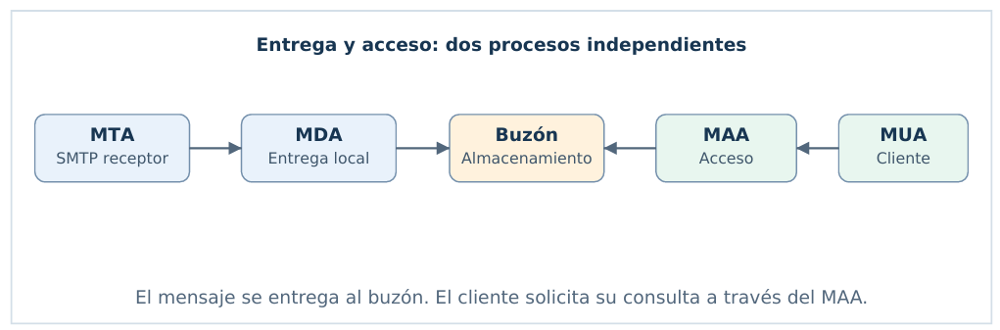
Criterios de selección del software servidor POP3 e IMAP
La selección comienza por identificar las necesidades de los usuarios. Si se requiere sincronización entre ordenadores y teléfonos, carpetas compartidas y búsqueda remota, IMAP será normalmente la opción adecuada. POP3 puede tener sentido en aplicaciones que recuperan mensajes para procesarlos localmente. No es obligatorio habilitar ambos servicios.
| Criterio | Pregunta que debe resolverse |
|---|---|
| Compatibilidad | ¿Qué versiones y extensiones de los protocolos necesitan los clientes? |
| Almacenamiento | ¿Es compatible con el formato y la ubicación de los buzones? |
| Identidad | ¿Admite el directorio o base de usuarios existente? |
| Seguridad | ¿Admite TLS, autenticación segura y restricciones de acceso? |
| Rendimiento | ¿Cuántas conexiones y operaciones simultáneas soporta? |
| Administración | ¿Permite aplicar cuotas, permisos y consultar registros? |
| Continuidad | ¿Cómo se realizan copias, actualizaciones y recuperación? |
| Interoperabilidad | ¿Puede integrarse con el MDA y con el cliente web? |
Una extensión anunciada por el servidor no garantiza que el cliente la utilice. La compatibilidad debe comprobarse en ambos extremos. También deben considerarse el mantenimiento del software y la posibilidad de aplicar actualizaciones de seguridad.
Selección para un centro educativo
El alumnado accede al correo desde varios dispositivos; el profesorado necesita carpetas compartidas. Se selecciona IMAP con TLS, autenticación centralizada y permisos por buzón. POP3 permanece deshabilitado mientras no exista una necesidad justificada.
Componentes y requisitos de los servicios de acceso a buzones
Componentes funcionales
El servicio requiere un proceso de escucha que acepte conexiones, un mecanismo de autenticación, una fuente de información de cuentas, un acceso al almacenamiento y mecanismos de registro y control de recursos. El servicio puede utilizar índices para acelerar búsquedas y conservar metadatos como identificadores, marcas y tamaños.
El subsistema de autenticación comprueba las credenciales; el subsistema de autorización determina el buzón y las operaciones permitidas. Un inicio de sesión válido no implica que se pueda abrir cualquier buzón del sistema.
Recursos y dependencias
La memoria depende del número de sesiones y de las operaciones pendientes. La CPU se utiliza, entre otras tareas, en TLS, búsqueda e indexación. El almacenamiento debe proporcionar capacidad, latencia y operaciones de entrada/salida suficientes. Además de los mensajes, hay que prever índices, metadatos, espacio temporal y copias de seguridad.
Estimación de capacidad
Para 200 cuentas con una cuota máxima de 2 GB, el máximo teórico asignado es 400 GB. Si se reserva un 25 % adicional sobre esa cifra para crecimiento y metadatos, se obtienen 500 GB de capacidad útil orientativa. Las copias de seguridad se dimensionan aparte. Una cuota no equivale a espacio previamente ocupado; el consumo real depende de los mensajes almacenados.
El servicio depende también de la resolución de nombres, la disponibilidad de la fuente de identidades, la sincronización horaria y la validez de certificados. Una caída del directorio puede impedir iniciar nuevas sesiones aunque el almacenamiento siga disponible.
Integración con el servidor SMTP y el agente de entrega local
El servidor SMTP determina si el destinatario corresponde a un dominio que atiende y resuelve la dirección hacia una cuenta o un destino autorizado. El MDA realiza la entrega final y puede aplicar reglas de clasificación, cuotas o filtros. El MAA accede posteriormente al mismo almacenamiento lógico.
La interfaz entre el MTA y el MDA puede ser una llamada local o un protocolo como LMTP (Local Mail Transfer Protocol). LMTP permite comunicar el resultado de la entrega para cada destinatario después de recibir el contenido del mensaje. No se trata de un protocolo de consulta de buzones.
| Operación | Responsable | Resultado |
|---|---|---|
| Aceptación SMTP | MTA | Mensaje aceptado bajo responsabilidad del servidor |
| Resolución del destinatario | MTA / directorio | Identidad o destino de entrega |
| Entrega final | MDA | Mensaje almacenado o error de entrega |
| Consulta | MAA | Mensajes y metadatos disponibles al usuario |
La aceptación SMTP no garantiza que el mensaje ya esté visible en IMAP. Puede permanecer en una cola si el almacén no está disponible o si existe un error temporal de entrega. Un error permanente posterior a la aceptación puede generar una notificación de estado de entrega, según las circunstancias.
SMTP funciona, pero el mensaje no aparece
El MTA devuelve 250 tras aceptar un mensaje para Pablo. Sin embargo, el almacenamiento está temporalmente inaccesible. El administrador debe comprobar la cola y el resultado del MDA antes de atribuir el problema a IMAP. Una vez restaurada la entrega, el mensaje podrá aparecer en el buzón.
Consistencia del almacenamiento
Los agentes de entrega y acceso deben coincidir en la ubicación del buzón, el formato, la identidad efectiva y las reglas de permisos. En almacenes compartidos deben utilizar mecanismos compatibles de bloqueo o concurrencia. En un formato como Maildir, la entrega mediante archivos temporales y su publicación posterior evita que el lector vea un mensaje parcialmente escrito; en otros formatos se requieren mecanismos equivalentes.
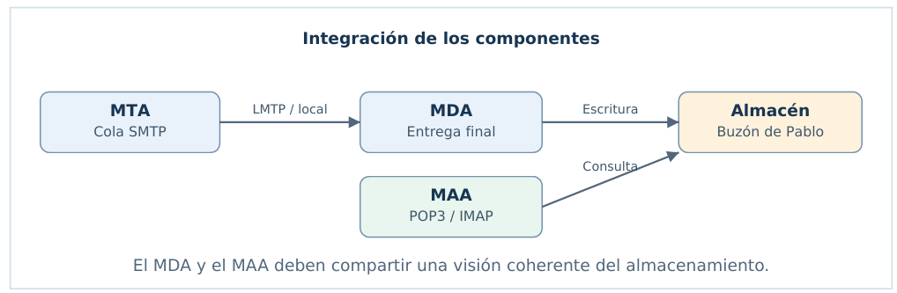
Parámetros generales de acceso a los buzones de usuario
Los parámetros de configuración describen la relación entre la identidad autenticada y los recursos a los que puede acceder. No dependen necesariamente del sistema operativo utilizado.
| Parámetro | Significado | Ejemplo conceptual |
|---|---|---|
| Identificador de acceso | Nombre usado para autenticarse | pablo@centro.example |
| Ubicación lógica | Destino de almacenamiento | Buzón de Pablo |
| Formato | Organización física de mensajes | Maildir, Mbox o almacén propio |
| Permisos | Operaciones autorizadas | Lectura, escritura, borrado |
| Cuota | Límite de almacenamiento | 2 GB |
| Espacio de nombres | Organización visible de carpetas | Personal y compartido |
| Política de acceso | Condiciones para conectarse | TLS obligatorio |
La dirección de correo, el nombre de inicio de sesión y el identificador interno del buzón pueden ser diferentes. Un alias de recepción no tiene por qué permitir autenticación. Las carpetas visibles en IMAP tampoco tienen que corresponder exactamente a directorios físicos del sistema.
Permisos y cuotas
La autorización se aplica a cada operación: leer mensajes, añadirlos, modificar marcas, eliminar o administrar carpetas. Un buzón compartido puede conceder lectura a un usuario y escritura a otro. La cuota puede limitar bytes, número de mensajes u otros recursos según la plataforma. Al superar el límite, pueden fallar tanto nuevas entregas como operaciones IMAP que aumenten el almacenamiento, por ejemplo APPEND o una copia a otra carpeta. La política concreta debe documentarse.
Buzón compartido
La dirección secretaria@centro.example corresponde a un buzón compartido. Pablo puede leerlo y otra usuaria puede responder y archivar mensajes. Cada persona se autentica con su propia identidad; no es necesario compartir una contraseña.
Características y parámetros del servicio POP3
POP3 ofrece una vista de recuperación de mensajes, normalmente de la bandeja de entrada, sin el modelo general de carpetas y sincronización de IMAP. El servidor proporciona el listado de mensajes y permite recuperarlos o marcarlos para eliminación durante la sesión.
| Parámetro o capacidad | Finalidad |
|---|---|
| Identificadores UIDL | Reconocer mensajes ya descargados entre sesiones |
| Política de conservación | Determinar reglas del servidor sobre retención |
| Límites de sesión | Controlar duración, inactividad y conexiones |
| Autenticación | Validar la identidad del usuario |
| TLS | Proteger credenciales y mensajes en tránsito |
| Bloqueo de buzón | Evitar modificaciones incompatibles durante la transacción |
UIDL es una capacidad definida en POP3 que puede utilizarse si el servidor la ofrece; no equivale a un identificador global del mensaje. Los clientes suelen conservar un registro local de identificadores para evitar descargas repetidas.
La eliminación no se produce simplemente al ejecutar RETR. El cliente puede solicitar DELE y, en una finalización normal mediante QUIT desde el estado TRANSACTION, el servidor entra en UPDATE y aplica las eliminaciones correspondientes. Si la sesión termina de forma anormal, no debe aplicar esas eliminaciones solicitadas en la transacción.
Conservar copias en el servidor
Pablo descarga tres mensajes mediante POP3 y configura su cliente para no borrarlos. El cliente recupera el contenido y registra sus UIDL, sin enviar DELE para esos mensajes. Otro dispositivo puede recuperarlos también, siempre que sigan disponibles. Las marcas locales de lectura no se sincronizan mediante POP3.
Características y parámetros del servicio IMAP
IMAP permite operar sobre el estado del buzón remoto. El cliente puede consultar carpetas, buscar mensajes, descargar partes del contenido y modificar marcas. Los datos conservados localmente por el cliente suelen actuar como caché o como copia para trabajo sin conexión.
| Parámetro o capacidad | Finalidad |
|---|---|
| Espacios de nombres | Distinguir carpetas personales, compartidas y públicas |
| Suscripciones | Determinar qué carpetas se muestran en determinados clientes |
| ACL | Controlar permisos sobre carpetas y buzones |
| UID / UIDVALIDITY | Mantener la correspondencia entre mensajes y caché |
| IDLE | Recibir avisos de cambios mientras la sesión espera |
| Cuotas | Consultar o aplicar límites según las capacidades disponibles |
| Índices | Facilitar búsquedas y acceso eficiente a metadatos |
No todas las extensiones están disponibles en todos los servidores. El comando CAPABILITY permite conocer las capacidades anunciadas. Los identificadores UID se interpretan dentro de una carpeta y de su valor UIDVALIDITY. Si cambia UIDVALIDITY, el cliente debe invalidar las asociaciones anteriores de UID para esa carpeta.
Sincronización y concurrencia
Cuando dos dispositivos acceden simultáneamente a una cuenta, una modificación del estado remoto puede reflejarse en ambos. Por ejemplo, la marca de leído o la eliminación de un mensaje puede propagarse al siguiente refresco. Los clientes deben procesar las respuestas del servidor y no asumir que los números de secuencia permanecen constantes durante toda una conexión.
Acceso desde dos dispositivos
Pablo abre INBOX desde un ordenador y un teléfono. En el ordenador marca un mensaje como leído. El servidor conserva la marca \Seen; el teléfono puede conocer el cambio al sincronizar. Si se elimina definitivamente el mensaje en el servidor, el otro cliente también deberá actualizar su vista. Una caché sincronizada no sustituye a una copia de seguridad independiente.
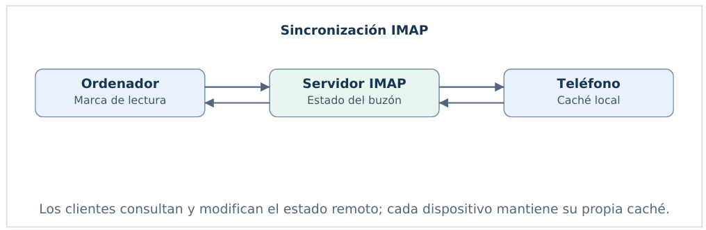
Mecanismos de autenticación de usuarios
El servicio debe verificar la identidad antes de conceder acceso al buzón. La autenticación puede utilizar contraseñas o mecanismos SASL basados en otros tipos de credenciales, según las capacidades del cliente y el servidor. La autorización es una comprobación posterior e independiente.
| Mecanismo | Consideración |
|---|---|
| Usuario y contraseña | Deben transmitirse exclusivamente por un canal protegido |
| SASL PLAIN | Codifica las credenciales, no las cifra; requiere TLS |
| SCRAM | Mecanismo de desafío-respuesta; requiere soporte compatible |
| OAuth 2.0 mediante SASL | Usa tokens de acceso con alcance y vigencia definidos |
| Certificado de cliente | Identidad basada en certificado, si la infraestructura lo admite |
El comando LOGIN de IMAP y los comandos USER/PASS de POP3 no deben utilizarse sobre conexiones sin protección. El hecho de que una contraseña se represente en Base64 no la hace confidencial. En la base de identidades se deben emplear mecanismos de almacenamiento de credenciales adecuados al método de autenticación, evitando conservar contraseñas en texto claro.
Autenticación centralizada y multifactor
La identidad puede validarse mediante un directorio, una base de cuentas o un proveedor de identidad. Si se aplica MFA, un cliente web puede solicitar un segundo factor durante el inicio de sesión. Los clientes IMAP y POP3 tradicionales no tienen un flujo universal para introducir códigos TOTP; algunos servicios utilizan tokens OAuth obtenidos mediante una autenticación multifactor previa o contraseñas de aplicación cuando la política las permite. Estas últimas son credenciales específicas, no un segundo factor en cada conexión.
Revocación de acceso
Un empleado pierde su teléfono. La organización revoca sus tokens o credenciales de aplicación y revisa las sesiones activas. Cambiar la contraseña principal no garantiza, por sí solo, que todos los tokens o sesiones existentes se invaliden inmediatamente.
Integración con usuarios del sistema y usuarios virtuales
Los usuarios del sistema son identidades reconocidas por el sistema operativo. Los usuarios virtuales se gestionan en una fuente de identidades propia del servicio, un directorio o una base de datos. Su existencia no requiere crear una cuenta de inicio de sesión en el equipo servidor.
En un modelo virtual, varios buzones pueden estar gestionados físicamente por una identidad técnica del servicio. El aislamiento entre usuarios debe garantizarse mediante autorización, permisos y separación lógica. La correspondencia entre identidad, dominio y ubicación de buzón debe ser inequívoca.
| Aspecto | Usuarios del sistema | Usuarios virtuales |
|---|---|---|
| Fuente de identidad | Sistema operativo o identidad integrada | Base de cuentas o directorio del servicio |
| Acceso al equipo | Puede existir, según política | No es necesario |
| Múltiples dominios | Requiere planificación de nombres | Identidad completa por dominio habitual |
| Almacenamiento | Asociado a la identidad del sistema | Asignado por reglas del servicio |
Dos usuarios con el mismo nombre
pablo@empresa.example y pablo@centro.example pueden coexistir en una plataforma que aloje ambos dominios. El servicio debe distinguirlos mediante su identidad completa o un identificador interno único. Utilizar exclusivamente pablo podría provocar ambigüedad si no se establece un dominio por defecto.
Al desactivar una cuenta se debe decidir qué sucede con las sesiones, la entrega SMTP, los alias y los datos conservados. Deshabilitar el acceso no equivale necesariamente a borrar el buzón ni a rechazar futuras entregas.
Puertos y comunicaciones seguras
Los servicios de acceso remoto utilizan TCP. El cifrado puede establecerse desde el inicio de la conexión (TLS implícito) o negociarse posteriormente mediante un comando del protocolo. En ambos casos el cliente debe comprobar la identidad del servidor mediante su certificado y no continuar con credenciales si el establecimiento seguro falla.
| Servicio | Puerto TCP | Modalidad |
|---|---|---|
| POP3 | 110 | STLS si está disponible y se negocia |
| POP3 con TLS implícito | 995 | TLS antes del diálogo POP3 |
| IMAP | 143 | STARTTLS si está disponible y se negocia |
| IMAP con TLS implícito | 993 | TLS antes del diálogo IMAP |
| Webmail | 443 | HTTPS entre navegador y aplicación web |
| Envío de correo | 465 / 587 | SMTP submission, no acceso a buzones |
Para acceso de usuarios se recomienda TLS implícito o una política de negociación TLS obligatoria, nunca la degradación automática a texto claro. La protección de un tramo no implica que todos los demás estén protegidos: un webmail puede recibir HTTPS y utilizar otra conexión independiente hacia IMAP.
El certificado debe corresponder al nombre de servicio utilizado por el cliente, estar vigente y encadenar a una autoridad de confianza. La apertura de un puerto en un cortafuegos no comprueba estas condiciones ni garantiza que el servicio esté escuchando.
Nombre y certificado
Pablo configura mail.centro.example como servidor IMAP en el puerto 993. Si el certificado solo identifica mail.empresa.example, la conexión no debe considerarse autenticada correctamente aunque la contraseña sea válida y el puerto responda.
Gestión de sesiones y conexiones simultáneas
Una cuenta puede mantener varias sesiones IMAP abiertas desde distintos dispositivos. Algunas aplicaciones incluso utilizan varias conexiones por dispositivo para realizar operaciones concurrentes. Los límites se establecen por usuario, dirección IP, servicio o capacidad total, y deben evitar tanto el abuso como la interrupción injustificada de clientes legítimos.
Los tiempos de espera permiten liberar recursos de sesiones inactivas. Deben tener en cuenta las reglas del protocolo y las necesidades de clientes que utilizan IDLE. POP3 puede necesitar acceso exclusivo al buzón durante determinadas operaciones; si no se puede obtener el bloqueo necesario, el servidor debe tratar el error de forma coherente.
| Indicador | Interpretación |
|---|---|
| Sesiones activas | Concurrencia instantánea |
| Autenticaciones fallidas | Posible error de credenciales o abuso |
| Latencia de consulta | Tiempo para listar, buscar o recuperar mensajes |
| Uso de memoria | Presión de conexiones y operaciones |
| Latencia de almacenamiento | Posible cuello de botella del buzón |
| Errores de cuota | Operaciones rechazadas por límites |
Estimación de concurrencia
Si 120 usuarios mantienen dos conexiones IMAP cada uno en promedio, se estiman 240 conexiones simultáneas. Con una reserva del 25 %, el objetivo orientativo sería 300. Es una hipótesis de dimensionamiento, no un límite universal ni una medición real. Se debe comprobar el comportamiento bajo carga.
Una desconexión no implica pérdida de correo almacenado. No obstante, una operación interrumpida puede requerir que el cliente vuelva a consultar el estado del buzón para determinar si llegó a completarse.
Arquitectura e integración de aplicaciones webmail
Webmail es una aplicación que actúa como cliente de correo y ofrece una interfaz mediante navegador. No es un sustituto conceptual de SMTP o IMAP. Habitualmente utiliza HTTPS con el navegador, IMAP para consultar buzones y SMTP submission para enviar mensajes; algunas plataformas integradas utilizan interfaces internas o API equivalentes.
| Tramo | Protocolo habitual | Función |
|---|---|---|
| Navegador - webmail | HTTPS | Interfaz de usuario |
| Webmail - servicio de acceso | IMAP con TLS | Lectura y gestión de correo |
| Webmail - servicio de envío | SMTP submission con TLS | Presentación de mensajes |
| Servicio de acceso - almacén | Interfaz interna | Lectura y modificación de datos |
El webmail administra sesiones web, cookies, protección frente a solicitudes falsificadas y presentación segura del contenido HTML. Debe controlar la carga de recursos externos, los adjuntos y el acceso a credenciales o tokens. Al cerrar sesión debe invalidar la sesión web de acuerdo con su política; cerrar la pestaña no siempre equivale a cerrar sesión.
Acceso desde un navegador
Pablo entra en https://webmail.centro.example, inicia sesión y selecciona un mensaje. La aplicación consulta el buzón mediante IMAP. Al redactar una respuesta, la presenta al servicio SMTP. El navegador no necesita implementar los protocolos IMAP ni SMTP directamente.
Publicación del servicio
Se puede publicar exclusivamente HTTPS para webmail y restringir IMAP a la red interna que utiliza la aplicación. Si se necesita acceso mediante clientes de escritorio o móviles desde Internet, será necesario ofrecer también los servicios correspondientes o proporcionar un acceso privado autorizado. Cada decisión modifica la superficie de exposición y los requisitos de seguridad.
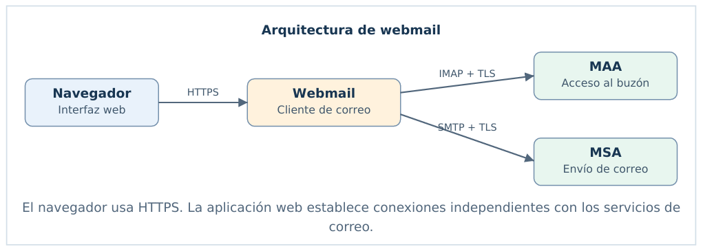
Verificación del acceso remoto a los buzones
La verificación debe recorrer las capas de comunicación y las funciones del servicio. Una prueba positiva de conectividad TCP no demuestra que el usuario pueda autenticarse ni que los mensajes sean accesibles. Conviene utilizar cuentas y mensajes de prueba en un entorno autorizado.
Procedimiento de comprobación
| Fase | Comprobación | Resultado esperado |
|---|---|---|
| Resolución | Nombre del servidor | Dirección prevista |
| Transporte | Conexión al puerto | Servicio accesible |
| TLS | Certificado y negociación | Canal seguro y servidor identificado |
| Protocolo | Saludo y capacidades | Respuesta coherente con POP3 o IMAP |
| Identidad | Credencial válida e inválida | Aceptación y rechazo respectivos |
| Autorización | Acceso a buzón propio y ajeno | Acceso conforme a permisos |
| Entrega | Mensaje de prueba mediante SMTP | Aparición en buzón correcto |
| Sincronización | Cambios desde dos clientes IMAP | Estado remoto coherente |
| Webmail | Consulta y envío | Operaciones correctas en ambos servicios |
Prueba IMAP conceptual
Tras establecer TLS y validar el certificado, un cliente envía los siguientes comandos. Las respuestas son ilustrativas y se omite el intercambio de autenticación por seguridad.
S: * OK Servicio IMAP preparado
C: a1 CAPABILITY
S: * CAPABILITY IMAP4rev1 AUTH=PLAIN IDLE
S: a1 OK CAPABILITY completed
... autenticación satisfactoria ...
C: a2 SELECT INBOX
S: * 3 EXISTS
S: * 0 RECENT
S: * OK [UIDVALIDITY 42] UIDs valid
S: * FLAGS (\Seen \Answered \Flagged \Deleted \Draft)
S: a2 OK [READ-WRITE] SELECT completed
C: a3 LOGOUT
S: * BYE Closing connection
S: a3 OK LOGOUT completed
El saludo confirma la disponibilidad del protocolo; SELECT confirma que, una vez autenticado, el usuario puede abrir INBOX. El ejemplo no demuestra que SMTP pueda entregar mensajes nuevos ni que todos los permisos sean correctos.
Diagnóstico de incidencias frecuentes
| Síntoma | Posibles causas |
|---|---|
| Tiempo de espera al conectar | Red, filtrado o servicio inaccesible |
| Conexión rechazada | Puerto sin escucha o rechazo explícito |
| Error de certificado | Nombre incorrecto, caducidad o confianza insuficiente |
| Autenticación rechazada | Credencial, cuenta desactivada o mecanismo incompatible |
| Buzón vacío pese a entrega SMTP | Cola pendiente, destino incorrecto o almacén distinto |
| No se puede crear una carpeta | Permisos, cuota o limitaciones del almacén |
| Mensajes duplicados en POP3 | Registro UIDL perdido o comportamiento del cliente |
| Webmail recibe pero no envía | Fallo del servicio SMTP submission o su autenticación |
La revisión de registros debe correlacionar fechas, identificadores de sesión, identidad y resultado, evitando registrar contraseñas o contenidos innecesarios. Para comprobar la integración se recomienda utilizar mensajes de prueba con un asunto único y registrar la aceptación SMTP, la entrega al buzón y su lectura mediante el cliente.
Referencias técnicas
- RFC 1939: Post Office Protocol, versión 3.
- RFC 9051: Internet Message Access Protocol (IMAP4rev2).
- RFC 3501: IMAP4rev1 (especificación histórica, todavía presente en implementaciones).
- RFC 8314: Uso de TLS para acceso y presentación de correo.
- RFC 2033: Local Mail Transfer Protocol.
- RFC 4422: Simple Authentication and Security Layer (SASL).
- RFC 7628: Mecanismos SASL para OAuth.
- RFC 2177: Extensión IMAP IDLE.
Clientes de correo electrónico
Concepto y funciones de un cliente de correo electrónico
Un cliente de correo electrónico o MUA (Mail User Agent) es una aplicación que permite al usuario redactar, enviar, consultar y organizar mensajes. Constituye la interfaz entre la persona y el sistema de correo. No debe confundirse con el MTA, que transfiere mensajes entre servidores, ni con el MAA, que proporciona acceso al buzón remoto.
El cliente realiza normalmente dos conexiones independientes: una con el servicio de presentación de mensajes (MSA), mediante SMTP, y otra con el servicio de acceso al correo (MAA), mediante IMAP o POP3. Una aplicación webmail puede desempeñar estas funciones en nombre del usuario, cuyo navegador se comunica con ella mediante HTTPS.
| Función | Operación habitual |
|---|---|
| Redacción | Construir cabeceras, cuerpo y adjuntos MIME |
| Envío | Presentar un mensaje al MSA mediante SMTP |
| Recepción | Consultar el buzón mediante IMAP o recuperar mensajes mediante POP3 |
| Organización | Clasificar mensajes en carpetas, etiquetas o vistas |
| Búsqueda | Localizar mensajes por remitente, fecha o contenido |
| Seguridad | Validar certificados, autenticar al usuario y advertir sobre contenidos peligrosos |
El cliente puede mantener una caché local para trabajar sin conexión. Los mensajes pendientes de envío permanecen en una bandeja de salida hasta que se consigue contactar con el servidor; esto es diferente de la cola SMTP del MTA, que contiene mensajes ya aceptados por el servidor.
Escenario común
Ana (ana@empresa.example) redacta un mensaje para Pablo (pablo@centro.example). Su MUA lo presenta a mail.empresa.example; posteriormente, el sistema de correo de centro.example lo entrega al buzón de Pablo. El MUA de Pablo consulta ese buzón mediante IMAP. Los dominios .example son ficticios y se reservan para documentación.
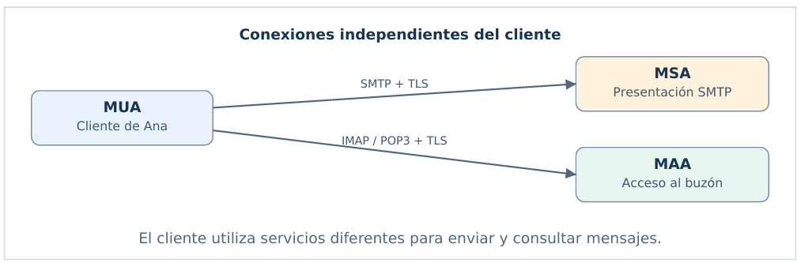
Clasificación de los clientes de correo
Clientes de escritorio
Son aplicaciones ejecutadas en el equipo del usuario. Suelen ofrecer múltiples cuentas, almacenamiento local, búsqueda, filtros y gestión avanzada de identidades. Pueden trabajar parcialmente sin conexión si han descargado previamente el contenido necesario. Su mantenimiento incluye las actualizaciones del cliente y la protección del perfil local.
Clientes de línea de comandos
Permiten leer o redactar mensajes mediante una interfaz textual o ejecutar operaciones automatizadas. Un programa de diagnóstico SMTP no constituye necesariamente un cliente completo: puede carecer de gestión de buzones, contactos o mensajes recibidos. Son útiles para la administración, la accesibilidad y los entornos sin interfaz gráfica.
Clientes para dispositivos móviles
Están diseñados para pantallas pequeñas y redes que pueden cambiar de disponibilidad. Utilizan cachés, sincronización selectiva, notificaciones y políticas de consumo de datos. Una notificación de correo no implica que el mensaje completo haya sido descargado. La aplicación puede utilizar IMAP IDLE o mecanismos de notificación de la plataforma.
Clientes web (webmail)
El usuario accede mediante un navegador, normalmente por HTTPS. La aplicación web actúa como MUA y se comunica con los componentes de correo mediante IMAP, SMTP u otras interfaces internas. El navegador no necesita implementar directamente los protocolos SMTP e IMAP.
| Característica | Escritorio | Línea de comandos | Móvil | Webmail |
|---|---|---|---|---|
| Interfaz | Gráfica | Textual | Táctil | Navegador |
| Trabajo sin conexión | Habitual | Depende del cliente | Parcial o completo | Depende de la aplicación |
| Almacenamiento local | Frecuente | Variable | Caché selectiva | Variable |
| Actualizaciones | Aplicación local | Aplicación local | Aplicación móvil | Principalmente servidor |
Selección del tipo de cliente
Un centro educativo puede ofrecer webmail en los equipos de uso compartido e IMAP en los dispositivos personales del profesorado. El buzón permanece en el servidor y ambas modalidades pueden consultar el mismo estado. En equipos compartidos deben cerrarse las sesiones y evitar guardar credenciales.
Parámetros de configuración de una cuenta de correo
La dirección de correo no determina por sí sola todos los parámetros necesarios para conectarse. El nombre del servidor, los puertos, la modalidad de cifrado y los mecanismos de autenticación deben conocerse o descubrirse mediante información fiable del proveedor.
| Parámetro | Ejemplo para Ana |
|---|---|
| Nombre visible | Ana García |
| Dirección | ana@empresa.example |
| Identificador de acceso | ana@empresa.example |
| Servidor entrante | mail.empresa.example |
| Protocolo entrante | IMAP |
| Puerto entrante | TCP 993 |
| Seguridad entrante | TLS implícito |
| Servidor saliente | mail.empresa.example |
| Puerto saliente | TCP 587 |
| Seguridad saliente | STARTTLS obligatorio |
| Autenticación | Mecanismo admitido por el servicio |
El nombre visible se utiliza al construir la cabecera From, mientras que el identificador de acceso sirve para autenticar al usuario. Pueden ser diferentes. La contraseña o el token de acceso es un dato secreto y no debe incluirse en documentación compartida.
El nombre DNS utilizado para conectar debe coincidir con una identidad válida del certificado presentado por el servidor. No es recomendable sustituirlo por una dirección IP si el certificado no acredita esa dirección.
Separación de parámetros
Ana utiliza ana@empresa.example para recibir mensajes, pero el administrador ha asignado un identificador de acceso a.garcia. El cliente debe conservar la dirección de correo para las cabeceras y utilizar el identificador indicado para la autenticación. No debe deducir que ambos valores son necesariamente iguales.
Configuración del servidor de correo saliente (SMTP)
La configuración del servidor saliente en un MUA se refiere a los parámetros de conexión con el servicio de presentación de mensajes. No equivale a configurar el MTA de la organización.
| Puerto TCP | Uso habitual | Protección |
|---|---|---|
| 587 | Presentación de mensajes (submission) | STARTTLS, exigido por la política segura del cliente |
| 465 | Presentación de mensajes | TLS implícito |
| 25 | Transferencia entre MTA | STARTTLS cuando corresponda; no es el puerto habitual de un MUA |
El cliente establece la conexión, negocia las capacidades del servidor, protege el transporte y se autentica cuando es necesario. Después transmite el sobre SMTP y el contenido del mensaje. El servicio puede imponer restricciones sobre los remitentes autorizados, el tamaño, los destinatarios y la frecuencia de envío.
Un resultado SMTP satisfactorio al final de DATA indica que el servidor ha aceptado la responsabilidad del mensaje. No asegura que el destinatario lo haya leído ni que se haya depositado ya en su buzón. La entrega posterior puede quedar pendiente o generar una notificación de error.
Envío de un mensaje
Ana presenta un mensaje mediante TCP 587 a su MSA, utilizando STARTTLS y autenticación. El servidor devuelve 250 2.0.0 Message accepted después de DATA. El cliente puede retirar el mensaje de la bandeja de salida. El MTA se encargará de transferirlo posteriormente a centro.example.
Configuración del servidor de correo entrante (POP3 e IMAP)
La elección del protocolo entrante depende del modelo de trabajo. IMAP permite administrar el estado remoto del buzón; POP3 recupera mensajes y puede conservarlos o eliminarlos según las operaciones solicitadas por el cliente.
| Protocolo | Puerto TCP | Seguridad |
|---|---|---|
| IMAP | 993 | TLS implícito |
| IMAP | 143 | STARTTLS si está disponible; exigirlo para acceso seguro |
| POP3 | 995 | TLS implícito |
| POP3 | 110 | STLS si está disponible; exigirlo para acceso seguro |
Parámetros específicos de IMAP
El cliente puede seleccionar las carpetas que sincroniza, limitar la descarga inicial a cabeceras, conservar copias locales y decidir cuándo recuperar el cuerpo y los adjuntos. Las marcas de lectura y las operaciones sobre carpetas se reflejan normalmente en el servidor, aunque pueden quedar pendientes si el equipo está desconectado.
Las carpetas de enviados, borradores y papelera deben asociarse correctamente a las carpetas especiales del servidor. La extensión IMAP SPECIAL-USE permite identificar algunas de ellas, cuando ambas partes la soportan.
Parámetros específicos de POP3
El cliente puede programar consultas periódicas y conservar mensajes en el servidor durante un periodo determinado. Para evitar descargar repetidamente el mismo correo utiliza, cuando está disponible, la identificación UIDL. POP3 no sincroniza el estado de lectura ni la estructura de carpetas como IMAP.
Acceso desde dos dispositivos
Pablo lee un mensaje en el ordenador mediante IMAP. Cuando su teléfono sincroniza el mismo buzón, puede mostrarlo como leído. Si utilizara dos clientes POP3, cada uno mantendría su propio estado local; además, si uno elimina el mensaje del servidor, el otro podría no llegar a descargarlo.
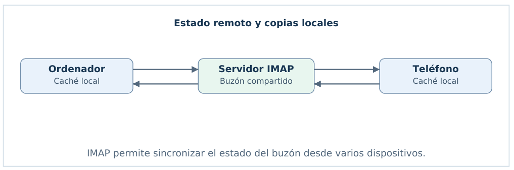
Configuración de la autenticación
La autenticación permite demostrar la identidad del usuario ante el servicio. La autorización determina las operaciones permitidas después de identificarlo. Los permisos para acceder al buzón y para enviar con una dirección concreta pueden ser independientes.
Contraseñas y mecanismos SASL
SMTP AUTH, IMAP y POP3 pueden utilizar mecanismos de autenticación basados en SASL. Algunos mecanismos transmiten credenciales codificadas, no cifradas por sí mismas, por lo que deben utilizarse sobre un transporte TLS validado. Base64 no constituye un mecanismo de cifrado.
El cliente debe almacenar las credenciales de forma segura, idealmente mediante un almacén de secretos protegido. Nunca deben enviarse contraseñas en mensajes de correo ni conservarse en registros de diagnóstico.
Autenticación mediante tokens
OAuth 2.0 permite delegar acceso mediante tokens con ámbitos y duración determinados. Un cliente compatible puede obtener un token a través de un proceso de autorización y utilizarlo mediante un mecanismo SASL admitido por el servidor, como OAUTHBEARER. El token debe protegerse como una credencial; su revocación o caducidad puede exigir renovar la autorización.
La autenticación multifactor puede intervenir en la obtención del token o en el acceso a webmail. No significa que todos los servidores SMTP, POP3 e IMAP admitan directamente un código TOTP. Algunos proveedores ofrecen contraseñas específicas de aplicación, que deben revocarse cuando dejan de ser necesarias.
Cuenta con segundo factor
Pablo inicia la autorización de su cliente ante el proveedor de identidad, introduce su contraseña y confirma un segundo factor. El cliente recibe autorización para obtener un token de acceso al correo. En las conexiones posteriores utiliza el token sin solicitar necesariamente el segundo factor en cada operación.
Configuración de comunicaciones seguras
TLS protege la confidencialidad e integridad de la comunicación entre el cliente y el servidor y permite autenticar al servidor mediante certificados. No sustituye a la autenticación del usuario ni garantiza el cifrado de extremo a extremo del contenido.
TLS implícito y negociación explícita
Con TLS implícito, la negociación criptográfica se realiza inmediatamente después de establecer TCP, antes del diálogo de aplicación. Con STARTTLS (SMTP e IMAP) o STLS (POP3), se inicia el protocolo sin cifrado y se solicita la transición a TLS. El cliente debe exigir que la negociación sea satisfactoria antes de transmitir credenciales o mensajes confidenciales.
| Comprobación | Finalidad |
|---|---|
| Nombre del servidor | Verificar que el certificado acredita la identidad esperada |
| Cadena de confianza | Comprobar que el certificado es confiable |
| Periodo de validez | Detectar certificados caducados o aún no válidos |
| Negociación TLS | Evitar versiones o algoritmos no permitidos |
| Política de conexión | Impedir la continuación sin cifrado cuando se exige TLS |
En un laboratorio con una autoridad de certificación propia, la confianza se establece mediante la distribución controlada de su certificado raíz. Aceptar indiscriminadamente cualquier certificado elimina una protección esencial contra la suplantación del servidor.
Error de identidad del servidor
El cliente espera mail.empresa.example, pero el certificado presentado solo es válido para otro.example. Aunque sea posible establecer una conexión cifrada, el cliente debe detenerse y comunicar el error. La solución consiste en revisar el nombre configurado y el certificado, no en desactivar la verificación.
Configuración automática de cuentas de correo
La configuración automática intenta descubrir los parámetros de los servicios a partir de la dirección introducida por el usuario. No existe un mecanismo único utilizado por todos los proveedores y clientes.
Entre las posibilidades están los registros DNS SRV para servicios de correo, los perfiles publicados por el proveedor mediante HTTPS, las bases de datos de configuración de los clientes y los mecanismos de autodetección de plataformas específicas. Los registros MX no identifican necesariamente los servicios de presentación SMTP ni los de acceso IMAP o POP3.
Descubrimiento mediante DNS SRV
Un registro SRV contiene prioridad, peso, puerto y nombre del servidor objetivo. El RFC 6186 describe el descubrimiento de servicios de presentación y acceso al correo. El cliente debe soportar este método para poder utilizarlo.
Registros de descubrimiento
Los siguientes registros son ilustrativos para el dominio empresa.example:
_submission._tcp.empresa.example. 3600 IN SRV 0 1 587 mail.empresa.example.
_imaps._tcp.empresa.example. 3600 IN SRV 0 1 993 mail.empresa.example.
El primero anuncia el servicio de presentación SMTP; el segundo, IMAP con TLS implícito. La presencia de los registros no sustituye a la autenticación ni a la validación del certificado.
El usuario debe poder revisar los parámetros descubiertos y corregirlos si no coinciden con los publicados por la organización. Una configuración automática obtenida de una fuente no fiable puede conducir a un servidor impostor.
Envío, recepción y organización de mensajes
Ciclo de vida de un mensaje en el cliente
Un mensaje comienza normalmente como borrador. Al solicitar el envío, puede permanecer en la bandeja de salida hasta que el MSA lo acepte. El cliente conserva habitualmente una copia en Enviados; esta copia puede ser local o almacenarse mediante IMAP. El servidor también puede guardar una copia automáticamente según su arquitectura. La copia de Enviados no es un comprobante de entrega final.
| Carpeta | Finalidad |
|---|---|
| Entrada (INBOX) | Mensajes recibidos |
| Borradores | Mensajes todavía no enviados |
| Salida | Mensajes pendientes de presentación |
| Enviados | Copias de mensajes presentados para envío |
| Papelera | Mensajes pendientes de eliminación definitiva, según política |
| Correo no deseado | Mensajes clasificados como sospechosos |
| Archivo | Mensajes conservados fuera de la vista principal |
Destinatarios y respuestas
To identifica los destinatarios principales; Cc, los destinatarios en copia; Bcc permite enviar copias sin revelar normalmente dichas direcciones a los demás destinatarios. El MUA construye el sobre SMTP con los destinatarios efectivos y evita divulgar Bcc en las copias destinadas a otros usuarios. El servidor y sus registros pueden conocer los destinatarios del sobre.
Responder utiliza normalmente Reply-To si está presente, o From en su ausencia. Responder a todos puede incluir otros destinatarios visibles. Reenviar crea un mensaje nuevo que puede contener el original como texto o adjunto. Debe revisarse la información que se divulga en cada operación.
Copia oculta
Ana envía un aviso a Pablo y añade a otra persona mediante Bcc. El cliente incluye ambos destinatarios en el sobre SMTP, pero no debe revelar al segundo destinatario en la copia recibida por Pablo. Bcc no cifra el contenido ni garantiza anonimato frente al proveedor de correo.
Organización y sincronización
Las carpetas agrupan mensajes; algunas plataformas utilizan etiquetas que permiten clasificar un mensaje en varias categorías. Una vista de búsqueda puede reunir mensajes sin moverlos físicamente. En IMAP, mover o eliminar mensajes puede afectar a otros clientes del mismo buzón. El trabajo sin conexión requiere sincronizar posteriormente las operaciones y resolver posibles conflictos.
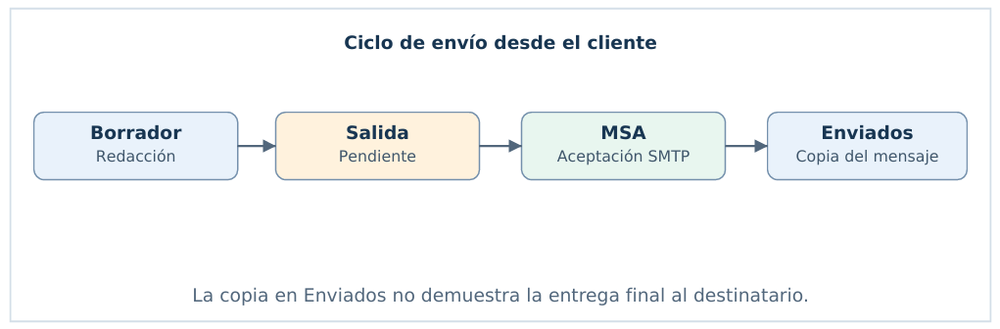
Gestión de múltiples cuentas e identidades de correo
Un cliente puede gestionar varias cuentas con servidores, credenciales y buzones independientes. Una identidad de envío es una combinación de nombre visible, dirección From, firma textual y parámetros asociados; una cuenta puede ofrecer varias identidades autorizadas.
| Entidad | Ejemplo | Característica |
|---|---|---|
| Cuenta principal | ana@empresa.example |
Acceso autenticado al buzón |
| Identidad alternativa | soporte@empresa.example |
Remitente autorizado de envío |
| Alias de recepción | informacion@empresa.example |
Dirección que dirige mensajes a otro destino |
| Cuenta adicional | ana@centro.example |
Buzón y autenticación independientes |
Una identidad configurada en el cliente no otorga automáticamente permiso de envío. El MSA debe comprobar la autorización del remitente y aplicar sus políticas. Del mismo modo, recibir mensajes mediante un alias no implica poder enviar con dicho alias.
Una bandeja unificada presenta mensajes de distintas cuentas en una vista común, pero no fusiona necesariamente sus buzones. Al responder debe verificarse la identidad seleccionada, especialmente cuando se manejan datos de distintas organizaciones.
Identidad de soporte
Ana recibe en su buzón los mensajes dirigidos a soporte@empresa.example. Si el administrador autoriza también el envío mediante esa identidad, puede responder con ella. Si solo existe un alias de recepción, el MSA puede rechazar la presentación de mensajes con ese remitente.
Filtros y reglas de organización de mensajes
Una regla combina condiciones y acciones. Las condiciones pueden evaluar remitente, destinatario, asunto, tamaño o cabeceras; las acciones pueden mover, marcar, etiquetar o eliminar mensajes. Es importante distinguir las reglas de organización de los sistemas antispam estudiados en el capítulo 7.
Filtros del cliente y del servidor
Los filtros locales se ejecutan cuando la aplicación procesa el correo, por lo que pueden depender de que esté abierta o conectada. Los filtros del servidor actúan durante la entrega o sobre el buzón, según su implementación, y pueden funcionar aunque los dispositivos estén apagados. Sieve es un lenguaje normalizado para el filtrado de mensajes en el servidor.
| Condición | Acción de ejemplo |
|---|---|
Asunto comienza por [SER] |
Mover a la carpeta Servicios en Red |
| Remitente corresponde a una lista docente | Aplicar etiqueta Docencia |
| Mensaje marcado como spam por el servidor | Mover a Correo no deseado |
Las reglas deben evaluarse considerando su orden, la posibilidad de varias coincidencias y si una acción detiene el procesamiento. Un filtro destructivo mal diseñado puede eliminar correo legítimo. Conviene probarlo primero con acciones reversibles.
Regla conceptual de servidor
Se desea que los mensajes con asunto que contenga [SER] lleguen a una carpeta llamada SER. Si el servidor dispone de Sieve y admite la extensión fileinto, una expresión ilustrativa sería:
require ["fileinto"];
if header :contains "Subject" "[SER]" {
fileinto "SER";
stop;
}
Se presupone que la carpeta está disponible y que el usuario tiene permiso. La sintaxis pertenece al estándar Sieve, no a un sistema operativo concreto.
Gestión de archivos adjuntos
MIME permite representar diferentes partes del mensaje, incluyendo documentos, imágenes y contenidos alternativos. Un adjunto suele incluir cabeceras Content-Type, Content-Disposition y Content-Transfer-Encoding. El cliente interpreta estas cabeceras para presentar o guardar el archivo.
La codificación Base64 transforma grupos de tres octetos en cuatro caracteres, por lo que incrementa el tamaño aproximadamente un tercio, sin contar saltos de línea ni otras cabeceras MIME. Los límites de tamaño SMTP se aplican al mensaje transmitido, no exclusivamente al archivo original.
Tamaño de un adjunto
Un archivo de 15 MB (millones de bytes) ocupa aproximadamente 20 MB después de la codificación Base64, antes de añadir saltos de línea y cabeceras. Si el servidor limita los mensajes a 20 MB, el envío puede superar el límite aunque el archivo original sea menor.
Los archivos adjuntos pueden contener software malicioso o enlaces a recursos peligrosos. Deben verificarse su procedencia y contexto antes de abrirlos. No se debe confiar únicamente en la extensión del nombre ni en el tipo MIME declarado. Los documentos con macros y los archivos comprimidos merecen especial atención.
Los enlaces a servicios de almacenamiento pueden evitar transmitir grandes adjuntos, pero introducen otros aspectos: permisos, caducidad del enlace, confidencialidad y disponibilidad. El acceso debe limitarse a los destinatarios autorizados. También puede ser necesario bloquear la carga automática de imágenes externas para reducir el seguimiento de lectura.
Firmas digitales y cifrado de mensajes: introducción a S/MIME y OpenPGP
La firma textual añadida al final de un mensaje no es una firma digital. Una firma digital utiliza criptografía para verificar la integridad del contenido firmado y acreditar su origen en función de la confianza depositada en la clave del firmante. No oculta el contenido. El cifrado, por su parte, protege la confidencialidad.
Firma y cifrado mediante claves asimétricas
Para firmar, el emisor utiliza su clave privada y el destinatario verifica con la clave pública correspondiente. Para cifrar, se utiliza normalmente un sistema híbrido: el mensaje se cifra con una clave simétrica y dicha clave se protege para cada destinatario mediante su clave pública. El destinatario utiliza su clave privada para recuperar el contenido.
La confianza en las claves es esencial. Una firma criptográficamente válida no basta para confirmar la identidad de una persona si no se conoce o verifica la vinculación de la clave con dicha identidad.
| Característica | S/MIME | OpenPGP |
|---|---|---|
| Formato | Basado en MIME y CMS | Formato OpenPGP; integración PGP/MIME |
| Identidad | Certificados X.509 | Claves OpenPGP e identidades asociadas |
| Confianza | Autoridades de certificación y políticas de confianza | Verificación de claves y modelos de confianza compatibles |
| Funciones | Firma y cifrado | Firma y cifrado |
Diferencias respecto a TLS y DKIM
TLS protege el transporte entre dos extremos de una conexión. DKIM permite verificar una firma de dominio sobre determinados elementos del mensaje. S/MIME y OpenPGP permiten proteger el contenido del mensaje entre usuarios, si las claves se mantienen bajo su control y las aplicaciones realizan correctamente la operación. Algunos metadatos necesarios para la entrega pueden seguir siendo visibles.
Mensaje confidencial
Ana dispone de una clave pública de Pablo cuya identidad ha verificado previamente. Firma el mensaje con su propia clave privada y cifra el contenido para Pablo. Este lo descifra con su clave privada y verifica la firma con la clave pública de Ana. El servidor SMTP puede transportar el mensaje cifrado sin conocer su contenido protegido. Los servidores siguen necesitando información de encaminamiento.
La pérdida de una clave privada de descifrado puede impedir recuperar mensajes antiguos. La protección, copia segura, revocación y renovación de claves forman parte de la gestión del sistema. No debe compartirse una clave privada con otros usuarios.
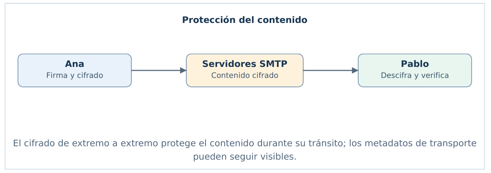
Verificación del envío y la recepción de correo
La verificación debe comprobar por separado el servicio saliente, el entrante y la integración completa. Abrir el cliente o iniciar sesión no demuestra por sí solo que el correo pueda entregarse entre dominios.
Procedimiento de comprobación
- Revisar los nombres de servidor, puertos y protocolos seleccionados.
- Comprobar la resolución DNS y la accesibilidad de los servicios.
- Verificar TLS y la identidad de los certificados.
- Comprobar la autenticación del usuario en ambos servicios.
- Enviar un mensaje de prueba con un asunto único.
- Verificar la aceptación SMTP y la llegada al buzón del destinatario.
- Consultar el mensaje desde el cliente receptor y responder.
- Comprobar la sincronización de carpetas y marcas cuando se utiliza IMAP.
- Registrar los resultados sin incluir credenciales ni datos innecesarios.
| Prueba | Resultado esperado |
|---|---|
| Ana envía a Pablo | SMTP acepta el mensaje y Pablo lo recibe |
| Pablo responde a Ana | Se verifica el flujo en sentido contrario |
| Credencial incorrecta | Se rechaza la autenticación |
| Certificado no válido | El cliente detiene la conexión segura |
| Identidad no autorizada | El MSA rechaza el envío según su política |
| Lectura IMAP en dos dispositivos | Se sincroniza la marca de lectura |
| Adjunto por encima del límite | El envío se rechaza con un error comprensible |
Incidencias habituales
| Síntoma | Comprobaciones prioritarias |
|---|---|
| Recibe correo pero no puede enviar | MSA, puerto SMTP, TLS, autenticación y autorización |
| Envía pero no recibe | MAA, configuración entrante, entrega al buzón y cuota |
| Solicita contraseña repetidamente | Credenciales, token caducado o mecanismo incompatible |
| No aparecen los mensajes enviados en otro equipo | Asociación de carpetas y almacenamiento local o remoto |
| Descarga duplicada en POP3 | Identificadores UIDL y estado local del cliente |
| Mensajes no sincronizados | Conectividad, suscripción de carpetas y estado de sincronización |
| Destinatario no recibe un mensaje aceptado | Cola SMTP, error posterior, filtrado o entrega final |
Diagnóstico de un fallo de envío
Pablo puede leer mensajes por IMAP, pero su cliente no consigue enviar. La conectividad y autenticación IMAP no prueban que SMTP funcione. Se revisa primero el servidor de presentación, el puerto, el modo TLS y las credenciales SMTP. Si la presentación es aceptada pero no llega al destinatario, debe investigarse la transferencia posterior. Los resultados de estas pruebas son ilustrativos y no proceden de servidores reales.
Referencias técnicas
- RFC 5321: Simple Mail Transfer Protocol.
- RFC 6409: Message Submission for Mail.
- RFC 8314: TLS para presentación y acceso al correo.
- RFC 1939: Post Office Protocol, versión 3.
- RFC 9051: IMAP4rev2.
- RFC 6186: Descubrimiento de servicios de correo mediante SRV.
- RFC 6154: Carpetas de uso especial en IMAP.
- RFC 5228: Sieve, lenguaje de filtrado de correo.
- RFC 2045: MIME y codificaciones de transferencia.
- RFC 7628: Mecanismos SASL para OAuth.
- RFC 8551: S/MIME versión 4.0.
- RFC 9580: Formato OpenPGP.
Escenarios de implantación e integración del servicio de correo
La implantación de un servicio de correo electrónico no consiste únicamente en disponer de un servidor SMTP y otro IMAP. Es necesario decidir cómo se distribuyen las funciones, dónde se almacenan los mensajes, qué usuarios pueden acceder, qué comunicaciones deben permitirse y quién se responsabiliza del mantenimiento. La arquitectura elegida debe responder a las necesidades de la organización y a los riesgos asociados al servicio.
En este capítulo se integran los conceptos estudiados anteriormente. Se mantienen los dominios ficticios empresa.example y centro.example, reservados para documentación. Las direcciones públicas de ejemplo pertenecen a rangos reservados para documentación y no son utilizables como direcciones públicas reales. Los escenarios y las cifras son ilustrativos; no representan instalaciones verificadas.
Servidores de correo en redes locales
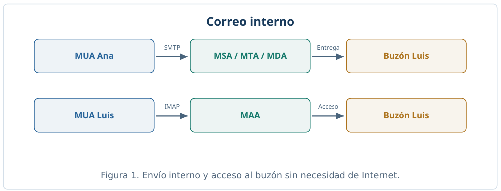
Un servidor de correo interno presta servicio a usuarios de una red privada sin que sea imprescindible disponer de conectividad a Internet. Puede integrar las funciones MSA, MTA, MDA y MAA en un mismo equipo. Los clientes utilizan SMTP para presentar mensajes e IMAP o POP3 para acceder a sus buzones.
El DNS interno permite resolver el nombre del servidor y, cuando existen varios dominios internos, localizar sus servidores MX. No es necesario publicar estos registros en el DNS público si no se pretende recibir mensajes desde Internet. Un único servidor puede reconocer como destino final varios dominios locales y realizar la entrega sin una conexión SMTP externa.
Requisitos y características
| Elemento | Función en la red local |
|---|---|
| Direccionamiento privado | Identificar clientes y servidores internos |
| DNS interno | Resolver nombres y localizar destinos de correo |
| SMTP | Presentar y transferir mensajes |
| MDA y almacenamiento | Entregar y conservar los mensajes |
| IMAP o POP3 | Permitir el acceso a los buzones |
| Autenticación y TLS | Proteger cuentas y comunicaciones |
Aunque la red sea privada, no debe considerarse automáticamente de confianza. Un equipo comprometido puede enviar spam, acceder a credenciales o agotar el almacenamiento. Es conveniente limitar la retransmisión, autenticar a los usuarios y aplicar cifrado incluso dentro de la organización. Los certificados pueden proceder de una autoridad interna cuya confianza se haya distribuido a los clientes.
Correo interno de una empresa
Ana (ana@empresa.example) envía un mensaje a Luis (luis@empresa.example). Ambos utilizan mail.empresa.example, con dirección privada 192.168.10.10. El MSA recibe el mensaje y el sistema determina que el destinatario pertenece a un dominio atendido localmente. El MDA lo deposita en el buzón de Luis, que lo consulta por IMAP. No es necesario acceder a Internet para completar el proceso.
Una instalación local es especialmente útil para laboratorios, redes aisladas y sistemas de notificación internos. Su principal limitación es que el intercambio con dominios externos requiere una arquitectura adicional de transferencia.
Servidores de correo accesibles desde Internet
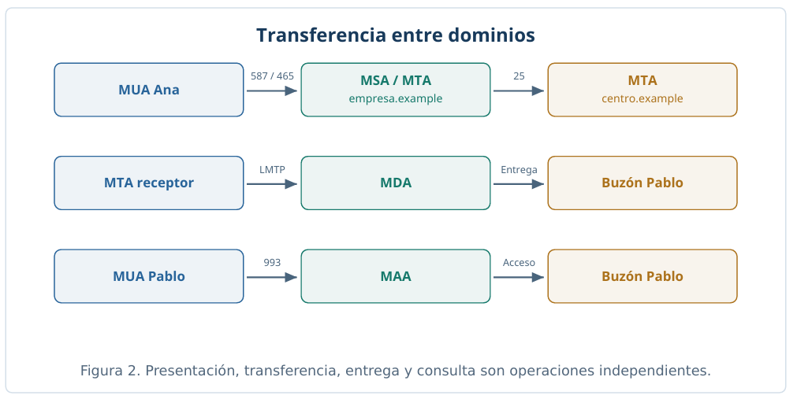
Para intercambiar mensajes con otros dominios, el sistema debe disponer de un camino de entrada y otro de salida. Estos caminos pueden terminar en el propio servidor de correo o en una pasarela o proveedor intermediario.
En una arquitectura de entrega directa, el dominio publica registros MX que apuntan a nombres resolubles mediante A o AAAA. Los MTA externos establecen conexiones SMTP hacia el servicio receptor, normalmente en TCP 25. El MTA saliente consulta los registros MX de los destinatarios y establece las conexiones correspondientes.
Requisitos de publicación
| Requisito | Finalidad |
|---|---|
| Dirección IP pública alcanzable | Permitir conexiones desde otros servidores |
| DNS público y MX | Identificar los receptores del dominio |
| PTR coherente | Facilitar la identificación y reputación del emisor |
| SMTP TCP 25 | Transferencia entre servidores |
| SPF, DKIM y DMARC | Autenticación de dominios y políticas de correo |
| TLS y certificados | Proteger el transporte según el servicio y su política |
| Cortafuegos | Limitar las conexiones a los servicios necesarios |
Los usuarios remotos pueden utilizar submission en TCP 587 con STARTTLS obligatorio o TCP 465 con TLS implícito, e IMAP con TLS implícito en TCP 993. Si se ofrece POP3 seguro, se emplea normalmente TCP 995. Webmail utiliza HTTPS, habitualmente TCP 443. No es obligatorio publicar todos estos servicios: si el acceso se realiza por VPN o exclusivamente mediante webmail, los puertos de acceso directo pueden mantenerse privados.
El servidor SMTP público debe aceptar mensajes destinados a los dominios que atiende sin exigir a todos los MTA externos una cuenta de usuario. En cambio, la retransmisión a destinos externos debe restringirse a sistemas autorizados. Confundir ambas operaciones provoca rechazos de correo legítimo o un Open Relay.
Intercambio entre dominios
El MTA de empresa.example consulta el MX de centro.example, obtiene mail.centro.example y resuelve su dirección de documentación 198.51.100.20. Establece una sesión SMTP en TCP 25. El sistema receptor verifica el destinatario y aplica sus controles de seguridad antes de aceptar el mensaje. Pablo lo consulta después mediante IMAP. La aceptación SMTP no garantiza que el mensaje haya llegado inmediatamente a la bandeja de entrada: puede estar en una cola o en cuarentena.
Servidores de correo para pequeñas y medianas empresas
Una pyme suele necesitar correo corporativo, acceso desde distintos dispositivos, cuentas individuales, direcciones departamentales y continuidad razonable del servicio. No todas las empresas necesitan administrar un MTA público propio: una solución alojada o híbrida puede reducir la carga operativa.
Dimensionamiento y organización
El número de usuarios no es suficiente para calcular los recursos. También influyen el volumen de mensajes, el tamaño medio de los adjuntos, la retención, las conexiones simultáneas, el filtrado de contenidos y las copias de seguridad. El almacenamiento de buzones debe distinguirse del espacio de colas, índices, registros y copias.
Estimación de capacidad
Una empresa tiene 40 usuarios con una cuota de 2 GiB por buzón. La capacidad máxima conjunta de los buzones es 80 GiB. Si se reserva un 25 % adicional sobre esa cifra para crecimiento y estructuras auxiliares, se obtienen 100 GiB como estimación inicial del almacenamiento operativo. Las copias de seguridad y otros recursos se dimensionan aparte. La cuota no equivale al espacio realmente ocupado.
| Necesidad | Solución conceptual |
|---|---|
| Dirección comercial | Alias o buzón compartido según el flujo de trabajo |
| Acceso desde casa | IMAP y submission seguros, webmail o VPN |
| Altas y bajas | Gestión centralizada de identidades |
| Protección del dominio | SPF, DKIM, DMARC y control de emisores |
| Continuidad | Copias verificadas, alertas y procedimientos de recuperación |
| Mantenimiento limitado | Servicio gestionado o plataforma alojada |
Un alias como ventas@empresa.example puede distribuir mensajes a varias personas, pero no proporciona un estado compartido de lectura ni un historial común. Si el departamento necesita coordinar respuestas, un buzón compartido con permisos individuales suele ser más apropiado.
Servicios de correo para centros educativos
Un centro educativo presenta perfiles de usuario diferenciados: alumnado, profesorado, administración y personal técnico. Las políticas del servicio deben adaptarse a sus funciones y al ciclo de vida de las cuentas, sin asumir que todos requieren idénticos permisos.
La arquitectura puede utilizar un directorio común, grupos de usuarios, cuotas diferenciadas, listas de distribución y buzones institucionales. La protección frente al phishing, la recuperación de cuentas y la formación de usuarios adquieren especial importancia. Las políticas de conservación y acceso deben considerar la privacidad y las obligaciones aplicables a la organización.
| Perfil | Necesidades habituales |
|---|---|
| Alumnado | Cuenta personal, acceso seguro y límites de uso razonables |
| Profesorado | Comunicación institucional y listas de grupos |
| Administración | Buzones funcionales, delegación y continuidad |
| Personal técnico | Gestión del servicio, monitorización y recuperación |
Separación de identidades
En centro.example, Pablo pertenece al grupo alumnado. La dirección secretaria@centro.example corresponde a un buzón compartido accesible por personal autorizado. La lista profesorado@centro.example distribuye avisos únicamente a sus miembros y restringe quién puede publicar. Al finalizar un curso se revisan las cuentas y se aplica la política de conservación antes de su retirada.
No debe utilizarse una única contraseña compartida para todos los miembros de un departamento. La delegación permite identificar individualmente al usuario y retirar permisos sin cambiar las credenciales del resto.
Alojamiento de múltiples dominios de correo
Un mismo sistema puede gestionar varios dominios de correo sin necesitar una máquina independiente por dominio. El MTA determina el dominio del destinatario a partir del sobre SMTP y consulta la información de destinatarios y rutas de entrega. Los usuarios pueden identificarse mediante su dirección completa para evitar ambigüedades entre nombres iguales.
Separación lógica y administrativa
| Aspecto | Decisión de diseño |
|---|---|
| DNS | Registros MX y autenticación propios de cada dominio |
| Identidades | Identificador único, normalmente con el dominio |
| Buzones | Separación lógica y permisos por cuenta |
| Firma DKIM | Claves y selectores correspondientes a cada dominio |
| Cuotas y políticas | Límites y reglas por usuario o dominio |
| Administración | Delegación limitada al ámbito autorizado |
Dos dominios en una plataforma
Una plataforma aloja empresa.example y centro.example. Las cuentas ana@empresa.example y ana@centro.example representan identidades distintas aunque compartan el nombre local. Ambos dominios pueden publicar MX hacia el mismo nombre de servidor. La entrega consulta la dirección completa para seleccionar el buzón correcto. Cada dominio conserva su propia política DMARC y autoriza sus emisores legítimos.
Compartir una IP de salida también puede compartir parte del riesgo reputacional: el abuso de un dominio puede perjudicar la entrega de otros. La separación lógica debe complementarse con límites de envío, supervisión y controles de acceso. Un dominio virtual no implica necesariamente virtualización del hardware.
Arquitecturas con servidores SMTP, IMAP y almacenamiento independientes
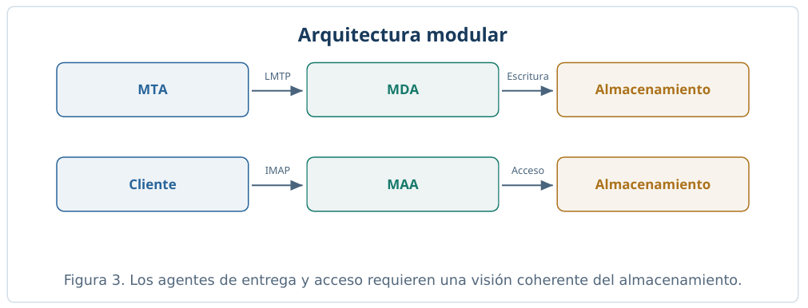
En una arquitectura modular, los distintos componentes pueden ejecutarse en máquinas diferentes. El MTA se especializa en transferencia y gestión de colas; el MDA entrega los mensajes; el MAA atiende las consultas de buzones. El almacenamiento puede constituir un servicio independiente accesible mediante una interfaz compatible con los agentes de entrega y acceso.
Esta separación permite dimensionar cada función según su carga. Por ejemplo, el filtrado de adjuntos puede consumir CPU, mientras que IMAP y la indexación dependen intensamente del almacenamiento. Sin embargo, aparecen nuevas dependencias de red y necesidades de supervisión.
| Componente | Recursos y dependencias principales |
|---|---|
| MSA/MTA | CPU, red, espacio persistente de colas, DNS |
| MDA | Acceso autorizado al almacenamiento y directorio |
| MAA | Conexiones concurrentes, índices y acceso a buzones |
| Almacenamiento | Capacidad, latencia, integridad y redundancia |
| Directorio | Disponibilidad de identidades y atributos |
Integración entre componentes
El MTA puede entregar mensajes al MDA mediante LMTP. Este protocolo permite obtener resultados de entrega individuales para cada destinatario al finalizar los datos del mensaje. El MDA y el MAA necesitan una visión coherente de los buzones y sus permisos. No basta con conectar dos servidores a una carpeta compartida: el formato, el bloqueo, la concurrencia y los índices deben ser compatibles.
Separación de funciones
El MTA de empresa.example recibe correo en 192.168.10.10, el agente de acceso se encuentra en 192.168.10.20 y el almacenamiento en 192.168.10.30. Si el almacenamiento deja de estar disponible, el MTA puede conservar temporalmente los mensajes en cola siempre que disponga de espacio y que la entrega haya fallado de forma temporal. IMAP puede quedar indisponible aunque SMTP siga aceptando mensajes.
La distribución de servicios no proporciona automáticamente alta disponibilidad. Si todos dependen de un único almacenamiento sin redundancia, este constituye un punto único de fallo.
Arquitecturas con pasarelas de seguridad de correo (Mail Gateway)
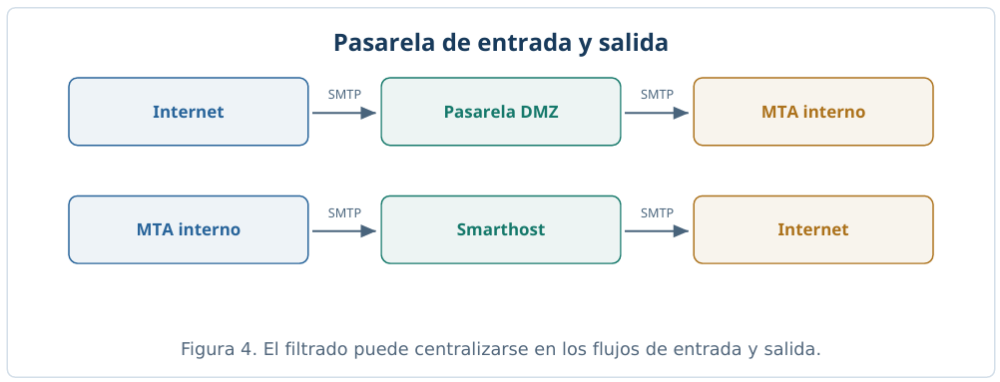
Una pasarela de seguridad de correo es un intermediario a nivel de aplicación que recibe, analiza y transfiere mensajes. Habitualmente se comporta como un MTA y aplica controles antes de entregar el correo al sistema interno. No debe confundirse con la puerta de enlace IP que encamina paquetes entre redes.
Pasarela de entrada
Los registros MX públicos pueden apuntar a la pasarela. Esta comprueba destinatarios, reputación, contenido, SPF, DKIM y DMARC, y decide si rechaza, pone en cuarentena o transfiere los mensajes al servidor interno. La validación de destinatarios debe coordinarse con el sistema final para evitar aceptar mensajes inexistentes y generar devoluciones innecesarias.
Pasarela de salida
Los servidores internos pueden utilizar una pasarela como smarthost para aplicar límites, inspección de contenidos, políticas de salida y firma DKIM. La firma debe realizarse después de las modificaciones que puedan afectar al contenido firmado. La pasarela de salida también permite centralizar la reputación y supervisar posibles cuentas comprometidas.
Filtrado centralizado
El MX de empresa.example apunta a gateway.empresa.example. Los mensajes procedentes de Internet se someten a controles de seguridad en la pasarela antes de pasar al MTA interno. El servidor interno acepta transferencias de entrada únicamente desde las pasarelas autorizadas. El correo saliente también pasa por una pasarela que aplica límites y firma DKIM. Los clientes consultan sus buzones sin pasar por el filtro SMTP.
La pasarela debe disponer de espacio de cola suficiente y procedimientos de gestión de cuarentena. Si comunica resultados de autenticación al sistema interno, este debe confiar únicamente en las cabeceras generadas por intermediarios autorizados. Una cabecera Authentication-Results recibida directamente de Internet no debe considerarse una prueba fiable por sí sola.
Integración con servicios de directorio (LDAP y Active Directory)
Un servicio de directorio almacena información estructurada sobre identidades y otros recursos de una organización. LDAP es un protocolo de acceso a directorios; Active Directory es una plataforma de servicios de directorio e identidad que, entre otras capacidades, admite LDAP y Kerberos. No son protocolos de transporte de correo.
El sistema de correo puede consultar el directorio para localizar cuentas, direcciones, alias y grupos. La autenticación puede delegarse en un servicio de identidad, mientras que la autorización determina qué buzones y operaciones están permitidos. El directorio no tiene por qué almacenar el contenido de los mensajes.
| Información | Uso en el servicio de correo |
|---|---|
| Identificador de usuario | Localización de la cuenta |
| Dirección principal | Identidad de correo |
| Direcciones alternativas | Resolución de alias |
| Grupos | Políticas y listas de distribución |
| Estado de la cuenta | Control de acceso |
Alta centralizada
Al incorporar a un nuevo profesor, el centro crea su identidad institucional y le asigna los atributos de correo. Los servicios SMTP e IMAP consultan la fuente de identidad autorizada y el sistema de aprovisionamiento crea el buzón correspondiente. La existencia de una entrada en el directorio no implica por sí sola que el buzón ya exista.
La comunicación con el directorio debe protegerse mediante TLS u otros mecanismos adecuados. Las cuentas técnicas de consulta deben disponer de privilegios mínimos. Si el directorio falla, el acceso puede dejar de funcionar incluso aunque los buzones estén intactos. La caché de identidad, cuando existe, debe tener una política de caducidad y revocación definida.
Integración con cortafuegos, NAT y DMZ
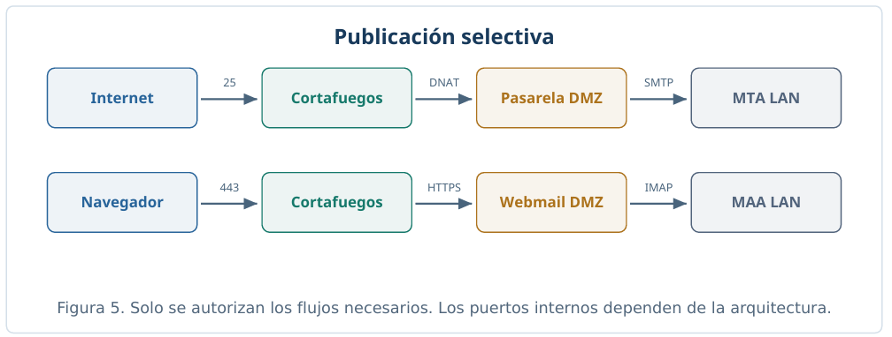
La publicación del servicio de correo debe coordinarse con el diseño de red estudiado en el RA8. El cortafuegos controla los flujos autorizados; NAT traduce direcciones o puertos cuando es necesario; una DMZ separa los servicios expuestos de los sistemas internos. Ninguno de estos mecanismos sustituye a la autenticación ni al filtrado SMTP.
Matriz conceptual de comunicaciones
| Origen | Destino | Servicio | Política orientativa |
|---|---|---|---|
| Internet | Pasarela SMTP en DMZ | TCP 25 | Permitir recepción pública |
| Pasarela DMZ | MTA interno | SMTP | Solo destinos autorizados |
| MTA interno | Pasarela de salida | SMTP | Permitir flujo definido |
| Pasarela de salida | Internet | TCP 25 | Permitir entrega directa si procede |
| Clientes autorizados | MSA | TCP 465/587 | TLS y autenticación |
| Clientes autorizados | MAA | TCP 993/995 | Solo protocolos ofrecidos |
| Navegadores | Webmail | TCP 443 | HTTPS |
| Servicios de correo | Directorio y almacenamiento | Según arquitectura | Acceso limitado |
La tabla representa una arquitectura posible; los puertos internos dependen del diseño. En IPv4 puede utilizarse DNAT para publicar el servicio SMTP de la DMZ. En IPv6, la publicación puede realizarse mediante encaminamiento y filtrado sin traducción tradicional de direcciones. No deben exponerse directamente a Internet el almacenamiento de buzones ni las interfaces administrativas salvo requisitos y protecciones específicos.
Publicación selectiva
Una empresa publica TCP 25 hacia su pasarela de correo y TCP 443 hacia su aplicación webmail. Los servicios internos IMAP, LMTP y directorio no son accesibles directamente desde Internet. La aplicación webmail sí puede acceder a IMAP y submission a través de los flujos internos autorizados. El navegador no establece una sesión IMAP directamente.
Cuando se utiliza NAT, la dirección anunciada en DNS debe corresponder al punto de entrada público, no a la dirección privada del servidor. Las reglas deben contemplar las respuestas y las rutas de retorno. La segmentación limita el impacto de una intrusión, pero no elimina la necesidad de actualizar los servicios expuestos.
Restricciones de los proveedores de acceso a Internet
La posibilidad de alojar un servidor de correo depende de las características de la conectividad contratada. Algunos proveedores restringen el tráfico SMTP directo, asignan direcciones dinámicas o utilizan CG-NAT. Estas condiciones pueden impedir la recepción o transferencia directa aun cuando el servidor esté correctamente configurado.
| Restricción | Consecuencia | Alternativa conceptual |
|---|---|---|
| Bloqueo de TCP 25 saliente | No se puede entregar directamente a ciertos MTA | Smarthost autorizado mediante submission |
| Bloqueo de TCP 25 entrante | No se reciben conexiones SMTP externas | Pasarela receptora externa con canal de entrega adecuado |
| CG-NAT | No se controla la traducción pública del operador | IP pública contratada o arquitectura externa/híbrida |
| IP dinámica | Cambios en el punto de entrada y posible mala reputación | IP estable o servicio alojado |
| PTR no configurable | Dificultades de identidad y reputación | Coordinación con proveedor o relay autorizado |
El DNS dinámico permite actualizar un nombre cuando cambia una dirección, pero no elimina un bloqueo de puertos ni concede control sobre CG-NAT. Tampoco garantiza una reputación adecuada para el envío directo. Un smarthost resuelve principalmente la salida; no proporciona necesariamente un camino de entrada.
Salida mediante proveedor
La conexión de empresa.example no permite establecer sesiones SMTP salientes en TCP 25. El MTA interno presenta los mensajes a un smarthost contratado mediante una conexión autenticada y cifrada en TCP 587, si el proveedor ofrece esa modalidad. El smarthost realiza la entrega a los MX externos. Para recibir correo será necesario estudiar por separado la conectividad entrante.
Estas restricciones deben comprobarse antes de elegir una arquitectura. Las políticas concretas varían según el proveedor y el contrato; no se presupone que sean universales.
Servicios de correo propios, externos e híbridos
En un modelo propio, la organización administra la infraestructura y las aplicaciones de correo. En un modelo externo, un proveedor presta el servicio y la organización configura las cuentas, dominios y políticas que le corresponden. Un modelo híbrido combina ambos enfoques.
| Criterio | Propio | Externo | Híbrido |
|---|---|---|---|
| Control técnico | Alto | Depende del servicio | Distribuido |
| Mantenimiento | A cargo de la organización | Parcialmente delegado | Compartido |
| Inversión | Equipos, operación y personal | Suscripción o contrato | Combinación |
| Integración | Personalizable | Según interfaces ofrecidas | Requiere coordinación |
| Dependencia externa | Conectividad y otros servicios | Elevada respecto al proveedor | Variable |
El coste total debe incluir mantenimiento, actualizaciones, copias, supervisión, recuperación y tiempo del personal, no solo el precio del servidor. La ubicación física del servidor no determina por sí sola quién administra el servicio: un sistema propio puede estar alojado en un centro de datos externo.
Modelo híbrido
Una empresa conserva sus buzones y su directorio internos, pero contrata una pasarela antispam de entrada y un relay de salida. Los MX apuntan a la pasarela externa y los mensajes autorizados se transfieren por un canal protegido al sistema interno. El contrato debe definir qué ocurre con las colas cuando el enlace interno falla y durante cuánto tiempo se conservan los mensajes pendientes.
Introducción a los servicios de correo en la nube
El correo en la nube suele ofrecerse como software como servicio (SaaS). El proveedor administra la plataforma subyacente y proporciona acceso mediante webmail, aplicaciones cliente, protocolos estándar o interfaces propias. La organización sigue siendo responsable de las tareas que le correspondan, como gestionar identidades, permisos, dominios y políticas de seguridad.
También es posible desplegar un servidor propio sobre infraestructura como servicio (IaaS). En ese caso, alquilar una máquina virtual no equivale a contratar un servicio de correo gestionado: la administración de las aplicaciones, el filtrado y las copias puede continuar siendo responsabilidad del cliente.
| Aspecto | SaaS de correo | Servidor propio en IaaS |
|---|---|---|
| Aplicaciones servidoras | Administradas por el proveedor | Administradas por la organización |
| Actualizaciones | Principalmente proveedor | Principalmente organización |
| Configuración de cuentas | Organización | Organización |
| Flexibilidad técnica | Según el producto | Mayor, dentro de los límites contratados |
| Continuidad y exportación | Según contrato y capacidades | Diseño y operación propios |
Antes de contratar deben revisarse el alcance de las copias, la recuperación de mensajes eliminados, la exportación de datos, los límites de envío, la compatibilidad de clientes y las condiciones de continuidad. La disponibilidad anunciada no equivale necesariamente a una garantía de recuperación de cada mensaje.
Dominio propio con servicio alojado
empresa.example contrata un servicio SaaS. Conserva la gestión de su dominio y publica los registros MX y de autenticación indicados por el proveedor. Los usuarios acceden al servicio alojado con sus cuentas corporativas. La empresa debe seguir gestionando altas, bajas, MFA y permisos, aunque no administre directamente los procesos SMTP o IMAP.
Disponibilidad y continuidad del servicio
La disponibilidad expresa la capacidad del servicio para atender solicitudes cuando se necesita. La continuidad incluye los procedimientos necesarios para mantener o recuperar la actividad ante fallos. Un sistema de correo puede funcionar parcialmente: por ejemplo, aceptar SMTP mientras IMAP está indisponible.
Redundancia, colas y copias de seguridad
Un MX secundario puede recibir temporalmente mensajes y transferirlos al servidor principal cuando se recupere, si está configurado para ello. No implica que exista una segunda copia de los buzones ni que los usuarios puedan consultarlos durante la caída. La replicación de almacenamiento mejora la disponibilidad frente a determinados fallos, pero puede propagar borrados o corrupción; por ello no sustituye a las copias independientes.
| Mecanismo | Protege principalmente frente a |
|---|---|
| MX alternativo y colas persistentes | Interrupciones temporales de recepción |
| Redundancia de servicios | Fallos de componentes individuales |
| Replicación | Pérdida de disponibilidad de ciertas réplicas |
| Copias independientes | Borrados, corrupción y pérdida de datos |
| Monitorización y alertas | Detección tardía de incidencias |
| Plan de recuperación | Respuesta desorganizada ante fallos |
RPO (Recovery Point Objective) indica la pérdida de datos temporal máxima que se pretende tolerar. RTO (Recovery Time Objective) indica el tiempo objetivo de recuperación del servicio. Son objetivos de diseño, no garantías automáticas.
Objetivos de recuperación
Un centro fija un RPO de 4 horas y un RTO de 2 horas para sus buzones. Debe disponer de mecanismos que permitan recuperar los datos con una antigüedad máxima de 4 horas y restablecer el acceso en un objetivo de 2 horas. Una copia diaria por sí sola no satisface necesariamente el RPO. Las pruebas periódicas de restauración permiten comprobar si los objetivos son alcanzables.
La monitorización debe observar SMTP, acceso a buzones, DNS, espacio libre, antigüedad de las colas, certificados y dependencias de identidad. Una prueba completa de envío y recepción proporciona más información que comprobar únicamente si un puerto está abierto.
Selección de la arquitectura más adecuada para cada escenario
La selección debe comenzar por los requisitos, no por un producto. Es necesario identificar los usuarios, dominios, acceso interno y externo, necesidades de almacenamiento, políticas de seguridad, objetivos de recuperación y capacidad de administración.
Comparación de escenarios
| Escenario | Arquitectura orientativa | Prioridad |
|---|---|---|
| Laboratorio aislado | Servidor integrado y DNS interno | Aprendizaje y simplicidad |
| Pyme con poco personal técnico | Servicio gestionado | Reducir mantenimiento |
| Organización con control interno | Servidor propio o híbrido | Integración y control |
| Centro con múltiples perfiles | Identidad centralizada y buzones diferenciados | Gestión del ciclo de vida |
| Plataforma multidominio | Aislamiento lógico y políticas por dominio | Separación y escalabilidad |
| Servicio crítico | Redundancia y recuperación comprobada | Continuidad |
Caso integrador
Diseño del servicio de empresa.example
Una empresa de 40 usuarios necesita correo interno y externo, acceso desde teléfonos, un buzón compartido de ventas y protección antispam. Tiene una conexión con restricciones de SMTP saliente y un equipo técnico reducido.
Una alternativa es utilizar un servicio alojado con dominio propio. Otra consiste en mantener los buzones internos y contratar una pasarela externa y un smarthost. La segunda ofrece más control local, pero requiere mantener el acceso remoto, el almacenamiento y la integración entre componentes. La elección depende de requisitos de control, coste y continuidad, no de que una arquitectura sea siempre superior.
Antes de aceptar la solución deben comprobarse el envío interno y externo, la recepción desde otro dominio, el rechazo de retransmisión no autorizada, el acceso seguro de usuarios, los alias, el buzón compartido, la autenticación de dominios y la recuperación de una copia.
Matriz de verificación conceptual
| Prueba | Resultado esperado | Criterio relacionado |
|---|---|---|
| Envío interno | Mensaje entregado al buzón correcto | CE1, CE7 |
| Recepción externa | El dominio acepta correo válido | CE2, CE7 |
| Acceso con cuenta autorizada | Consulta del buzón correcto | CE3, CE6 |
| Envío a un alias | Entrega al destino definido | CE4 |
| Relay externo no autorizado | Rechazo de la retransmisión | CE5 |
| Acceso remoto cifrado | Sesión autenticada y protegida | CE5, CE6 |
| Envío desde cliente | Presentación correcta al MSA | CE7 |
| Fallo temporal de entrega | Cola o notificación según el estado | CE2 |
Esta matriz define resultados esperados, no pruebas efectuadas. La implantación real y la comprobación efectiva de los criterios de evaluación se realizarán en los documentos específicos de implementación.
Verificación, monitorización y resolución de incidencias
La administración de un servicio de correo electrónico exige comprobar que sus componentes funcionan de forma coordinada, detectar fallos y determinar sus causas antes de modificar la configuración. Un servicio SMTP puede aceptar mensajes mientras el almacenamiento está lleno, o un buzón puede contener correo que el usuario no consigue consultar. Por ello, verificar únicamente que un servidor responde no demuestra que el servicio completo funcione.
Se mantienen los dominios ficticios empresa.example y centro.example. Ana (ana@empresa.example) envía correo a Pablo (pablo@centro.example). Los servidores mail.empresa.example y mail.centro.example utilizan, respectivamente, 192.0.2.10 y 198.51.100.20 como direcciones de documentación. Los ejemplos presuponen un laboratorio autorizado con resolución DNS propia; estas direcciones y dominios no corresponden a servidores accesibles en Internet. Las sesiones, registros y cifras son ilustrativos.
Metodología de diagnóstico del servicio de correo electrónico
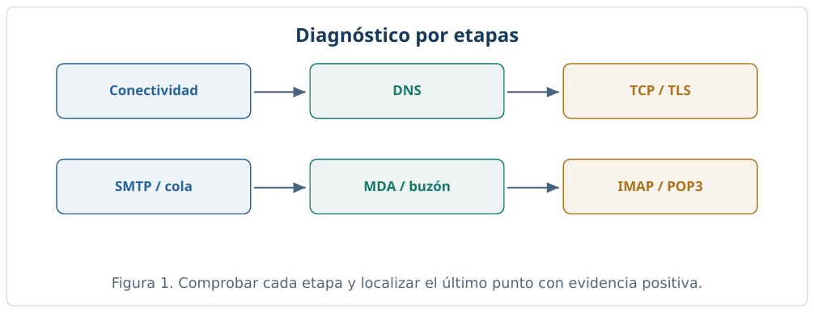
Diagnosticar consiste en formular hipótesis a partir de síntomas y contrastarlas con evidencias. La resolución de una incidencia requiere identificar la causa, aplicar una corrección proporcionada y verificar que no se han introducido nuevos problemas.
Diagnóstico por capas y componentes
| Nivel | Qué comprobar | Evidencia habitual |
|---|---|---|
| Red | Direccionamiento, rutas y conectividad | Respuestas IP y conexiones TCP |
| DNS | Nombres, MX, A, AAAA y PTR | Respuestas del resolvedor |
| Transporte seguro | Negociación TLS y certificados | Resultado de validación TLS |
| Transferencia | SMTP, aceptación y retransmisión | Respuestas SMTP y colas |
| Entrega | MDA, espacio y permisos | Registros de entrega y buzón |
| Acceso | POP3, IMAP, autenticación | Respuestas de protocolo |
| Cliente | Parámetros, sincronización y filtros | Estado de carpetas y mensajes |
Se comienza delimitando el problema: ¿afecta a un usuario, a todos los usuarios, a un dominio o solo al correo externo? Conviene registrar la hora y zona horaria, identificar un mensaje de prueba y determinar el último punto del recorrido en el que se dispone de evidencia positiva. Las pruebas deben repetirse desde el origen que experimenta el fallo; una conexión interna no demuestra accesibilidad desde Internet.
El método general comprende la recogida de información, la reproducción controlada, la formulación de hipótesis, la prueba de una hipótesis cada vez, la corrección y la comprobación posterior. Debe existir una forma de revertir los cambios. No conviene reiniciar servicios, desactivar el cortafuegos ni eliminar mensajes de la cola como primera medida: pueden ocultar la causa o agravar la incidencia.
El destinatario no recibe un mensaje
Ana observa el mensaje en Enviados. Se comprueba si el MSA lo aceptó, si el MTA emisor lo transfirió, si el MTA receptor lo aceptó y si el MDA lo depositó en el buzón de Pablo. Si está en el buzón, se investigan IMAP y los filtros del cliente. La carpeta Enviados no constituye una confirmación de entrega.
Verificación de la conectividad y los puertos de comunicación
Los protocolos de correo estudiados utilizan TCP. Antes de analizar comandos SMTP, POP3 o IMAP, debe comprobarse si es posible establecer una conexión con el puerto correspondiente. El servidor puede escuchar únicamente en una interfaz, o un cortafuegos puede bloquear el acceso desde determinadas redes.
| Puerto TCP | Servicio | Uso habitual |
|---|---|---|
| 25 | SMTP | Transferencia entre MTA |
| 587 | Submission | Presentación de mensajes, normalmente con STARTTLS |
| 465 | Submissions | Presentación con TLS implícito |
| 110 | POP3 | Acceso con posibilidad de STLS |
| 995 | POP3S | Acceso con TLS implícito |
| 143 | IMAP | Acceso con posibilidad de STARTTLS |
| 993 | IMAPS | Acceso con TLS implícito |
| 443 | HTTPS | Webmail |
Una respuesta a ICMP Echo (ping) solo demuestra que el destino responde a ese tipo de tráfico. Su ausencia no demuestra que SMTP esté caído, porque ICMP puede estar filtrado. Una conexión TCP satisfactoria demuestra que existe un extremo que acepta conexiones, no que la aplicación esté correctamente configurada.
| Resultado TCP | Interpretación posible |
|---|---|
| Conexión establecida | Puerto accesible; falta comprobar la aplicación |
| Connection refused | No hay escucha o existe un rechazo activo |
| Timeout | Filtrado silencioso, pérdida, ruta incorrecta o destino no accesible |
| No route to host | Problema de encaminamiento o señal de inaccesibilidad |
Comprobación de puertos desde el cliente
En un laboratorio con la herramienta Netcat disponible, pueden ejecutarse las siguientes pruebas (las opciones varían según la implementación):
nc -vz mail.centro.example 25
nc -vz mail.centro.example 993
Si el puerto 25 responde y el 993 no, existe una diferencia de accesibilidad entre transferencia y acceso al buzón. Se comprobarán la escucha del servicio IMAP, el filtrado y las interfaces. No se concluye todavía que los mensajes se hayan perdido.
Es recomendable probar IPv4 e IPv6 por separado cuando se anuncian ambas familias de direcciones. Un registro AAAA correcto sintácticamente no garantiza que el servicio sea accesible por IPv6.
Comprobación de la resolución DNS
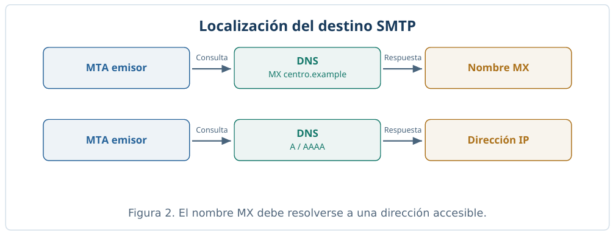
El DNS interviene tanto en la localización de servidores de destino como en la validación de identidades y mecanismos de seguridad. Hay que distinguir el nombre que utiliza el cliente para conectarse del dominio que aparece en la dirección del destinatario.
| Consulta | Finalidad |
|---|---|
MX de centro.example |
Localizar receptores SMTP del dominio |
A / AAAA de mail.centro.example |
Obtener direcciones del servidor |
PTR de 198.51.100.20 |
Comprobar el nombre asociado a la IP |
TXT de empresa.example |
Consultar SPF |
TXT de s1._domainkey.empresa.example |
Consultar la clave DKIM del selector s1 |
TXT de _dmarc.empresa.example |
Consultar la política DMARC |
Resolución del servidor destinatario
dig centro.example MX +short
10 mail.centro.example.
20 backup.centro.example.
dig mail.centro.example A +short
198.51.100.20
dig -x 198.51.100.20 +short
mail.centro.example.
El MTA intentará normalmente los destinos con menor valor de preferencia antes que los de mayor valor. Si el servidor principal no está disponible, puede probar otro destino según las reglas SMTP. Los registros MX no contienen directamente direcciones IP.
Interpretación de respuestas DNS
| Resultado | Significado |
|---|---|
| NOERROR con respuesta | Consulta resuelta con datos |
| NOERROR sin datos del tipo solicitado | El nombre puede existir sin ese tipo de registro |
| NXDOMAIN | El nombre consultado no existe según la respuesta |
| SERVFAIL | El servidor no pudo resolver correctamente la consulta |
| Timeout | No se obtuvo respuesta en el plazo de espera |
La ausencia de MX no equivale automáticamente a imposibilidad de recibir correo: SMTP contempla un MX implícito cuando no existen registros MX y se cumplen las condiciones de resolución del dominio. Un Null MX (0 .) expresa, en cambio, que el dominio no acepta correo. Un fallo temporal de DNS no debe confundirse con un dominio inexistente.
En entornos con DNS interno y externo, las respuestas pueden diferir intencionadamente. Debe consultarse el resolvedor utilizado por el componente afectado. La caché y el TTL explican por qué un cambio de DNS no se observa simultáneamente desde todos los sistemas. No debe diagnosticarse un problema de propagación sin comprobar primero los servidores autoritativos y la respuesta concreta del resolvedor.
Verificación del funcionamiento de SMTP
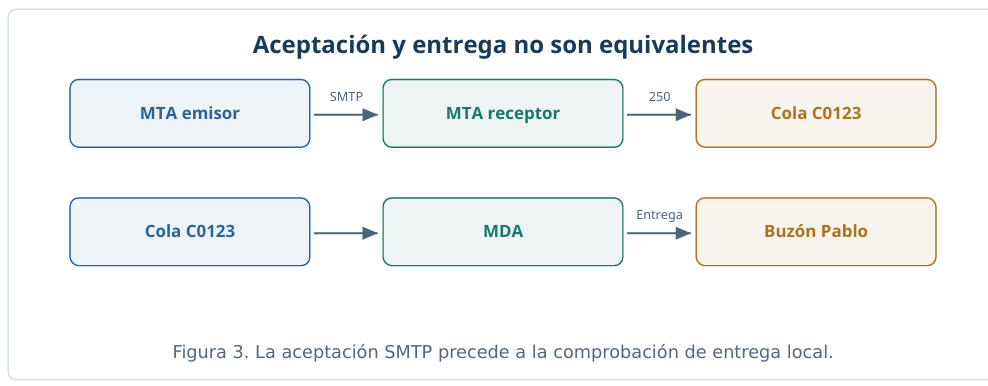
La verificación SMTP debe distinguir entre presentación de mensajes por usuarios, transferencia entre MTA y entrega final. Cada fase puede fallar independientemente. La respuesta 220 inicial solo confirma que se ha recibido un saludo SMTP; no demuestra que se admitan todos los destinatarios ni que el correo llegue al buzón.
Prueba de una transacción SMTP
Una prueba controlada permite comprobar el saludo, las extensiones anunciadas, la aceptación del remitente y destinatario del sobre y la recepción del contenido. En un servicio de submission real se debe emplear TLS y autenticación conforme a su política. El siguiente diálogo representa una transferencia entre MTA en un laboratorio aislado, sin credenciales y sin cifrado para facilitar el estudio del protocolo.
Transferencia de Ana a Pablo
S: 220 mail.centro.example ESMTP
C: EHLO mail.empresa.example
S: 250-mail.centro.example
S: 250 SIZE 26214400
C: MAIL FROM:<ana@empresa.example>
S: 250 2.1.0 Sender OK
C: RCPT TO:<pablo@centro.example>
S: 250 2.1.5 Recipient OK
C: DATA
S: 354 End data with <CRLF>.<CRLF>
C: From: Ana <ana@empresa.example>
C: To: Pablo <pablo@centro.example>
C: Date: Wed, 25 Nov 2026 19:00:00 +0000
C: Message-ID: <prueba12-001@empresa.example>
C: Subject: Prueba RA4-12
C:
C: Mensaje de comprobacion.
C: .
S: 250 2.0.0 Queued as C0123
C: QUIT
S: 221 2.0.0 Bye
El código 250 posterior al punto final indica que el servidor ha aceptado responsabilidad por el mensaje. El identificador C0123 permite correlacionarlo con sus registros locales. Para comprobar la entrega efectiva debe verificarse el MDA y consultar el buzón de Pablo.
Una prueba de recepción local no comprueba la capacidad de enviar a dominios externos. Para verificar la retransmisión segura se necesitan casos positivos (usuario autorizado) y negativos (emisor no autorizado hacia un dominio ajeno), utilizando exclusivamente dominios y equipos del laboratorio. La prueba negativa puede detenerse tras RCPT TO mediante RSET o QUIT, sin enviar contenido.
Verificación del funcionamiento de POP3 e IMAP
Una vez depositado un mensaje en el buzón, el MAA permite consultarlo. Debe comprobarse el acceso a la cuenta, la enumeración de mensajes, la recuperación de contenido y, en IMAP, la gestión de carpetas y estados. Un saludo correcto no acredita que la autenticación o el almacenamiento funcionen.
Consulta POP3 sin eliminar mensajes
Diálogo ilustrativo después de establecer TLS y autenticarse con una cuenta de prueba:
C: STAT
S: +OK 2 1400
C: LIST
S: +OK 2 messages
S: 1 800
S: 2 600
S: .
C: UIDL
S: +OK
S: 1 u001
S: 2 u002
S: .
C: QUIT
S: +OK Bye
STAT indica dos mensajes y 1400 octetos. UIDL permite distinguir mensajes entre sesiones cuando el servidor admite este comando. No se utiliza DELE, por lo que la prueba no solicita eliminar mensajes.
Consulta IMAP sin marcar como leído
Tras negociar TLS y autenticarse:
C: a1 EXAMINE INBOX
S: * 2 EXISTS
S: * OK [UIDVALIDITY 12345] UIDs valid
S: a1 OK [READ-ONLY] EXAMINE completed
C: a2 UID SEARCH ALL
S: * SEARCH 101 102
S: a2 OK SEARCH completed
C: a3 UID FETCH 102 (BODY.PEEK[HEADER.FIELDS (SUBJECT)])
S: * 2 FETCH (UID 102 BODY[HEADER.FIELDS (SUBJECT)] {26}
S: Subject: Prueba RA4-12
S:
S: )
S: a3 OK FETCH completed
C: a4 LOGOUT
S: * BYE Logging out
S: a4 OK LOGOUT completed
EXAMINE abre la carpeta en modo de solo lectura y BODY.PEEK evita solicitar el cambio de la marca de lectura. El literal indicado entre llaves representa el número de octetos que siguen, incluidos los saltos CRLF. En una captura real deben respetarse esos límites; los prefijos C: y S: son anotaciones didácticas y no forman parte del protocolo.
Si POP3 muestra mensajes pero IMAP no los presenta, se investigarán las rutas de almacenamiento, la identidad autenticada, las carpetas seleccionadas, los permisos y los índices. En IMAP, una carpeta no suscrita puede no aparecer en el cliente aunque exista en el servidor.
Comprobación de las cuentas, buzones y alias
La existencia de una dirección de correo no implica necesariamente que exista una cuenta autenticable. Un alias puede redirigir hacia uno o varios buzones; el destinatario del sobre puede diferir de la cabecera To. Para comprobar estos elementos se necesita conocer el mapa de destinatarios esperado.
| Elemento | Comprobación |
|---|---|
| Cuenta | Identidad activa y credenciales válidas |
| Dirección principal | Aceptación SMTP para el dominio correspondiente |
| Buzón | Existencia, acceso, permisos, cuota y espacio |
| Alias | Expansión correcta a los destinatarios previstos |
| Buzón compartido | Acceso autorizado de cada usuario |
| Forwarding | Entrega al destino previsto sin bucles |
Verificación de un alias
soporte@centro.example es un alias de pablo@centro.example y laura@centro.example. Se envía un único mensaje identificado a soporte y se comprueba que llega a ambos buzones. Se verifica además que el alias no necesita credenciales propias y que un destinatario inexistente se rechaza conforme a la política establecida. La cabecera To puede seguir mostrando soporte aunque la entrega final sea a Pablo y Laura.
Una respuesta SMTP favorable a RCPT TO no demuestra que el buzón exista en todos los diseños: algunos servidores aceptan destinatarios para validarlos posteriormente o emplean catch-all. Debe contrastarse con los registros de entrega y el acceso al buzón. Las pruebas de permisos deben incluir un usuario autorizado y otro sin autorización, sin consultar datos personales de terceros.
Comprobación de los mecanismos de autenticación
La autenticación comprueba la identidad que presenta el cliente; la autorización determina qué operaciones puede realizar. Un usuario puede autenticarse correctamente y no estar autorizado a retransmitir hacia cierto dominio, acceder a una carpeta o utilizar una identidad de envío.
| Síntoma | Posibles causas |
|---|---|
| SMTP 535 | Credenciales incorrectas o autenticación rechazada |
| SMTP 530 | Autenticación o requisito previo exigido, según el texto de respuesta |
| IMAP NO durante LOGIN | Credenciales, cuenta desactivada o política de acceso |
| POP3 -ERR al autenticar | Credenciales, bloqueo o servicio de identidad |
| Token rechazado | Caducidad, ámbito incorrecto o audiencia no válida |
Debe comprobarse el identificador completo de usuario, el mecanismo SASL admitido, la disponibilidad del directorio de identidades y los requisitos de TLS. Cuando existe MFA, puede ser necesario utilizar un flujo de autorización moderno o una contraseña de aplicación si la plataforma lo admite. La contraseña habitual no siempre es válida para un cliente tradicional.
Autenticación correcta, operación denegada
Ana inicia sesión en el servicio de submission y recibe 235 2.7.0 Authentication successful. Al intentar utilizar como remitente una identidad que no tiene autorizada, el servidor responde 553 5.7.1 Sender address rejected. La causa no es un fallo de contraseña sino una restricción de autorización.
No se deben realizar numerosos intentos de autenticación para diagnosticar un error: pueden activar mecanismos de bloqueo. Nunca deben incluirse contraseñas, tokens o cadenas AUTH en informes o capturas compartidas. Base64 es una codificación reversible, no un mecanismo de protección de credenciales.
Verificación de los certificados digitales y las comunicaciones TLS
TLS protege la comunicación entre dos extremos. La verificación debe comprobar que se negocia el cifrado, que el certificado pertenece al nombre del servicio, que su periodo de validez es adecuado y que existe una cadena de confianza aceptada por el cliente. El cifrado negociado y la autenticación del servidor son comprobaciones distintas.
TLS explícito e implícito
En STARTTLS (SMTP e IMAP) o STLS (POP3), la conexión comienza con el protocolo de aplicación y posteriormente se negocia TLS. En los puertos de TLS implícito, la negociación TLS ocurre antes de cualquier diálogo de aplicación. Confundir estas modalidades produce errores de conexión aunque el puerto esté accesible.
Comprobación de un certificado SMTP
openssl s_client -starttls smtp \
-connect mail.empresa.example:587 \
-servername mail.empresa.example \
-verify_hostname mail.empresa.example \
-verify_return_error
El parámetro -starttls smtp indica que primero se realizará el intercambio necesario del protocolo SMTP. -servername envía el nombre SNI y -verify_hostname comprueba la identidad del servidor. La validación depende de las autoridades de confianza disponibles en el equipo.
Comprobación de IMAP con TLS implícito
openssl s_client -connect mail.centro.example:993 \
-servername mail.centro.example \
-verify_hostname mail.centro.example \
-verify_return_error
En el puerto 993 no se utiliza -starttls imap, puesto que TLS se negocia desde el principio. Un laboratorio con autoridad certificadora propia deberá proporcionar su certificado de confianza al cliente de pruebas.
| Incidencia | Comprobación |
|---|---|
| Certificate has expired | Fechas de validez y reloj del equipo |
| Hostname mismatch | Nombre configurado y extensión SAN del certificado |
| Unable to get local issuer certificate | Cadena enviada y autoridades de confianza |
| Wrong version number | Modalidad TLS, puerto y servicio real |
| Handshake failure | Versiones TLS, algoritmos y políticas compatibles |
No es una solución adecuada desactivar permanentemente la validación del certificado. En SMTP entre MTA, las políticas de TLS oportunista pueden diferir de las exigidas para submission o acceso a buzones; MTA-STS y DANE pueden imponer condiciones adicionales.
Análisis de las cabeceras de los mensajes de correo
Las cabeceras aportan información sobre la composición, el transporte y las verificaciones realizadas. Constituyen una fuente de diagnóstico, pero no todas tienen el mismo grado de confianza: el remitente puede introducir cabeceras arbitrarias antes de entregar el mensaje al primer servidor confiable.
| Cabecera | Utilidad |
|---|---|
| From | Identidad de autor declarada |
| To / Cc | Destinatarios visibles; no necesariamente todos los del sobre |
| Date | Fecha declarada de composición |
| Message-ID | Identificador del mensaje, útil para correlacionar evidencias |
| Received | Trazas añadidas por los servidores durante el transporte |
| Return-Path | Remitente del sobre registrado en la entrega final |
| Authentication-Results | Resultados SPF, DKIM y DMARC de un sistema de validación |
| DKIM-Signature | Datos de la firma DKIM y del dominio firmante |
Los campos Received suelen añadirse al principio de las cabeceras. Para reconstruir la secuencia se leen de abajo arriba, considerando únicamente la cadena que pueda atribuirse a sistemas de confianza. Los relojes pueden no estar sincronizados y las zonas horarias deben normalizarse antes de calcular tiempos.
Trazas de un mensaje entre dominios
Return-Path: <ana@empresa.example>
Received: from mail.empresa.example (192.0.2.10)
by mail.centro.example with ESMTP id C0123;
Wed, 25 Nov 2026 19:00:08 +0000
Received: from cliente.empresa.example
by mail.empresa.example with ESMTPSA id E0456;
Wed, 25 Nov 2026 19:00:02 +0000
Authentication-Results: mail.centro.example;
spf=pass smtp.mailfrom=empresa.example;
dkim=pass header.d=empresa.example;
dmarc=pass header.from=empresa.example
From: Ana <ana@empresa.example>
To: Pablo <pablo@centro.example>
Message-ID: <prueba12-001@empresa.example>
Subject: Prueba RA4-12
En este ejemplo simplificado transcurren seis segundos entre las dos marcas Received. El resultado DMARC indica una autenticación alineada satisfactoria según el receptor que añadió Authentication-Results. No demuestra que el contenido sea seguro ni que la persona que escribió el mensaje sea realmente Ana. Se necesita confiar en el sistema que generó esa cabecera.
Análisis de las colas de mensajes
El MTA mantiene mensajes pendientes de procesamiento o transferencia. Las colas desacoplan la aceptación del mensaje de su entrega definitiva y permiten reintentos ante fallos temporales.
| Estado conceptual | Interpretación |
|---|---|
| Pendiente | Mensaje aceptado y a la espera de procesamiento |
| Activo | Mensaje seleccionado para un intento de entrega |
| Diferido | Intento fallido temporalmente; se programará otro |
| Retenido | Mensaje bloqueado por una política o revisión administrativa |
| Entregado | El siguiente sistema o agente final lo ha aceptado |
| Fallido definitivo | No se completará esa entrega; se gestiona la notificación correspondiente |
Los nombres concretos de estados y colas dependen del software. Un mensaje con varios destinatarios puede tener resultados distintos para cada uno. El identificador de cola es local a cada servidor y puede cambiar en otro salto; Message-ID ayuda a correlacionar los mensajes, aunque no es infalible ni necesariamente único.
Interpretación de una cola diferida
| ID | Destino | Antigüedad | Último resultado |
|---|---|---|---|
| E0456 | centro.example | 12 min | 451 4.4.1 Error temporal |
| E0457 | centro.example | 9 min | Timeout TCP 25 |
| E0458 | otro.example | 2 min | Pendiente |
La concentración de fallos en centro.example sugiere investigar el destino, sus MX y la conectividad. No demuestra que el servidor emisor esté globalmente averiado. Se debe conservar la cola mientras se investiga, salvo que exista un procedimiento autorizado para gestionar mensajes abusivos o duplicados.
Un aumento continuo de la cola, acompañado de mensajes cada vez más antiguos, indica que el ritmo de entrada supera al de salida. Forzar reintentos repetidos puede empeorar una saturación o provocar limitaciones adicionales del receptor.
Interpretación de los códigos de error SMTP
Los códigos SMTP tienen tres dígitos. Su primer dígito clasifica el resultado. Los códigos de estado ampliados, cuando están presentes, aportan detalles adicionales y se expresan como clase, asunto y detalle (por ejemplo, 5.1.1). El texto descriptivo y la fase de la sesión son esenciales para interpretarlos.
| Clase | Significado | Acción general |
|---|---|---|
| 2xx | Finalización positiva | Continuar o finalizar la operación |
| 3xx | Respuesta intermedia positiva | Enviar la información solicitada |
| 4xx | Fallo temporal | Reintentar según la política aplicable |
| 5xx | Fallo permanente de la petición | Investigar y corregir antes de repetir |
| Respuesta ilustrativa | Interpretación habitual |
|---|---|
| 421 4.3.2 | Servicio temporalmente no disponible |
| 450 4.2.0 | Buzón temporalmente no disponible |
| 451 4.3.0 | Error temporal de procesamiento |
| 452 4.3.1 | Recursos o almacenamiento insuficientes |
| 530 5.7.0 | Requisito de autenticación o seguridad |
| 535 5.7.8 | Credenciales de autenticación rechazadas |
| 550 5.1.1 | Destinatario inexistente |
| 550 5.7.1 | Entrega rechazada por una política |
| 552 5.3.4 | Mensaje demasiado grande |
| 554 5.7.1 | Transacción rechazada por una política |
Un mismo código básico puede utilizarse en diferentes situaciones. No debe interpretarse 550 como destinatario inexistente sin examinar el código ampliado y el texto. Las respuestas ampliadas de la tabla son ejemplos, no una asociación exclusiva para cada código básico.
Rechazo de un único destinatario
Un servidor acepta RCPT TO:<pablo@centro.example> con 250, pero rechaza otro destinatario con 550 5.1.1. El MTA puede continuar la entrega para Pablo y gestionar el fallo del otro destinatario por separado. El rechazo no implica necesariamente que haya fallado el mensaje completo.
Las notificaciones DSN suelen incluir campos como Final-Recipient, Action, Status y Diagnostic-Code. Se debe distinguir el servidor que genera la notificación del que originó el rechazo. Una notificación de entrega al siguiente sistema tampoco garantiza que el usuario haya leído el mensaje.
Análisis de los registros de actividad (Logs)
Los registros proporcionan una secuencia temporal de los acontecimientos: conexiones, autenticaciones, aceptación de mensajes, intentos de transferencia, entrega local y acceso al buzón. Su formato depende de cada aplicación y puede estar centralizado en un sistema de monitorización.
Correlación de eventos de una entrega
19:00:02 msa auth user=ana result=ok
19:00:02 mta queue=E0456 action=accepted
19:00:08 mta queue=E0456 remote=198.51.100.20 result=250
19:00:08 mta queue=C0123 action=accepted
19:00:09 mda queue=C0123 user=pablo result=stored
19:01:15 imap user=pablo action=login result=ok
Son registros genéricos de dos servidores, no la salida de una aplicación concreta. El resultado 250 del emisor y la aceptación del receptor corresponden al mismo salto; el registro del MDA aporta evidencia adicional de almacenamiento. El inicio de sesión IMAP no demuestra que Pablo haya leído ese mensaje concreto.
Información útil para el diagnóstico
Conviene disponer de fecha y hora, servidor de origen, componente, identificador local de cola, dirección IP remota, estado y motivo del fallo. Para correlacionar saltos pueden utilizarse también Message-ID, remitente y destinatario, cuando la política de privacidad lo permita.
La sincronización de relojes y el uso de una zona horaria explícita facilitan el análisis distribuido. Los registros deben protegerse contra accesos no autorizados y contar con una política de retención y rotación. El nivel de detalle de diagnóstico debe limitarse al necesario: un registro excesivamente verboso puede consumir almacenamiento y revelar información sensible.
Captura y análisis del tráfico de correo electrónico
La captura de paquetes permite observar las comunicaciones desde un punto concreto de la red. Puede confirmar si se establece TCP, si se retransmiten segmentos, si se negocia TLS o si aparecen respuestas SMTP en tráfico no cifrado. Debe realizarse solo en redes autorizadas y con datos de prueba.
Filtros de captura y visualización
Los filtros de captura seleccionan qué paquetes se registran; los de visualización seleccionan qué paquetes ya capturados se muestran. No utilizan necesariamente la misma sintaxis.
| Objetivo | Filtro de captura BPF | Filtro de visualización Wireshark |
|---|---|---|
| SMTP entre MTA | tcp port 25 |
tcp.port == 25 |
| Submission | tcp port 587 or tcp port 465 |
`tcp.port == 587 |
| IMAP | tcp port 143 or tcp port 993 |
`tcp.port == 143 |
| POP3 | tcp port 110 or tcp port 995 |
`tcp.port == 110 |
| DNS clásico | port 53 |
dns |
| TLS | tcp port 993 (ejemplo) |
tls |
Captura del tráfico SMTP de un laboratorio
tcpdump -i <interfaz> -nn -w prueba-smtp.pcap \
'host 198.51.100.20 and tcp port 25'
Se sustituye <interfaz> por la interfaz que observa el tráfico. La captura puede abrirse con un analizador de protocolos. Si se utiliza STARTTLS, los comandos posteriores a la negociación estarán cifrados y no podrán interpretarse directamente como texto. No se deben desactivar las medidas de cifrado de un servicio real para facilitar una captura.
Interpretación de una captura TCP
| Observación | Hipótesis que deben contrastarse |
|---|---|
| SYN repetidos sin respuesta | Filtrado, ruta, pérdida o servicio no accesible |
| RST tras SYN | Rechazo activo o ausencia de escucha |
| SYN, SYN-ACK y ACK | Conexión TCP establecida |
| TCP establecido sin saludo SMTP | Servicio incorrecto, saturación o espera de TLS implícito |
| Alerta TLS | Problema de negociación o validación; revisar ambos extremos |
| Respuesta SMTP 4xx | Fallo temporal a nivel de aplicación |
Una captura muestra lo que ocurre en su punto de observación, no necesariamente en toda la red. Las funciones de descarga de trabajo a la tarjeta de red pueden producir indicaciones aparentes de sumas de comprobación incorrectas en capturas locales; no deben confundirse automáticamente con corrupción real.
Herramientas de diagnóstico
Las herramientas son instrumentos para obtener evidencias; ninguna reemplaza la metodología de diagnóstico. Su disponibilidad y sintaxis pueden variar según la plataforma. Los ejemplos no constituyen procedimientos de instalación.
| Herramienta | Utilidad principal | Limitación |
|---|---|---|
| ping | Respuesta ICMP | No comprueba puertos |
| traceroute / tracert | Saltos hacia el destino | Filtrado y rutas asimétricas pueden ocultar saltos |
| nc | Conexión TCP y diálogo de texto | No valida TLS por sí solo |
| dig / nslookup | Consultas DNS | Dependen del resolvedor consultado |
| openssl s_client | Negociación y diagnóstico TLS | No valida el flujo completo de correo |
| swaks | Pruebas SMTP controladas | Requiere parámetros adecuados al servicio |
| curl | Pruebas de protocolos y HTTPS | Capacidades según compilación y versión |
| tcpdump | Captura de paquetes | Punto de observación limitado |
| Wireshark | Análisis de protocolos | Contenido TLS no visible sin claves autorizadas |
| Visor de registros y colas | Estado interno del servidor | Depende del software y permisos |
Prueba SMTP con una herramienta especializada
swaks --server mail.centro.example --port 25 \
--from ana@empresa.example --to pablo@centro.example \
--quit-after RCPT
Esta prueba de laboratorio termina después de RCPT TO y no entrega un mensaje. Sirve para observar la aceptación o rechazo del destinatario. Para comprobar una entrega completa sería necesario realizar una transacción con DATA y verificar posteriormente el buzón. No deben utilizarse direcciones de terceros sin autorización.
Monitorización del rendimiento y disponibilidad del servicio
La monitorización consiste en observar indicadores de forma continuada para detectar desviaciones y anticipar incidencias. Una prueba puntual responde a si el servicio funciona en un instante; la monitorización aporta información sobre su comportamiento a lo largo del tiempo.
| Indicador | Qué permite detectar |
|---|---|
| Disponibilidad TCP por servicio | Interrupciones de escucha o conectividad |
| Prueba funcional SMTP / IMAP | Fallos de aplicación que no detecta TCP |
| Profundidad y antigüedad de cola | Retrasos y acumulación de mensajes |
| Tasa de entregas y errores 4xx/5xx | Problemas de transferencia o políticas |
| Tiempo de entrega extremo a extremo | Retraso real percibido por el usuario |
| Uso de almacenamiento e inodos | Riesgo de imposibilidad de almacenar correo |
| Latencia de autenticación | Saturación o fallos del servicio de identidad |
| Caducidad de certificados | Riesgo de interrupción futura de TLS |
| Tasa de spam y bloqueos | Cambios en amenazas o falsos positivos |
| Sesiones simultáneas | Presión sobre recursos del servidor |
Indicadores cuantitativos
La disponibilidad observada puede expresarse como porcentaje del tiempo total de observación durante el que una prueba funcional resulta satisfactoria. Debe definirse qué se mide, la frecuencia de muestreo y el tratamiento de las interrupciones planificadas. La disponibilidad de SMTP y la de IMAP pueden ser distintas.
Disponibilidad y acumulación de mensajes
En un periodo de 24 horas (1440 minutos), un servicio permanece indisponible durante 15 minutos. Su disponibilidad teórica es (1440 - 15) / 1440 × 100 = 98,96 %. Si durante una incidencia entran 120 mensajes por minuto y solo salen 80, la cola aumenta en 40 mensajes por minuto; en 10 minutos acumulará 400 mensajes adicionales, suponiendo tasas constantes y sin otras bajas de la cola.
Los umbrales deben adaptarse a la carga normal y a las necesidades del servicio. Una alarma por un único error temporal puede generar ruido, mientras que una alarma por crecimiento sostenido de la cola y aumento de su antigüedad resulta más informativa. Las pruebas sintéticas deben utilizar cuentas controladas y retirar los mensajes de prueba conforme a una política definida.
Incidencias habituales y procedimientos de resolución
El objetivo de una intervención es restablecer la función afectada sin reducir injustificadamente la seguridad ni perder mensajes. La siguiente matriz relaciona síntomas, verificaciones y medidas generales, independientes de cualquier implementación.
| Síntoma | Comprobación prioritaria | Posible medida correctora |
|---|---|---|
| No se puede enviar desde el cliente | Puerto de submission, TLS, autenticación | Corregir parámetros y permisos |
| No llega correo externo | MX, direcciones y TCP 25 desde WAN | Corregir DNS, publicación o filtrado |
| Correo saliente diferido | Cola, DNS, TCP 25 y respuesta remota | Resolver conectividad o política de salida |
| SMTP acepta pero no aparece el mensaje | Registros MDA, cuota y almacenamiento | Restaurar capacidad o corregir entrega |
| IMAP no permite iniciar sesión | TLS, identidad y servicio de autenticación | Corregir identidad o política |
| Mensaje en spam | Cabeceras de autenticación y clasificación | Revisar autenticación, reputación y filtro |
| Alias no entrega | Mapa de destinos y registros de expansión | Corregir asociación o bucle |
| Certificado no válido | SAN, cadena, fechas y reloj | Renovar certificado o reparar confianza |
| Correo rechazado por tamaño | Límites SMTP y tamaño MIME | Ajustar política o usar archivos menores |
| Mensajes duplicados | Reintentos, UIDL, reglas y trazas | Identificar duplicación antes de eliminar |
SMTP operativo, buzón vacío
El MTA receptor ha respondido 250 2.0.0 Queued as C0123. Los registros posteriores muestran un fallo temporal del MDA por falta de espacio. El cliente IMAP se autentica correctamente, pero no encuentra el mensaje. La intervención debe centrarse en recuperar capacidad de almacenamiento de forma segura y permitir que el sistema reintente la entrega. No procede cambiar los puertos IMAP ni desactivar el antispam. Tras la corrección se verifica la entrega de C0123 y se realiza una nueva prueba completa.
Mensajes legítimos rechazados por autenticación de dominio
Un mensaje presenta spf=fail después de un reenvío y dkim=fail porque un intermediario modificó contenido firmado. DMARC falla si no queda ninguna vía válida y alineada. Se analizan las cabeceras y la arquitectura de reenvío, evitando desactivar globalmente la protección DMARC. Las medidas pueden incluir preservar la firma, corregir los flujos de envío autorizados o aplicar políticas locales justificadas en el receptor.
Documentación de la configuración y de las pruebas realizadas
La documentación permite reproducir una configuración, justificar decisiones, facilitar el mantenimiento y demostrar qué funciones se han verificado. Debe distinguir entre valores previstos, resultados reales y cambios pendientes. No debe contener secretos ni mensajes personales innecesarios.
Inventario mínimo
Se registrarán los dominios atendidos, nombres de servidores, interfaces, puertos, funciones MSA/MTA/MDA/MAA, dependencias DNS, rutas de correo, modalidad TLS, mecanismos de autenticación, políticas de retransmisión, almacenamiento, cuotas, alias y copias de seguridad. Los datos específicos de cada aplicación se incorporarán en los documentos de implementación.
Matriz de pruebas funcionales
| Prueba | Resultado esperado | Criterio relacionado |
|---|---|---|
| Consulta MX y conexión SMTP | Destino localizado y servicio accesible | CE1, CE2 |
| Envío interno autorizado | Entrega al buzón local | CE2, CE7 |
| Envío entre dominios | Transferencia y entrega verificadas | CE1, CE7 |
| Acceso con cuenta válida | Autenticación y acceso al buzón | CE3, CE6 |
| Acceso con cuenta no autorizada | Denegación | CE3, CE5 |
| Envío a un alias | Entrega a los destinos definidos | CE4 |
| Retransmisión externa no autorizada | Rechazo antes de aceptar contenido | CE5 |
| Conexión TLS | Certificado e identidad válidos | CE5 |
| Consulta POP3 e IMAP | Recuperación o sincronización esperada | CE6, CE7 |
| Fallo temporal simulado | Mensaje conservado y reintento posterior | CE2, CE7 |
Los resultados esperados de esta tabla no acreditan que las pruebas se hayan ejecutado. En una práctica deberán añadirse el resultado observado, la fecha y una evidencia asociada, así como indicar si cada prueba es satisfactoria, fallida o no realizada.
Ficha de una incidencia
| Campo | Valor ilustrativo |
|---|---|
| Identificador | INC-RA4-012 |
| Síntoma | Pablo no recibe el correo de Ana |
| Alcance | Entrega local en centro.example |
| Evidencia | SMTP 250, cola C0123, error de almacenamiento |
| Causa confirmada | Falta de espacio en el almacenamiento |
| Corrección | Recuperación segura de capacidad |
| Verificación | Entrega C0123 y prueba nueva por IMAP |
| Prevención | Alertas de capacidad y antigüedad de cola |
| Estado | Resuelta en el escenario ilustrativo |
Referencias técnicas para ampliar los contenidos
Las especificaciones de SMTP (RFC 5321), formato de mensajes (RFC 5322), submission (RFC 6409), POP3 (RFC 1939), IMAP4rev2 (RFC 9051), TLS para submission y acceso (RFC 8314), códigos de estado ampliados (RFC 3463), DSN (RFC 3464) y Authentication-Results (RFC 8601) proporcionan una base para ampliar la interpretación de los protocolos. Deben consultarse junto con sus actualizaciones y erratas en el repositorio del RFC Editor: https://www.rfc-editor.org/.